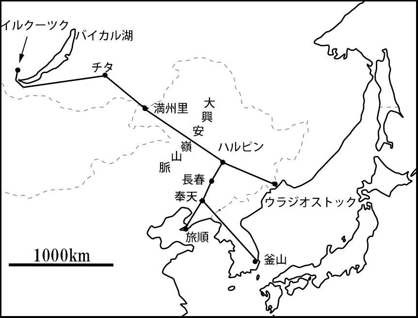
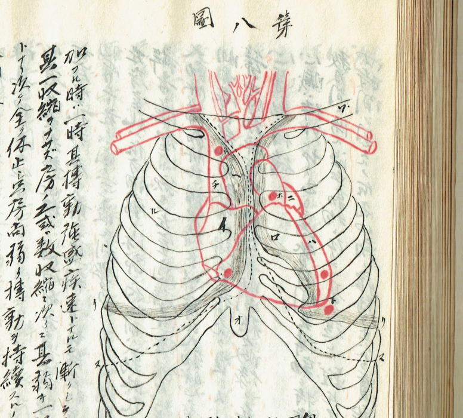

| 氷雪のバイカル: ロシア革命を見た少年 | |
| 佐賀純一 | |
| (2015) | |
| 一九一三年（大正二年） | 六月 | 佐賀武、ロシアへ渡る。 |
| 一九一四年（大正三年） | 七月 | 第一次世界大戦勃発。 |
| 一九一五年（大正四年） | 一一月 | チェコ独立のための行動委員会、パリに設立される。 |
| 一九一七年（大正六年） |
一月 | 中国北洋軍閥、段祺瑞政府に対する「西原借款」開始。 |
| 三月 | ロシア二月革命、ロマノフ王朝滅亡。 | |
| 七月 | ケレンスキー内閣成立。 | |
| 一一月 | ロシア十月革命、ソビエト政権樹立。 | |
| 一二月 | ソビエト・ドイツ間に休戦協定成立。 | |
| 中国軍隊、ハルピンの過激派を掃討。 | ||
| 一九一八年（大正七年） |
二月 | 日本政府、コサック大尉・セミヨーノフの率いる反革命軍に対する軍事援助を正式に決定。 |
| 三月 | ソビエト政府、ドイツ・オーストリアとの講和条約に調印。 | |
| 四月 | 佐賀武、一時帰国。 | |
| 五月 | 中日陸軍共同防敵軍事協定調印。 | |
| 佐賀武、妻子を伴ってハルピンへ渡る。 | ||
| チェリアビンスク駅でチェコ軍とソビエト軍衝突。 | ||
| 八月 | 日米英加仏伊中陸軍、ウラジオストックに上陸。 | |
| 日本各地で米騒動。 | ||
| 九月 | 日本陸軍、ハルピン・満州里を経てザバイカルへ侵攻。 | |
| イルクーツクに諜報機関と護衛部隊を派遣。 | ||
| 佐賀武とその家族、イルクーツク到着。 | ||
| 一一月 | 第一次世界大戦終結。 | |
| 旧ロシア帝国海軍少将コルチャーク、オムスクに反革命政権樹立。 | ||
| 一九一九年（大正八年） | 二月 | 田中大隊全滅。 |
| 四月 | 佐賀武の妻子、軍用列車で帰国の途に着く。 | |
| 五月 | 日本政府、英米仏伊各国政府にオムスク政府承認を提議。 | |
| 七月 | オムスク政府、イルクーツク以西へ日本軍二個師団派遣要請、日本政府拒否の回答。 | |
| 一〇月 | 原内閣、加藤特命全権大使をオムスクに派遣。 | |
| 一一月 | ソビエト軍の攻勢により、コルチャーク提督オムスクを脱出。 | |
| 一九二〇年（大正九年） | 一月 | オムスク政府瓦解。 |
| 四月 | アメリカ軍シベリアより撤兵。 | |
| 八月 | 日本軍、ザバイカルより撤兵。 | |
| 九月 | チェコ軍、引き揚げ完了。 | |
| 一二月 | セミョーノフ軍、ソビエト軍に破れ、解体。 | |
| 佐賀武、帰国。 | ||
| 一九二二年（大正一一年） | 一月 | シベリア派遣軍の撤兵完了。 |

祖母の十三年忌の法事の日に、祖父方の親戚の老人が一枚の古びた写真を持ってきた。その写真には雪をかぶった洋風の家を背景に、奇妙な人物が大勢並んでいた。左端には女が三人、ブラウスにセーターを着た若い女が椅子に座り、もう一人の女はその脇に立っている。この二人は顔立ちからしてロシア人のようだ。もう一人の若い女は日本人のように見える。勝気そうな表情をしたこの女は頭を束髪に結い、髷の横に簪をさして、ごわごわと固そうな外套に身を包み、胸の下で両手を軽く組んでいる。女の右には蒙古の男たちが緊張した面もちで並んでいる。彼らはジンギスカンがかぶったような帽子をかぶり、立派な刺繍の蒙古服を着ている。
前列の丸顔の少年は蒙古服の襟を高く立て、両手を長い袖の中に隠して隣の男に寄り掛かっている。右端の椅子には長い髭を胸まで垂らしたロシアの男が写っている。その容姿から推察すると、どうやら司祭であるらしい。この男の左に、白いレースの帽子をかぶり、オーバーを着てひらひらした飾り布を胸に垂らしたロシアの少女が直立している。少女は寒さに凍えているように見える。
蒙古の少年とロシアの少女の間に日本人の男が椅子に座っている。三十代なかばだろうか、雪の中だというのに紋付の羽織袴という恰好だ。頭を七三に分け、眼鏡をかけて、鼻の下には見事なカイゼル髭をたくわえ、顔は四角くて目が鋭く、眉が太い。袴の下にのぞいている足には靴を履いている。右の靴は雪に埋もれているが、前に踏み出した左の靴のつま先が、まっすぐカメラのレンズに向かっている。背後の家の玄関の軒の上に看板が掲げてある。看板にはロシア文字で次のように記してある。
日本人医師 佐賀武 患者の来院を歓迎す
診察時間 午前10時より午後２時まで
看板の下のドアの柱には漢字で「日本人医師 佐賀武」と書かれた表札が下がっている。名前の左には小さな文字で何事か長々と記されているが、ぼんやりして判読できない。
写真を持ってきてくれた老人は、これがいつ送られてきたものか忘れてしまったという。撮影された場所も分からない。ただそれが大正二年から六年までの間に撮影されたものであることは間違いない。というのはこの写真の真ん中に写っている羽織袴の人物は私の祖父であり、祖父がロシアで医院を開業していたのは、ロシア革命以前の四年間であったからだ。
祖父は私が生まれる前に他界したから、ロシアでどんな暮らしをしていたのかじかに話を聞くことはできなかった。祖母は一時祖父とともにシベリアで暮らしたが、私がそれについて聞いてもろくに応じてくれなかった。そして父も自分の父親については滅多に話題にしなかった。何の折だったか、私は祖父はどんな性格の人だったかと父に聞いたことがある。すると彼は、「分からないね」と全く他人事のように言ったものだ。「あの人の考えていることなんか分かるはずがない。異邦人だな。いやそうじゃない。異邦人だって親父ほど変わっちゃいないさ」
どうやら彼は、佐賀武という人物が好きではなかったらしい。しかし、彼は自分の父親について無関心であったわけではない。それどころか、彼は佐賀武という人物を驚くほどはっきりと見ていた。そしてその観察した記憶を密かに脳裏に蓄えておいたのだ。
「実を言うと、この写真を見たのは今度が初めてじゃない」と父はある晩、写真を見ながら私に言った。「七十何年か前に、親父はこれと同じ写真を母のところへ送ってきたことがあった。手紙がいっしょに入っていた。母は一読すると、すぐに手紙を焼いてしまった。写真もその時に焼いた。あれは僕が五歳の時だったから、写真が撮影されたのは恐らく七十二年前ということになる」
父はこんな風に語り始めた。以下に記すのは彼が七十七歳から七十八歳の誕生日を迎えるまでの一年間に私に語った話の記録である。この話を読み返すとき、私は祖父が異常であったと同じ程度に、祖父の時代とそこに生きる人々を見ていた父の目もまた、恐ろしいほどに異常であったということを改めて知るのだ。
父が家族を茨城の片田舎の安中に残して、ひとりでロシアへ出発したのは、大正二年の六月だった。僕はその時二歳半だったが、どういうわけかその日の出来事を覚えている。
母と僕を乗せた人力車の少し前を、父の乗った人力車が走っていた。よく晴れた朝で、田圃の水が日の光にきらきら光っていた。人力車は曲がりくねった田舎道をどんどんと走って、広い水路のある家並を通り、やがて大きな宿の前で止まった。宿の側の水路には小舟がたくさん繋いであったが、岸辺のポプラ木の横に屋根より高い棒が立っていた。見上げるとその棒のてっぺんに、白い旗が風にひらひらと靡いていた。
父と母は宿の待合所に入ると、そこで長い間待った。父は煙草をふかしたり茶を飲んだりしていたが、母とはあんまり言葉をかわさなかったように思う。母は僕を抱いて、父とテーブルを挟む恰好で向かい合っていた。女中が蕎麦を持ってきた。やがてどこからかポーという汽笛が聞こえた。すると客がぞろぞろと動きだして、水路に繋いである艀に乗り込んだ。母は父の後から艀に乗った。
宿屋だの魚問屋が一列に並んでいる水路を三、四十間下ると、もうそこは海のように広い湖で、波の向こうに大きな船が煙突から盛んに煙を吐いているのが見えた。牛のようにのろい船だった。水車が船の横腹でバシャンバシャンと回転している。艀は波の上を搖れながら沖合いに出て行った。
蒸気船が目の前で止まると、客は艀から次々と大きな船によじ上った。ところが母は艀が波で搖れるものだから、なかなか移れない。それで船長は長い鈎棒で艀をエイッと引きつけて、動かないように力を入れて、その間に母は僕を抱えて蒸気船に跳び移った。父はそんな母を見ているだけで、手を貸そうとはしなかった。母は八十過ぎになっても木のぼりをして柿の実を取ったくらいだから、若い頃から丈夫で身軽だったんだろう。でも後から考えると、母はこの時妹を身籠っていたのだから、危ないことをしたと思う。
その時は幼かったから、ただ大きな船だなと思うばかりで何も分からなかったが、この船は通運丸と言って、当時はとても便利で有名な船だった。通運丸の発着点は東京の深川にあって、南は東京湾、北は利根川の上流まで運行していたが、霞ヶ浦へは隅田川から江戸川を遡り、流山の運河を通って利根川を下り、佐原を経由して入って来た。
父があの日待っていた船宿は霞ヶ浦湖畔の木原という田舎の船着場にあったが、木原の沖合いには蒸気船が定期的に立ち寄ったから、水路に沿って、宿屋、魚問屋などが軒を並べてちょっとした賑わいを見せていた。通運丸は乗客の他に、穀類、野菜、鮮魚、燃料、それから呉服反物、書物、薬品機械器具類などさまざまなものを運搬したから、船着場には人力車夫や人夫たちのたまり場もあったし、泊り客相手の女郎を置く宿も何軒もあったのだ。
船宿の前には必ず旗を上げる棒が立っていた。船宿に客が居る時には、この棒の先に白い旗を揚げる。通運丸の船長は望遠鏡でその旗を見て、汽笛を鳴らす。近くまで来たぞ、という合図だ。汽笛が鳴ると船待ちしていた乗客は艀に乗り込んで、蒸気船が止まる沖合いまで出て行く。宿に白旗が上がっていない時には汽笛を鳴らさないで通り過ぎるという具合いだ。
蒸気船は途中あちこちの村の沖合いに止まって、艀に乗ってきた客を次々に乗せて、昼過ぎになってようやく土浦の港に到着した。土浦は大変繁華な街だった。なにしろ霞ヶ浦の水運の一番の中心地だったし、常磐線に乗れば二時間余りで東京に出られる。それに筑波や水戸などへ通じる陸路には一頭立てのトテ馬車も運行していたから、商店街は周囲二十八ヶ町村から集まって来る買物客でごった返していた。
通運丸の停泊する港には、大型の高瀬船や伝馬船の水上生活者が大勢留まっていた。その人たちは東京と土浦の間の荷物の運搬を専門にしていたが、煮炊きには霞ヶ浦の水をそのまま使っていた。沿岸の村々の漁師たちも、湖の水でお米を研いだり、風呂を沸かしたりしていたのだ。
僕たちは港の船宿でひと休みして、そこでまた蕎麦を食べた。それがとてもおいしくて、どんぶりにあった蕎麦を全部食べたものだから、この子はひどい大食いだ、と父が笑った。父は家族といるときには滅多に笑うことがなかったから、ずっと後になってからもその時の印象が頭にこびりついていた。
船宿を出てから町を歩いて行ったが、やたらと堀割が多かった。父は水路に沿ってどんどんと歩いて行く。しばらく行くと、ずいぶんと賑やかな家並になった。路地の奥から三味線の音が聞こえてきたが、あそこらには芸者屋だの女郎屋があったのだろう。
一軒の店に入ると中はやたらと暗くて、若い女の人がたくさんいた。奥の間に通されたのを覚えている。髪を高く結った色の白い女が父と話をしていた。母は出されたお茶を飲んでだいぶ長い間待っていたように思う。でもそれから後はどうなったのか、どうも記憶がない。ずっと後になって母に聞くと、そこで知り合いの人に挨拶して、それから駅に行って汽車に乗って東京駅まで行ったそうだ。この汽車の中の様子もさっぱり覚えていないが、ただ東京駅から父を乗せた汽車が出て行った時の光景だけは、はっきり記憶している。
汽車の窓を開けて、父が窓枠に肘を突いて、黙ってこっちを見ていた。グレーの立派な洋服を着て、帽子はかぶっていなかった。そして何にも喋らないうちに、ゴトンと汽車が動いて、父がちょっと微笑してみせて、それでも肘は窓枠に突いたままで、そうしてどんどん行ってしまった。それから何年もの間、父はロシアから帰って来なかった。
母は僕を連れて実家に帰って暮らしていたが、父がなんでロシアなんぞへ行ったのか、誰も詳しい事情を話してはくれなかった。後になって聞いてみたら、この時はハルピンの領事館付の医官になって行ったという。ところが向こうで領事と喧嘩をして飛び出して、それから満州からシベリアを転々として、ウラジオストックからネルチンスク、オムスク、トムスクあたりからモスクワまで足を伸ばして、モスクワでは軍事探偵と間違えられ、ずいぶん長い間取調べを受けたらしい。欧州大戦直前の頃だったから、スパイと疑われても仕方なかったろう。父は監獄に入れられたとき、苦しいとは思わなかったが、このまま誰にも知られずに死ぬのかと思うと寂しかったそうだ。
しかし僕はこれを聞いた時、ずいぶん勝手なことをいうものだな、と思ったね。父という人間には、寂しいなんて言葉はおよそ似合わない。この人は自分以外の人間は誰ひとり必要でなかった。妻も子も、友人も、親だって必要ではなかった。父は五十八歳で死んだが、死ぬ前の日に布団から起きあがって、掛軸にするばかりになっている尺幅の紙本を持ってこさせて、こんな辞世の歌を書いた。それは今も残っているが、こういうのだ。
甚句歌って踊って見せな ひとり旅寝のこの俺に
父は五歳の時に家出をしている。父の家は茨城県新治郡佐賀村に大昔からあったかなり大きな農家で、根小屋という屋号で通っていた。母の実家の安中村とは霞ヶ浦を挟んで向かい合っていた。
家が古い割には財産は大したものでなかったが、食うに困るようなことはなかった。幕末には困窮した侍の家族が幾組も、長い間逗留していたこともあったという。そんな家だったから因習もずいぶんあったに違いない。
父には姉が三人居たが、一番上の姉が二十歳になったとき婿を取った。それで彼は、
「総領息子が居るのに婿を取るというのは、俺が不要なんだろう」と親に文句をつけた。
まさか五歳の子供がそんなことを思いつくはずはないから、誰か近所のものに入れ知恵されたのだろうと家族の者は考えた。父親は怒って、
「そんな馬鹿なことを言う奴は出て行け！」と怒鳴りつけた。すると彼は、
「それでは出て行きます」と頭をひとつ下げて、着の身着のままで門を出たそうだ。
夕方になっても帰ってこないから、どうしたんだろうと心配して村の者に頼んで大勢で探し回った。すると彼は寺に上がり込んで飯を食べていた。父親は大いに怒って、
「何だ！こんなところに上がり込んで、みんなが心配しているというのに、早く来い！」と叫んだ。すると彼は、
「俺は二度と帰らない。出て行けといったのはそっちじゃないか」と答えたそうだ。
村の者は、「なあに明日になったら帰ってくるべよ」と考えたが、とうとう帰らずにそのまま寺の小坊主になってしまった。
それから一年足らずで別の寺に移って、十三の歳まで筑波の山の雨引の観音様で修行をしていたが、その間に学問を教わったらしい。ところがあるとき大病を患って、その時にさっぱりお経が役に立たないことを知って、坊主の世界に愛想を尽かして寺を逃げだした。その後東京へ行っていろいろと勝手なことをしながら勉強して、ある時は書生芝居の役者になって舞台に立ったり、小説家の原稿の下書きをしたりしたそうだが、野口雨情と一緒に下宿していたのはこの時分だ。
二十歳の頃、東京医学専門学校済生学舎の試験を受けて入学し、そこで医学を学んで、数年後に医学検定試験に合格した。土浦に戻って開業して、結婚したのは二十九の時だが、結婚式の夜、父は母に向かってこう言ったという。
「俺はこんなところにいる人間じゃあない。覚悟してくれ」
果して父は、僕と身重の母を置いて外国へ行ってしまった。母は町には住んでいられないから、実家に戻って暮らしていたが、父は月々の送金だけはしてくれていたらしい。
母の田舎は稲敷郡安中村大字山内という戸数十五、人口は六、七十人の片田舎だった。
母の実家は代々「源兵衛」の屋号を継いでいたが、江戸時代には苗子帯刀を許されて、飯塚の姓を名乗っていた。母が戻った時には曾祖父の源兵衛夫婦が隠居に居り、祖父の源太郎夫婦と未婚の姉と末の妹は母屋に同居していた。
時どき旅の歌人が何ヵ月も逗留して、叔母達に和歌の指導をした。その影響だろうか、母の姉は万葉集も古今集も空で覚えていて、散歩に出た時はいつも道端の花や草木を歌に詠んでは紙に書き記していた。母も妹も歌を詠んだが、姉には及ばなかった。
村は湖の岸辺にあったから魚は好きなだけ捕れた。雨の日には小さな水路を伝って、鯉やうなぎが庭先まで上ってきた。でも母の家ではうなぎは虚空像菩薩さまのお使いだと信じていたから、決して捕まえたり食べたりはしなかった。周りは田圃と畑で、近くには小高い山がうねうねと続き、夏の夜には狐火が見えることがしばしばあった。
妹が生まれると、母は肌着や襁褓を盥で洗濯して、庭先に干した。その庭を曾祖父の源兵衛はいつも箒を持って歩いている。僕が木登りをして葉を散らしたりすると、
「こらーっ、いま綺麗にしたばかりなのに、なんてことをするんだ」と大声で叫ぶ。あの頃もう相当な年齢になっていただろうに、とても元気で、風が吹く日でも箒を持って掃除をしていた。曾祖父は明治維新に戸長制度が制定されたときに、その地方の戸長に任命されたという。だからとても厳格だったけれど、他人の世話も良くみたらしい。
村の中にはいろいろな神様がお祀りしてあって、母や祖母は毎日お参りに歩いたが、どういうわけか夜暗くなってから出かけた。提灯持ちは僕の役目だ。母屋の横の雑木林を抜けると喜兵衛と仁兵衛の家がある。その向いが五郎左衛門で、五郎左衛門の隣に虚空像様の御堂がある。そこでまず虚空像様にお米を上げて、手を合わせてお祈りする。お米は袋に入れて持って行く。お祈りが済むと延方の家の前を抜けて村の通りへ出る。
延方は船頭で、村の人に頼まれれば土浦まで船を漕いで行って何でも買って来る。反物や歯磨き粉、石鹸、釘、そんなものを船に積んでギッチラギッチラと櫓を漕いで戻って来て、頼まれた品物を荷車に乗せて村内を届けて歩くのだ。
延方と村の通りを挟んで反対側に、お稲荷様がある。ここにはちょっとした広い敷地があって、欅の大木や栴檀の木が鬱蒼と繁っている。お稲荷様の境内には弁天様や大杉様、天王様などもお祀りしてあるから、それぞれの神様をお参りして、お米を撒く。それが済むと通りへ出て、池の端の久兵衛の向いにある道祖神様にお参りする。次にお墓の方へ行って、薬師様とお大師様にお参りする。お墓の周りは松林で、しょっちゅう狐が出る。辺りは真っ暗で、恐ろしくてひとりではとても歩けない。
一回りすると小一時間かかる。でも飯塚の家では、どんな時でも毎晩お参りを欠かさなかった。お参りに行くのはほとんど女の人たちだったが、曾祖父や祖父も何か願い事や心配事があると、提灯に灯を入れてお参りに歩いた。
お稲荷様の境内では毎日のように遊んだ。後ろは田圃で、その向こうに霞ヶ浦がゆったりと広がっている。友達はたくさんいたし、村の人は優しかった。こうして振り返ってみると、僕はあの頃が一生のうちでいちばん好きだ。でも子供を連れて、田舎の大家族の中で暮らすことを余儀なくされた母には、人に言えない苦労があったのかも知れない。
小学校に入る一年前の春に、父から絵はがきが届いた。町の中にきれいな教会が立っている。その教会の屋根がネギ坊主のような恰好をしていて、てっぺんに大きな十字架が立っている。十字架の上に雲が見える。そして不思議なことは、その絵はがきがカラーだったことだ。教会の屋根は緑色で、十字架は金色に光っているし、青い空に白い雲がぽっかりと浮かんでいる。その景色を今でもはっきり覚えている。あの時代にカラー写真がある筈はないのに、色がついていたのは確かなことだ。それから面白いなと思ったのは十字架だ。あんなに高いところに十字架をどうやって立てたのだろう。いくら考えても合点が行かない。それで祖父の源太郎に、
「おじいちゃん、この高い十字架はどうやってくっつけたんだろう」と聞いてみた。すると祖父は、
「うむ、確かにこれは大変だ。人間にはできないぞ。多分、神様が天から降りてきて、ペタッとくっつけたんだろうよ」と答えた。その答えが子供にもインチキだと分かったから、それから祖父の言うことはあんまり信用しなくなった。
それからしばらくして、今度は写真が届いた。大広間のテーブルに立派な洋服を着て口髭を生やした父が座ってグラスを持っている。側にロシアの女の人が寄り添っている。軍人のようなロシアの男が後ろに立っている。写真の後ろには「大正四年一月」と書いてあるばかりで説明は何もない。
「いったいこのロシア人は何者かな」などとみんなで話していたが、分かるはずがなかった。この時はいつもよりたくさんお金を送ってきたらしい。母は僕に勉強道具と帽子と洋服を買ってくれた。
安中村の小学校の一年生の三学期の時だ。父から分厚い手紙が届いた。こんなに長い手紙が来たのは初めてだった。差し出し地はハルピンとあった。原文は候文だが、ここでは現代風に改めておく。
「拝啓 源兵衛様、源太郎様はじめ、飯塚家御一統様、益々ご清栄のこととご推察申し上げます。
さて、先頃の欧州大戦勃発以来、ロシアは大混乱に陥り、昨年からは革命騒ぎが持ち上がって、シベリアの辺境の地までもこの影響に巻き込まれて収拾のつかない有様となりました。私の開業しておりましたイルクーツクも例外ではなく、暴力によってロシア王朝を倒し革命を貫徹せんとする過激派は、県庁、銀行、郵便局を占拠し、穏健派と陸軍士官学校、コサック騎兵部隊に対して一切の武器の引渡しを要求、穏健派はこれを拒否し、直ちに戦闘が開始されました。このため同月二一日午後四時より二九日午前八時まで全市は銃砲弾に包まれ、昼間のみならず、夜間に於いても戦闘は止まず、ために銀世界のイルクーツク市は火災と黒炎に覆われ、銃弾に当たって死傷するもの数知れず、また、この動乱に乗じて略奪暴行が至るところで行なわれ、平和な雪の都は阿鼻叫喚の巷となり果てました。
イルクーツク市民と外国人居留民代表並びに日仏英伊希支などの各国領事は、両軍に即時停戦を要求、直ちに各国国民と当地退去を希望する市民に客車の準備を為すべき事、また必要な医薬品食料を与えるべきことなどを要求致しました。私はこの会議に出席しておりましたが、両軍の敵意はますます強く、このままでは到底居留民の安全は確保され難いと判断し、当地の日本人居留民の一部とともに支那の国境の町である満州里に避難致しました。
同地はロシア白軍の基地となって居ります関係上、何千という数のロシア軍人が駐屯して居り、私が医者である関係から負傷兵の治療を依頼され、毎日寝る暇もなく治療に当たって居りました。ところが革命軍の勢力は侮り難く、列車を重武装して激しく攻撃をかけて来るために、満州里も戦場のような有様となり、また白軍ロシアの兵士は全軍の指揮を執る將官が不在なために秩序を保つのが困難となりました。昼間の過激派の攻撃ばかりでなく、夜間は押し込み強盗に悩まされ、食料の供給も思うようでなくなったため、多くの民間人は鉄道伝いに避難をはじめました。
私もこうなったからにはイルクーツクに戻ることも当面は不可能と考え、一時ハルピンまで疎開し、状況の好転を待つことに致しました。ところがハルピンまで来てみると、ここもまた過激派勢力が跳梁するところとなっており、支那軍もとうていこれに対抗する力がなく、日に日に状況は悪化し、このため、薬品の入手も困難となりました。事ここに至りましたので、この度、私は一時帰国し、薬品などを整えることに致しました。一月には当地を発つつもりでおります。久しぶりに皆さまにお目にかかる日を心待ちにしております。 敬具
大正七年一月十五日 ハルピンにて 佐賀 武 」
手紙が着いてからも、父はなかなか帰って来なかった。春が来て、僕が二年生になっても音沙汰がなかった。ところが四月の終わりのある日、昼前の授業を受けていたら急に校長先生が入ってきて、
「進、ちょっと来い」と手招きをする。それで同級生がびっくりした目で見ている中を廊下へ出たら、親戚のおちか婆さんが真剣な顔をして立っていた。
「おとっつぁんが帰ってきたからすぐ家さ行ぐべ」
おちか婆さんの後について学校を出て、田圃道まで来たら急に立ち止まって、
「その着物脱いで、これさ着替えろ」と言う。それで言われるままに道端で、それまで着ていた粗末な着物を脱いで、正月に着るような新しい着物に袖を通した。
家に着いたら、みんなが神妙な顔をしていた。いつもは威張っている曾祖父の源兵衛おじいさんも祖父の源太郎も、難しい顔をして黙っている。そこでまた着物を脱がされて、今度は羽織袴を着せられて、しゃっちこばった恰好になって作女のおはなさんに連れられて行ったら、十五畳の客間に髭を生やした見慣れない人が座っていた。
母は見たこともない着物を着て、敷居に近いところから僕を見た。
「お父さんがお帰りになられたのよ。ご挨拶なさい」
母は、いつもとまるで違う人間みたいだった。僕は緊張して、畳に両手をついて頭を下げて挨拶した。これがお父さんだ、なんて言われても嬉しくもなんともなかった。
正直なことを言うと、父がハルピンから出した手紙をおじいさんに読んできかせてもらった時、なんだかとてもうれしかった。はっきりとは分からなかったが、ずいぶん丁寧で親切な人のように思えた。ところが面と向かって見るとまるで想像とは違っていた。その人は四角い顔で、唇が分厚くて、眉が太くて、ひどく無口だった。
その晩、両親と妹と四人だけで、奥の客間でご飯を食べた。その時に何の肉だか知らないが、鉄板でジュージューと焼いた。当時の田舎では肉と言ったら兎かせいぜい猪だ。ところがあの時はどこで手にいれたものか、牛肉だったと思う。
食事の後、父は黙って茶を飲んだ。それから突然僕を見て、
「進、お前はヨーロッパの事を知っているか」と訊ねた。
「知ってます」
「どんな国があるか言って見ろ」
僕は得意になって、いろいろな国の名をあげた。
「ドイツは今何をやっている」
「戦争です」
「学校で習ったのか」
「学校ではやりません。お母さんから教わりました」
父はそれ以上何も聞かなかった。数日後、真夜中に目を覚ますと父の声がした。障子に行燈の灯が映っていた。から紙の向こうからその声は聞こえた。
「お前は何も知らないから、そんなことを言うんだ」
「私はこれ以上、ここで待っていることは出来ません」
「それなら待たなくてもいい」
「離別するというのですか」
「俺はこんな田舎で一生を終えるような男じゃない」
「これからずっとロシアで暮らすというのですか」
「当分はな」
「何をするんです」
「医者だよ」
「それなら日本でも同じではありませんか」
「お前は何も分かっていない。向こうには医者は居ない。こっちにはいくらでも居る」
「それならあなたは何しにここへ帰ってきたのです」
「薬を調達するためだ。それに、金だ。お前の家からも借りなければならない。革命が落ちつけばすぐに医院を開く。シベリアにはろくな医者がいない。俺は必要な男なんだ」
「わたくしもまいります」
「どこへ行くと言うんだ」
「シベリアへ」
「馬鹿な！」
会話はそれきり途絶えた。
‡‡‡‡ ††† ‡‡‡‡
祖父・佐賀武が祖母の父、飯塚源太郎に出した手紙の内容に誇張はなかったようだ。当時の資料を調べてみると、その頃のシベリアや北満州は欧州大戦とロシア革命の影響で想像を絶する混乱の中にあったらしい。ロシア革命の詳細な動向を把握するために日本政府は各地に特務機関を設置したが、それらの機関からの情報は「ハルピン密偵取締局」に報告され、そこから極秘電報を通じて外務大臣に通報されていた。その記録を見ると、祖父が開業していたイルクーツクの様子もいろいろと分かるのだが、大正六年十二月のイルクーツクの状況について、菊池ハルピン総領事は大正七年一月十日、本野外務大臣に対して次のような電報を送っている。
「第一六号 一月九日午前一一時受け「イルクーツク」居留民会電報、左の通り
二一日より二九日に至る当地の大動乱にて邦人の損害少なからず、目下無政府状態にて、邦人保護の途なく被害頻出す、何分の助力を誓願す」
北満州の大都市ハルピンもイルクーツク同様の状況下にあった。当時ハルピンには約四千人のロシアの兵隊が駐留していたが、治安は極度に紊乱していたようだ。ある資料によると次のようなことが記されている。
「十二月二十日 三井物産の倉庫が武装した強盗団に襲撃された。店員はこれに対して応戦、数時間に亘る銃撃戦の末、未明になって強盗は退散。
二十二日 多数の避難民が国境方面から流入。収容施設が不足。佐藤ハルピン領事はハルピンの日本人居留民の安全を確保するためにはぜひとも日本軍の出兵が不可欠であると日本政府に進言。
支那軍の士気はすこぶる低く、自国領土がロシア過激派によって跳梁されても何の対抗策も見いだせない。
二十三日 未明、吉林省の支那軍が突如出動。各地で過激派と銃撃戦を交え、これを撃破。東支鉄道全線を過激派から奪い返した。
二十六日 ハルピンの北部地域で市街戦があった。過激派は全面的降伏を強いられ、武装解除の上、シベリアへ強制退去させられた」（文語体を現代語に改めた）
シベリア関係の諜報員として最も名高い人物は石光真清だが、彼はちょうどこの時、陸軍中将田中義一の命を受けてハルピンから満州里を経てチタへ向かう途次にあった。祖父・佐賀武は石光真清が到着する数週間前に満州里に居た。石光はその時の状況を次のように記している。
「大正七年一月二日午前十時、酷寒の満州里駅に降り立つと、市街の彼方、鉛色の空にもうもうたる黒煙が上っていた。なにか騒動が起こっているなと感じた。駅内には武装を解除されたロシア守備隊が、綿服を着ぶくれた支那兵に監視されて列車に乗り込むところらしく、大きな荷物を担ぐもの、袋に腰掛けたものが雑然とたむろしていた。停車場の規則は無視され、旅客の乗降に秩序がなく、呼ぶ声、怒鳴る声がホームに満ち、小泥棒どころか強盗が白昼堂々と旅客の荷物を掻っ払う騒ぎである。（中略）当地では露国守備隊の一部と学校教師や鉄道員の一部が蜂起して、停車場、兵舎などを占領し、赤旗を翻してソビエト革命を宣言した。これは十二月十五日のハルピンに於ける革命騒ぎと連絡のあるものであった。ハルピンにいた東清鉄道総督ホルワト将軍は、ハルピン駐在の連合領事団に出兵を懇請したので、領事団は協議の末、支那に駐屯する連合国軍隊の派遣を北京の公使団に訴えたが、公使団は連合国軍隊を動かさず、支那軍に出動を求め、ようやく騒動をおさめることが出来たのである。満州里も同様で、十二月三十日、黒竜江暫編陸軍混成旅長江顕珍の率いる部隊が到着して革命騒動を鎮圧し、ロシア守備隊の武装を解除して、私が到着した日にチタへ送還したのであった。送還列車にロシア兵を送り込もうとしている停車場にちょうど降りあわせたわけである。ロシア兵は僅か五百名であったが、退去する時に兵舎に放火したため、もうもうたる黒煙が市街を覆っていたのである」（石光真清『誰のために』）
大正七年五月七日、僕の家族はロシアへ出発した。父が僕たちの同行を承知した理由は分からない。出発を喜ぶものは誰も居なかった。母の実家の親や兄弟はみんな泣いていた。あんな男とはきっぱり別れてしまえと、親戚のものたちもずいぶん怒った。それでもとうとう行くということになって、父は手続きの為に一足先に東京へ行った。母と僕と妹は一族の者に見送られて、外輪蒸気船に乗って土浦まで行き、そこから汽車に乗ったのだが、土浦まで見送ってくれたのは叔母ひとりだった。叔母は手を振りながら涙を流していた。あとで聞いたら、母の父の源太郎は毎日仏壇に線香をあげながら、「菊江が帰って来るときには白い骨になって送られて来るんだろうなあ」と泣いていたそうだ。
東京駅には父の知り合いらしい人たちが五、六人見送りに来ていた。その中に花柄模様の着物を着た綺麗な女の人が居たが、後で聞くとそれは父の愛人だった。父は医師免許をとったあと大学の病院で修行して、それから深川の貧民窟で出張診療所を開いていた。それも一ヶ所ではなくて何ヶ所も開いて回って歩いていたらしい。その一つに下谷万年町の煙草屋があった。父はその煙草屋のひと間を借りて診察をしていた。日雇い人夫相手の医者だから診察代がもらえるわけがない。薬代だって払ってもらえたものかどうか分からない。そんなところでどうして診療所を開いていたのかその理由は分からないが、はっきりしていることは、父がその煙草屋の娘と恋仲になったということだ。
この女性は、僕たちが父とロシアに行っている間に流行したスペイン風邪で亡くなったらしい。それはずっと後の事だが、こうして僕の家族は東京駅を出発した。夜だった。父は洋服姿だったが、母も僕も妹も着物だった。持ち物は柳行李ひとつ。他の荷物はチッキで送った。三等車で、背当ても腰を降ろすところも板張りだった。
いつの間にか汽車の中で眠ってしまって、目を覚ますと田圃にいちめん紫色の花が咲いていた。
「レンゲ畑だよ」と母が教えてくれた。僕はその時、ああ、これがレンゲ畑というのか、とつくづく眺めた。というのは、小学校に入ったとき、先生が「すみれ、たんぽぽ、れんげそうという花がありますが、知っている者は手を挙げなさい」と言った。ところが五十人同級生が居て、誰も手を挙げない。すみれ、たんぽぽは知っていたが、レンゲというのは母の田舎にはなかった。絵本というものも当時の学校には一冊も無かったから、知りようがない。すると汽車の窓の外に見えるのがレンゲ畑だという。どこまでも広がって、日の光に照らされてほんとにきれいだった。この景色を僕はシベリアの雪の中で何度も思いだしたよ。
＊
奉天（現在の瀋陽）に着いたのは何日目だっただろうか。知らない人が迎えに出ていた。
「この人はワンさんというんだ。これから世話になるからよく挨拶しなさい」と父が言う。ワンさんは体の大きい人だったが、年は三十ぐらいだったろうか。長い弁髪を垂らしていて、僕が頭を下げるとニコッと笑った。ワンさんは、父と母の大きな柳行李を二つ軽がると担いで、先に立って歩き出した。薄暗い、やたら大きな駅を出たら何十台という人力車が止まっている。車夫はみんな黒い衣服を着て、弁髪を垂らして何か叫んでいる。父はその間をどんどん歩いて行く。妻子のことなんてまるで頓着なしだ。ワンさんが僕の目の前を歩いて行く。それでこっちははぐれたら大変だと思うから必死でついていったら、目の前に馬車があって、見慣れない日本の女が乗っていた。
「常子だ」と父がぶっきらぼうに紹介した。僕にはなんの事か分からなかったが、母はうすうす知っていたらしい。とても勝気そうな目をした女で、髪を短く切って洋服を着ている姿がひどく嫌な感じだった。これが僕が「シベリアお常」と初めて会った時だ。この女は当時の満州の馬賊にも顔が利いていたし、日本の特務とも深いつながりがあったらしい。
父が馬車に近づいて中国語でひと言いうと、弁髪を垂らした御者は鞭をひと振りして、のろのろと動きだした。そうして暗い町の中をどれぐらい行ったろうか、突然、馬車が奇妙に大きい建物の前に止まった。父は金を払って、常子と一緒に馬車を降りて、さっさと入って行く。ワンさんはニコニコしていたが馬車に残るらしい。母は妹と僕の手をぎゅっとつかんで、急いで後に続いて行ったら、それが風呂屋だった。
入口で金を払うと切符をくれる。そして高い敷居を跨いで中に入ると、真ん中が狭い廊下になっていて両側にドアがいくつも並んでいる。黒い古ぼけた板塀みたいなドアだ。そのドアをどんどんと叩く。何の音もしない。ドアを開けようとしても鍵がかかっていて開かない。それで隣のドアをトントンと叩くがまた開かない。階段を上がると二階も同じ構造になっている。それでまたドアを叩いたが開かない。そんなことをずいぶん続けたが、どこも閉まっている。つまり満員というわけだ。廊下のところどころに椅子が置いてある。そこに座っていたら突然目の前のドアが開いて、肥った男と女が出てきた。僕たちはそこへ入った。
ドアの中は大きな風呂場になっていた。何十人もの人間が悠々と入れるほどの広さだ。日本の風呂屋ほどもあったろう。つまり一つのドアの中にそんなに広い風呂場がこしらえてある。そしてそれはみんな個室のようなものだから、ドアを閉めたら貸切りというわけだ。板の間にいくつもの湯船がある。熱い湯だのぬるい湯の湯船が別べつにいくつもある。壁には狭い階段があって、そこを上ると小さな湯船がある。その湯船に入ったらとても熱かった。下を見おろすと、薄暗い中に、母と妹とが小さくなって湯船に入っている。父は常子といっしょに、別の湯船に入っている。それで何だかひどく嫌な感じがして、それから天井ばかり見ていた。
奉天から長春までは南満州鉄道、長春から先は東支鉄道だったが、この列車は驚くほど大きくて広かった。造りもきれいで、日本の鉄道よりもずっと乗り心地が良い。窓の上に荷棚があって、そこにも客が乗れるようになっている。荷棚と言っても日本のような狭いものではなくて、棚の奥行が六尺以上もあるから、人間がその上で悠々と寝られるほどの広さだ。どうやらそこは普通の席よりも料金が安いらしい。そこには支那人が大勢上っていて、左右の棚の客同士が大声で喋りあうもんだから、やたらとうるさい。互いに声を張り上げて話をするから、まるでむくどりががやがや騒いでいる様な恰好だ。
すると僕たちと少し離れて座っていた日本の将校が、突然、刀の鞘で荷棚をどんどんと突ついた。支那人たちが驚いてぴたりと話をやめた。しばらくは汽車が走る音ばかりだ。ところがそのうちまたひそひそと喋り出す。また大騒ぎだ。将校は怒ってどんどんと叩く。また静かになる。こういう具合いに汽車は平原をゆったりと走って行った。
ハルピン駅に着くと馬車に乗った。二頭立ての馬車で、街路樹のあるきれいな道路の石畳の上をパカパカ歩く音が響いて、とても気持ちが良い。町もそれまでの中国の町とは違って、煉瓦造りの西洋風の建物が多い。絵はがきで見たのとそっくりの、ネギ坊主の様な恰好の教会がいくつも建っている。ロシア正教の教会だ。歩いている人もロシア人がずいぶんと目立つ。
「革命で何万という人が逃げてきたからな、それでこんなに多いんだ」と父が言った。やがて馬車はキタイスカヤという町に着いた。そこに斎藤という人がいて、僕たちの家族はしばらく世話になることになった。常子はここまで一緒に来たが、玄関先で別れて、それから何ヵ月も戻って来なかった。後から聞いたら、その間、常子は満州里からイルクーツクあたりへ行っていたということだった。ワンさんもそれきりどこかへ行ってしまった。
常子がいなくなってから戻って来るまでの間は、とても楽しかった。ハルピンはとてもきれいな町だった。父の話では少し前に戦争があったということだったのに、来てみると危ないという気配は少しもない。周りの人たちもみんな優しくて親切だった。この頃のハルピンでは日本人の家の前には必ず国旗が立っていて、その国旗を見て日本人が訪ねて来れば、知らない人でも泊めてくれた。斎藤さんと父は大して深い付き合いはしていなかったようだが、それでも大きな顔をして泊まっていられたのは、当時の慣習だったからだろうと思う。
斎藤という人は背の高い美男子で、その奥さんはとても優しい人だった。僕はこの人をキタイスカヤのおばさんと呼んでいた。僕の家族はその二階にひと月余り住んだ。
道路を挟んだ反対側に、チューリン（秋林）という大きな建物があった。これは今のショッピングセンターのようなものだろうか、煉瓦造りの素敵な建物で四階か五階はあったと思う。建物全体に電気が煌々と点いている。キタイスカヤのおばさんはここへ何度も連れて行ってくれたが、品物も豊富で、見たこともないものばかりだった。買うときには自分で勝手に品物を籠の中に入れて、出口のところでお金を払う。それがとても不思議で、キタイスカヤのおばさんが品物をポンポンと籠に入れて歩いて行くのを見て、あんなことをしてもいいのかなあ、と心配した。
それから珍しかったのは自動車だ。東京には走っていたのだろうが、僕の田舎では見たことがなかった。夜、二階のバルコニーに出て前の道路を見下ろしていると、遠くからヘッドライトを点けた自動車が近づいて来る。当時の自動車は遠目と近目の切り替え装置が無かったから、車が走ると町がパーッと明るく照らされる。そして大きな音を立てて下の道路を通り過ぎて行く。行ってしまうとなかなか次のが来ない。来るのは馬車ばかりだ。
馬車はパカパカと音を立てて忙しく走っている。馬車にも灯が点いているけれど、これはローソクだからとても暗い。あの灯は道路を照らすというよりも、馬車が来たというのを知らせるためのものだったろう。
灯は馬車の両側に点いている。行燈ぐらいの大きさの木箱の前方にガラスがはめ込んであって、内部には反射板のような明るい板が張ってある。だからローソクの灯でも結構役に立つ。遠くからパカパカと蹄の音を響かせて馬車が走って来ると、両側の灯で馬車の幅がどれ程かすぐに分かる。夜になると、こんな灯を点けた馬車が次から次へと通り過ぎて行く。でも自動車はなかなか来ない。キタイスカヤのおばさんは僕と妹がいつまでもバルコニーに立って見ているものだから、
「早く来るといいのにねえ。でも、もうしばらく待っているときっと来ますよ」と言いながら、一緒にそこに並んで眺めたりする。僕はそれで心配になって、おばさんは「しばらくすると来ますよ」なんて言ったけれど、どれぐらい待たなければならないのかな、と考えた。というのは、しばらくというのは田舎ではとても長い時間を意味していたからだ。「あら、しばらくお会いしませんでしたね」なんて大人は挨拶するが、それは何年ぶり、ということだ。だから「自動車はこれから何年も来ないなんて、変だなあ」と考えた。すると、道路がパァーッと明るくなって、向こうから自動車がやってきた。それで僕はその時に、「しばらく」という言葉には「ちょっとの間」という意味もあるんだな、ということがはじめて分かった。
斎藤さんの家は前に大きな庭があって、その先に門がある。その門のすぐ外に木造の家があったが、そこには日本人の時計屋さんが住んでいた。窓から覗くと中で時計を修理しているのが見える。窓が二重になっていて、外から大声でどなっても聞こえないくらいに頑丈だ。父はやることがないから、時どきこの時計屋に行って話し込んで、碁なんかを打ったりしていた。時計屋の隣にはこれも日本人の写真屋があったが、この頃の写真屋というのはスパイが多かったそうだ。軍人が写真屋になりすまして情報を集めていたんだろう。父はこの人とも碁を打ったりしたが、おそらくシベリアの様子なんかを話していたに違いない。
父は革命前はシベリアのイルクーツクで開業していたから早く戻りたかったのだろうが、この時は戦争の最中で、革命に追われた人たちが毎日線路づたいにシベリアから満州へ逃げて来るような有様だったから、とても戻れるような状態ではなかった。それで常子やイルクーツクの知人からの情報を待って、行く時期を窺っていたらしい。
‡‡‡‡ ††† ‡‡‡‡
当時八歳の少年だった父・進の目に、ハルピンの町は素晴らしい大都会に映ったらしい。町並みの美しさは目を見張るようだったし、町行く人びとも支那人よりロシア人のほうが多かったと言う。特務機関の調査を見ると、大正三年のハルピンの総人口はおよそ二七万、そのうち支那人は一八万三千、ロシア人は八万三千である。革命後ロシア領内から大量の亡命者がハルピンに流入したから、父がハルピンに行った大正七年当時には、この数字は大きく変わっていたかもしれない。ちなみに大正六年六月末の調査時期に北部満州に居留していた日本人は総計四三二三名だが、そのうち二二八七名が同地の居住者である。内、男子が一一九九名、女子は一〇八八名。
鉄道院は外務省などの協力を得て大正八年に『朝鮮・満州・支那案内』と題する旅行案内書を出版したが、ハルピンの部分に次のように記している。
「市街概観、ハルピンは北満州に於ける最重要の都市にして、又、東洋に於ける露国の軍事上、並びに商業上の主脳地たり。寛城子（長春）に達する東清鉄道南岐線を介して、欧亜連絡上の要衝を占め、一方、松花江の水運を擁して交通至便なり。現今の市街地付近は元荒涼たる一寒村に過ぎざりしが、一八九六年東清鉄道の敷設と同時に、忽然として一市街を現出し、続いて、一八九八年ハルピンより旅順に至る南部支線の建設を見るや、俄然長足の大発展を為し、爾来或は団匪事件或は日露戦争等のため多少の打撃を蒙りたれども、市況日々に進展して、今日の繁栄を来せり。目下人口十万以上（内本邦人二千二百、露国人四万五千）と称せらるるも、支那苦力等の移動頻繁なるを以て正確なる数字は挙げ難し」
ここに記されている鉄道院の人口は特務機関の調査とずいぶんとへだたりがある。
興味深いのは、当時ハルピンではロシアの貨幣がそのまま通用していたということだ。
「馬車賃 時間ぎめの場合は最初の一時間一ルーブリ、一時間を増す毎に四十コペーカ」
「欧風旅館 グランドホテル 宿泊料・室料五ルーブリ乃至十三ルーブリ、食料一食・一ルーブリ五十以上」「邦人旅館 東洋舘・特等八円、一等五円、二等四円」
ロシア貨幣が通用していたのはハルピンだけらしい。他の都市についての案内は日本円か米ドルが記載されている。このような事情からしても、ハルピンという町は極めてロシア的な色彩の濃い特殊な雰囲気の町だったのだろう。
ちなみに父たちが乗った東清鉄道は、日本では東支鉄道とも呼ばれていた。この鉄道は日清戦争の翌年の明治二九年（一八九六年）に帝政ロシアが清国と「カシーニ条約」を締結して敷設権を獲得し、日露戦争直前の明治三六年（一九〇三年）に完成した中国東北部を縦貫する鉄道である。当時は満州里からハルピンを経てウラジオストック方面に至る本線と、ハルピンから旅順までの南部支線から成っていた。日本は日露戦争後、長春以南の南部支線の支配権を獲得し、南満州鉄道株式会社としてこれを経営した。
日本人が住んでいる地区はモストワヤと呼ばれていて、そこには日本人幼稚園と日本人小学校があった。妹は幼稚園に入園したが、この幼稚園は本願寺が経営していた。本願寺の坊さんというのは満州だけでなくシベリアの奥地にも入って布教活動を行なっていたが、軍とはずいぶん強いつながりがあったらしい。坊さんの恰好をしたスパイがいるということは誰もが知っていた。そうしたわけで、斎藤さんのところにも本願寺の奥さんがよく遊びに来ていたが、イルクーツクについてもとても良く知っていて、母にいろいろと教えてくれる。本願寺の奥さんは、母が何にも知らないで来たのに同情して、とても親切に面倒を見てくれた。
幼稚園の向い側には小学校がある。僕はそこへ入学したが、生徒は五十人足らずだった。三学年ずつがひとクラスになっていて、男の子も女の子もみんな着物を着て、男の子は丸坊主、女の子は編み下げにしていた。父は、僕が学校へ入るのには反対だった。
「俺はハルピンに長くいるつもりはないんだ。だいいち学校に入らなければ勉強が出来ないようでは役に立たないぞ」と父はひどく怒った。でも母は、どんなに短い間でも入れたいと頑張って、喧嘩をして、本願寺の奥さんが母を応援してくれて、それで最後には勝手にしろということになったらしい。
ハルピン小学校には先生が四人居たが、算数を教えていた女の先生は全く信じられないくらいにいい加減な人だった。あんな先生がどうして雇われていたのか、子供心にも理解出来なかった。たとえば、こんな問題が出た。６＋×３＝□ こんなのだ。何の事か分からないから、６×３＝18って書いたら間違いというんだ。それで今度は６＋３＝９って書いたら、これでも間違いだという。それで僕は憤慨したが、聞いてみたら「＋×」という記号は実は「÷」という意味だという。こんな記号をどこかの国で使っていたということを、ずいぶん後になって聞いたことがあるような気がするが、それにしたってひどい話じゃないか。
教科書は先生が一冊だけ持っていて、生徒はほとんど誰も持っていない。それだから先生が黒板に書くものを写すか、読むのを聞いているしかない。漢字の筆順なんかも滅茶苦茶で、石という字も「后」なんて書く。僕はほんとに呆れたが、先生はそう書かないとマルをくれない。日本人はどこへ行ってもちゃんとした教育をするものだが、あの時代のハルピンの日本人たちは子供の教育までは目が届かなかったらしい。生徒はずいぶん出たり入ったりした。親が忙しく転勤していたから、僕などが入っても誰も当たり前だと思ってすぐに仲良くなった。
学校の裏側には広い農場があった。見渡す限りのキャベツ畑だ。日本の畑は小さなところにいろんなものを作るけれど、こっちの畑は何町歩という広いところに同じものが作ってある。遠くに番人小屋があって、子供たちが侵入すると追いかけて来る。番人は棒を持って走ってきて、大きい声で怒鳴るんだが、それが面白くてみんなでいなごみたいに畑の中を駆け回る。そして後ろを振り向きざまに右手の人差指を番人の方に突き出して、目をぐりぐりさせながら、「ヤッチベダン！」なんて声をそろえて憎たらしく叫ぶ。コン畜生なんて意味らしい。
町の真ん中に牧場があって、羊だの豚だのが放し飼いにされていた。夕方になると支那人の牧童が豚をいっぱい並べて牧舎へ帰る。牧舎が町の外れにあるものだから、牧童は朝と夕方、羊や豚を連れて街路を往復する。きれいなハルピンの市街地をゆうゆうと何十匹もの羊や豚が歩いて行く。逃げたりはしないで、ちゃんと牧童の言うことを聞いて行進して行くんだ。豚もこんなふうに飼われていると、人の言うことを聞くようになるものなのかなぁ、と感心したよ。牧場をどこまでも歩いて行くと、動物の骨なんかがそっちこっちに散らばっている。その向こうに鉄道がある。あれに乗れば日本へ帰れるんだなって、そう考えながら眺めていた。
町には風呂屋もあった。日本人が経営していて、日本の風呂屋と全く同じ造りで暖簾が下がっている。僕は母に連れられて行くから番台で日本円を払って女風呂に入る。そうすると同級生が居たりして、風呂場の中で手ぬぐいをぐるぐる振り回してしぶきを撒き散らしたり、湯をかけあったりして大騒ぎをする。それでおばさんたちに怒られたが、ぜんぜん言うことを聞かない。あんまりふざけるから裸のまんま外に追い出されたこともあった。
モストワヤ街もキタイスカヤも、とても落ちついた静かな町で、戦争の跡なんてまるで見えなかった。少し前までロシアの過激派が暴れていたなんてことが嘘のようだった。街路樹がきれいに植えられた木煉瓦の道を、美しく磨きあげられた箱馬車が、毛並のいい馬に曳かれてパッカパッカと走って行く。ロシア人の御者はシルクハットを被って背筋を伸ばして、まるで人形のようだ。たまに教会の前にそんな馬車が止まっていたりする。僕は側に寄ってつくづく眺める。馬は彫刻のようにぴかぴか光って、ピッと立っている。町にはイズボシチクという辻馬車があったけど、そんな馬とは断然違う。気品があるんだ。一度でいいからあんな馬車に乗りたいなぁと思ったけれど、そんな機会はとうとう来なかった。
町には貴婦人のような人が、お供を連れて歩いていた。飾りのある帽子を被って、透き通った長いレースを胸まで垂らしてひっそりと歩いている。レースは大概は黒くて、ところどころに宝石のような小石がついている。女の人が歩くと、その小石が搖れてキラキラと光る。顔の輪郭はちゃんと分かるけれど、はっきりとは見えない。こんな恰好の人は大人だけでなくて子供にも居た。お供が必ず付き従っている。斎藤さんの家に一度だけレースをつけた女の人が訪ねてきたことがあったが、家の中に入っても、その被りものを取ろうとはしなかった。
町のあちこちには支那の軍隊が警備に当たっていた。友達と町を遊び回っていると、支那の兵隊が示威行軍したりしているのにしばしば出くわす。ところがその恰好ときたら実におんぼろだ。軍服といっても上着もズボンもよれよれで、軍帽の代わりに鳥打帽子だの麦藁帽子を被っていたりする。草履を履いてる兵隊もいる。腰の周りに鶏だの鍋なんぞをぶら下げているのも居る。装備もまちまちで、中隊ぐらいの規模の兵隊が持っている鉄砲はバラバラだ。大砲もたまには引いていたが、これは過激派から分捕ったものだそうだ。二、三人でガラガラ引っ張って行く。子供の目にも、これはちっとも強そうには見えなかった。
ところが、これと全然ちがう支那の兵隊も居た。街の角々に立っている兵隊はいかにも強そうに見えた。そしてどうにも不思議だったのは、この兵隊を遠くから見るとまったく日本の兵隊と間違えるくらいに似ていた事だ。服装もきちんとしているし、動作もぴしっとして、鉄砲を構えてしゃっちこばっている。時間が来ると十人ぐらいの規模の兵隊たちが歩調を取って行進してきて、角に立っている兵隊と実に大げさな仕草で交替する。普通の兵隊と街角で警戒に当たっている兵隊とは、まるで違う国の軍隊のようだった。
ロシア人の軍人もときどき見た。これは革命軍と戦って逃げてきたロシアの軍隊に相違ないが、体も大きいし身なりも立派で、何より馬に乗るのがうまかった。十人ぐらいの兵隊が背の高い馬に乗って走って行く様子は、映画で見るのとそっくりの光景だった。
町では、ときどき死刑執行の見せ物があった。日本人会から知らせが回ってきて、いついつ、どこであるから見物したいものは来いというようなことが書いてある。死刑になるのは捕まえられた馬賊だ。その日になると小学校でも話題になって、どんな馬賊が捕まえられたんだろう、首を斬られるのかな、それとも銃殺になるのかな、なんてみんなで話している。ときどき授業を抜け出して見に行ったりする。僕も行ったけれども、近くまでは行けなかった。友達から聞いたら、穴が掘ってあって、その穴の前に馬賊が後ろ手に縛られて支那の兵隊に鉄砲で撃たれる。そうして穴の中に蹴飛ばされて埋められてしまうということだった。馬賊が何をやって殺されるのか誰も知らなかった。
あるとき風呂に行くのに妹と母と三人で歩いていたら、ロシア人の子供の一群に出会った。僕は女と歩くのが何となく恥ずかしかったから、母に、
「みんなてんでんばらばらに歩こう」と言った。するとロシアの子供たちがこれを聞いて、笑いながら、「テンテン、パラパラ、テンテン、パラパラパラ」なんて口々に叫びながらついてくる。それで僕は腹が立って、「ロシア人のバカ」って怒鳴ったら、今度は「パカパカパカ」と口々に囃しながらついてくる。
そうこうしている中に八月になった。息が急に白くなった。朝夕の空気が日本の十月の末のように冷たかった。
‡‡‡‡ ††† ‡‡‡‡
ハルピンに駐留していた支那軍の一部の服装が日本の兵隊に似ていたというのには理由がある。当時、中国北部の最大の軍閥であった段祺瑞は孫文を長とする南方の勢力と対立していたが、日本は段祺瑞を支持して莫大な援助を与えていた。大正五年から八年までの三年間に当時の寺内内閣が段祺瑞に投じた借款は三億円に達し、それは中国の全外債の四九％を占めた。
この当時、蒋介石は孫文と共に段祺瑞と対立していたが、彼の『蒋介石秘録』によると、段はこの借款で三八式歩兵銃十二万挺、三八式機関銃三百七十二挺、六式山砲三百十八門、三八式野砲二百二十八門と銃弾を日本から買い込んだという。日本はこの借款の見返りとして、中国東北部の鉄道、電信、金鉱、森林などの独占的開発利用権を獲得した。これは後に「売国借款」として国際的な非難を浴びることになるが、ともかくも段祺瑞は最新式の兵器で私兵を武装した。大正六年末に過激派をハルピンから追い出したのは彼の軍隊だが、その配下の兵隊が日本兵に似ていたのは当然といえる。
しかし、ここには張作霖の軍隊も駐留していた可能性がある。というのは、北洋軍閥全体を抑えるためには段祺瑞単独では困難だったから、彼は奉天軍閥の張作霖と組んでいたのだ。当時のハルピンは張作霖の勢力が強かったので、当然その配下の兵士たちも駐屯していたに違いない。町を巡回していた兵士たちの軍服や兵器もまちまちだったのはそのせいだろう。
ところでこの莫大な対華借款を行なった寺内内閣は、大正七年八月の米騒動によって総辞職に追い込まれた。これは欧州大戦によるインフレとシベリア出兵を見越した米穀商人と地主たちが投機的な米の買占めを行なった結果、米の値段が一年間で四倍にはね上がり、これを怒った大衆が全国各地で米屋を襲撃した事件である。暴動は三八市一五三町一七七村を巻き込んで一ヶ月以上続き、警官隊の力では制圧出来ず、ついに軍隊が出動してこれを鎮圧した。検挙者二万五千、死刑二名、無期懲役十二名。
父はワダブローズナヤというところに家を見つけて開業した。ロシア人の大きな屋敷で、入口に石の門柱が立っていた。親父はその門柱の上にロシア文字で「ヤポンスキー・ドクトル・サガ」という看板を掲げた。門柱の側にポプラの大木があって、その下に古びた木の腰掛けがある。これがどういうわけか通る人に座り易く出来ていたらしく、いつも誰かが腰掛けている。浮浪者のようなロシア人が座っていることが多かった。革命で行くところがなくなって、ああやってあてどもなく歩いていたのだろうか。
ある日、学校から帰ってきたら、このベンチに立派な風采のロシア人が座って、手風琴を鳴らしていた。黒い帽子をかぶり、すりきれた軍服を着て腰に空の弾薬ケースを巻いていた。僕が門のわきに立って見ていると、手風琴を弾くのをやめて手を出した。それで家に飛んで帰って母に一銭もらって、この軍人にあげた。するとそのロシア人は何度も頭を下げて、それから長い間手風琴を鳴らしていた。僕は、その人の黒い髭が手風琴を鳴らすのといっしょに、調子良く搖れていたのが忘れられない。
門を入ると広い庭があって、その右手に共同便所がある。これは家を借りている人が使うためのものなんだが、誰が汚すのか朝になるといつもひどく汚れている。母は着物に襷をかけて尻端折りをして、毎朝バケツを持って行って丁寧に掃除をした。母は年をとってからも町を歩いている時に紙屑が落ちているとそれを拾って袂に入れるような人だったから、便所が汚いなんてことは我慢ができなかったのだ。僕はときどき手伝わされるからとても嫌だった。その奥に木造の家が三軒建っている。父が借りた家は右側の二軒目で、隣が支那人の宋さんの家族。宋さんは大人数で、十人余りの家族がいっしょに暮らしていた。仕事は何をやっていたのか分からないが、当時のハルピンにいた支那人の多くは労働者だった。反対側には広いベランダがあって、まん中にテーブルが置いてある。ここでは大勢の人がパーティをしたりお茶を飲んだりできる。
ベランダから少し離れたところにロシア人の若い家族が住んでいた。役所にでも勤めていたのだろうか、きちんとした身なりの主人と、美人の奥さんと、サーシャという僕より少し小さい女の子と、それから支那人のボーイが住み込んでいた。サーシャはブロンドの髪の毛を編み下げにして、色とりどりの刺繍をしたスカートをつけて、赤い革靴を履いていた。この時僕はまだ靴を買ってもらっていなかったから、日本から履いてきた下駄を履いていたんだけれど、サーシャの靴を見て、僕も革靴が欲しいなとそう思った。でも僕が何より驚いたのは、頬の色が目を見張るほど白かったことだ。ロシアの女の子は安中の田舎の女の子とどうしてこんなに色が違うんだろうと、それは本当に不思議だった。
敷地の一番奥には大家さんの家があった。年輩の品のいいロシア人で、左足が不自由で外側に湾曲していた。とても優しい人だった。奥さんというひとは丁度お伽話の赤ずきんちゃんに出て来るような腰の曲がったおばあさんで、鼻が高くてその先が垂れたような形をしていた。大家さんの家にはこの夫婦の外に居候が二人居た。二人とも若いロシア人で、陰気な顔をして、いつもうつむいて何か考え事をしているといった様子で広場を歩いている。そして、どういうわけか右の手をポケットに突っ込んだまま外に出さない。ある時父が僕に「あれは革命で逃げてきた者たちだ」と教えたので、「それならあのポケットにはピストルを持っているのかな」と聞くと、父は「いまの時代にピストルを持っていないロシア人は一人もいないぞ」と答えた。
庭で遊んでいると、胡弓を弾いて聞かせる支那の芸人が入ってきた。たいがいは男女が二人で対になって、一人が胡弓を弾いて、もう一人が歌を歌う。これがとてもうまい。感心して聞いているといつまでも帰らない。それで母が一銭やると、とても喜んでそれは何回もおじぎをする。当時は日本の金の値打は非常に高かったから、一銭貰うと大喜びだった。
当時の支那のお金というのは面白くて、現在の日本の郵便切手のような形をしていた。何十枚か綴りになっていて、一枚ずつちぎって使う。一枚がちょうど切手ほどの大きさだ。だから、一度ちぎると小さくなるから、なくさないようにするのが一苦労だ。なんであんな安っぽいものを通貨として使っていたのかわからないが、一枚十銭というその金で、ちょうど瓜がひとつ買えた。
ここに移っていちばん強く感じたことは、ロシア人も支那人もとても優しいということだった。引越しは馬車を使ったが、荷物が着くと大家さん夫婦もサーシャの両親も、隣の支那人の家族も全部出てきて、どんどん荷物を運んでくれる。大家さんのおばあさんは腰が少し曲がっているのに、一番先に立って働いている。ロシア人の男も女も、支那人も一生懸命に手伝ってくれるんだ。あんなに親切な人たちには日本では滅多に会えないと思う。
片付けが一段落すると、おばあさんは自分の家に僕たち一家を招待してお茶を飲ませてくれた。ロシアのお茶はサモワールという道具で沸かす。ロシアは寒いから、お客が来たときにいつも暖かいお茶を出せるように、どこの家でもお湯を沸かしておく。サモワールというのはとても便利な道具で、丸い容器の中に鉄のパイプが通っていて、そこに木炭を入れて燃やす。するとその周りに入っている水は湯になるという仕掛だ。大家さんの家のサモワールは銀製で、蓋や容器の周りに花模様が彫ってあってとても見事なものだった。
お茶を飲んでいる間に、おばあさんはいろいろな道具を持ってきて、その名前をひとつひとつ教えてくれる。
包丁を見せて、ノージェと言う。皿は、タレールカ、洗面器はウムイパリニックなんていう具合い。一度にたくさん教えてくれたから覚えきれなかったけれど、見ず知らずの日本人にこんなに親切にしてくれるロシア人に会ってずいぶん驚いた。当時の日本の学校ではロシアは敵国ということになっていたから、僕もロシア人というのは恐ろしい人たちだとばかり思っていたのに、まるで違っていたからね、聞くと見るとでは大違いだなと思ったよ。
おばあさんは買物に行くときには僕と妹を必ず連れて行ってくれた。そしてものの買い方とか数の数え方を教えてくれる。アジン、ドワー、テレー、チテリー、ピャーッチ、シェーチ、セーミ、オーセミ、ゼーヴィチ、ゼーシチ、アジナツ、ドワナツ、なんておばあさんが指を折りながら数えると、僕らが真似をして、あじん、どばー、てれーなんて言いながらついて行く。母はこんな難しい数の呼び方は覚えられないから困ったが、支那人の店に行く分には大して問題はなかった。というのは支那人の店にはどこにも算盤があったから、それで交渉する。店のものが算盤の珠をはじいてこっちに出すと、母はその珠を下に下げる。そうすると店の主人がまた上げ直す。そんな交渉を長々とやり合って買い物をしていた。
街の真ん中にはバザールというところがあって、ここでは何でも売っている。面白いなと思ったのは、ここの肉屋ももちろん目方で肉を売っているが、骨の重さも肉と同じ値段をとったことだ。日本人は肉のところばかり食べるけれど、向こうでは骨はスープに欠かせないから値段も高かったらしい。さつまいもは一本一円もした。日本から輸入していたからあんなに高かったんだろうか。
バザールへは毎日パンを買いに行った。母がお金を渡して、「走って行くんだよ」と言う。僕は石畳を着物の裾をぱたぱた言わせて走って行く。そうするとパンを売る店の前には長い行列が出来ている。男も女も支那人もロシア人も日本人も貧乏人も金持ちも、みんなここへ買いに来るんだ。遅れたら売れ切れになるからみんな走って来る。とても大きいパンで、長径が五十センチぐらいの楕円形で、厚みも二十センチぐらいある。半分欲しい時には「パラビーナ」と言って、手真似で半分にする恰好をして見せると、包丁で半分に切って渡してくれる。これを抱えてまた家まで走って帰る。誰もがむき出しのパンを抱えて大急ぎで帰るんだ。
トマトとか苺を生まれて初めて見たのはこのバザールだった。木苺というのは田舎の山で採って知っていたけども、山の木苺と苺とはずいぶん違うから、最初は見てもなんだか分からなかった。母も、もちろん知らない。だから気味悪がって、その時は買わなかった。その隣にトマトがあった。それも初めて見たんだけども、赤くてとてもおいしそうだったから、ためしに買って食べてみた。そしたら実にうまい。それで僕はそれからトマトが好きになった。
ある日サーシャの家に母が呼ばれた。何人ものロシアの女の人が集まっていて何かをやっている。見るとバザールで見た苺なんだ。サーシャのお母さんが苺をたくさん買ってきたので、みんなで蔕を取ってジャムといちご酒を造ろうというんだ。それで僕は、ああ、これは食べられるんだなと思って、みんながお喋りをしながら仕事をしているのを黙って見ていた。そしたらサーシャがドアの方で手招きをしている。行ってみたら、こっち、という。するとそこは地下室だ。壁に長い棚がぐるっと何段もこしらえてあって、棚の上にいろいろなものが置いてある。
「そのガラス瓶を下ろしてよ」とサーシャが言うから下ろしてやると、「蓋を開けて」と言う。それで木製の蓋を開けたら、サーシャは手に持っていたお匙を中に差し込んで、ひとすくいして、僕の口に近づけた。その匙をなめてみたら飛び上がるほどおいしい。これが生まれて初めて食べた苺ジャムだった。それからときどきサーシャは僕を地下室に連れて行ってジャムを食べさせてくれた。
サーシャとは庭でよく遊んだ。僕が木の枝を何本か削って先を尖らせて、地面に力いっぱい投げて突き刺して遊ぶねんぐいぶちをやっていると、サーシヤが自分にもやらせてくれと尖った枝を地面に投げる。ところがこれはなかなかコツがあるからね、そう簡単には出来ない。
地面に突き刺さっている棒に別の棒をぶっつけて、相手の棒を倒して、自分のが地面に突き刺さったら勝ちだ。こっちは日本の田舎でずいぶん遊んだから、うまいものだ。サーシャの棒はさっぱり立たない。それでくやしがって何度もやる。そのうち妹の幸子も来て仲間に入る。でも妹はまるで駄目だ。サーシャは幸子が自分より下手なので、ケラケラと楽しそうに笑う。サーシャには石蹴りも教えた。これはすぐに覚えた。
だんだん夕方になって、吐く息が白くなる。サーシャのお母さんが玄関から出てきて、
「もう暗くなるわよー、早く家に入りなさーい」と大きな声で叫ぶ。するとサーシャは、
「ああ、いやだなー」と口を尖らせて、しぶしぶ家に戻るんだ。
僕は妹とサーシャを連れて、ときどきスンガリー（松花江）まで遊びに行った。河には鉄橋が架かっていて、監視兵が見張りに立っている。その下を汽船だの帆船がのんびりと行き来している。埠頭の岸壁にはレールが引いてある。その上をトロッコが走っている。トロッコを押しているのはみんな支那人だ。堤防の下には人が大勢群れている。対岸へ渡る人たちが渡し船を待っている。ときどき列車が鉄橋を通って行く。僕はやっと覚えたロシア語で貨車の数を数える。
「アジン、トバー、テレー......」
忘れると、サーシャが助けてくれる。
「ピアトナッチ、シェストナアッチ、セムナアッチ......」
夕暮れ時になると、僕たちはあわてて牧場を走って帰る。
サーシャの家の地下室はちゃんとした部屋になっていたが、普通の家の地下には水が流れていた。父が借りた家の床下にも地下室があって、床を上げると階段がある。そこを降りて行くと水の音がする。地面の下に川が流れているんだ。その川の上に何段も棚をこしらえて食料を保存する。水の温度が低いから地下室が自然の冷蔵室になっている。地下室はどこの家にもあった。
家の近くにコッペパンを売っている支那人の店があった。僕はこの店にもときどき買いに行った。ところがある時あわてて走って行ったら、突然地下室に落ちてしまった。床板が上げてあって、穴になっていたんだ。アッという間もない。でも運良く地下室の水の中にビヤ樽がたくさん漬けてあって、その上にパタリと落っこちた。樽がくるっと回ってしまったら水の中に落ちたんだろうが、どうしたわけか樽の上に四つん這いになったままイモリみたいにへばりついて、水の中へは落ちずにすんだ。店の支那人は驚いて入ってきたが、僕が無事なのを見てホッとして、それからみんなで大笑いした。
八月の初めごろだったと思う。本願寺の奥さんが母のところに来て、日本の軍隊がシベリアに出兵して第一陣はウラジオに上陸したと言った。翌日、学校に行くとみんなその話でもちきりだった。黒田校長は、これで過激派もドイツの捕虜も最期だ、何しろ西にはチェコ軍団が待ち受けているし、東からは日本の精鋭部隊だ。挟み撃ちになった過激派はたちまち壊滅するだろう、といかにも得意そうだった。でも僕には何のことか分からなかった。なぜって、学校の先生は、日本軍はチェコを助けるために出兵したんだと言ったけれど、チェコ軍というのは何なのかを説明してはくれなかったからだ。
ドイツの捕虜の話だって妙だ。だってドイツはロシアと戦っていたはずなのに、今度はロシアの過激派の仲間になったというのだからこれはどう考えてもおかしい。それで僕は黒田校長に質問してみた。そしたら校長は目を怒らして、
「子供はそんなことまで立ち入らなくてもいいんだ」と言う。それなら父に聞いてみようと思ったが、父は相手にしてくれなかった。それで今度は母に聞いた。すると母はもちろん知らなかったけれど、本願寺の奥さんのところへ連れて行ってくれた。
本願寺の奥さんという人は、今の時代に生きていたらずいぶん活躍しただろうと思う。面倒見が良くて何でも知っているし、政治のことにも関心を持っていた。母はハルピンに来てから、どれほど本願寺の奥さんに助けられたか分からない。それで母はこの奥さんなら教えてくれるだろうと考えたんだろう。でも本願寺の奥さんは、チェコのことはあまり詳しく知らないようだった。
「あなたは小学二年生だというのにそんなことを知りたがるなんて偉いのね。でも私も本当はあまりよく分からないの。なかなか大人でも分からないんですから、あなたが分からなくても仕方がないのよ」と奥さんは慰めてくれた。
チェコのことを話してくれたのは常子だ。常子は何ヵ月もどこかへ行っていたが、突然帰って来た。その恰好を見た時、ふとロシア人の女かと思った。まだ九月にもならないのに黒い毛皮の外套を着て、黒いふさふさしたロシアの帽子を被って、長い革靴を履いていた。常子はそれから何日も父の部屋に泊まっていた。
ある日地図を見ていたら、常子が後ろに立っていた。
「地理の勉強か」
「何でもないよ」
「あんたはチェコに興味を持っているそうだね。お父さんが言ってたよ」
僕は驚いた。父がそんなことを常子に話したのが、とても意外だった。
「イルクーツクにはチェコ兵がたくさんいるよ。チタもカイムルスカヤもウラジオもオロウャンナヤもチェコ兵でいっぱいだ。なにしろ何十万という大軍がシベリア鉄道に散らばっているんだからね。支那とロシアの国境の満州里にも何千といるんだよ。大砲も装甲列車も持っている。私はこの目で見たんだから嘘なんかじゃない」
常子は側に腰を下ろしてヨーロッパの地図を広げた。
「ハルピンはここだ。それからこれがモスクワ。シベリア鉄道はヨーロッパとアジアをつないでいるんだが、総延長は九千四百キロもある。日本の長さで言えば二千四百里だ。イルクーツクはここ。ウラジオはずっとこっちのほうだ。そして、チェコはどこにあるか、分かるかい」
僕は黙っていた。僕だってこれまでに何回もヨーロッパの地図を見た。だからウラジオストックもイルクーツクも、教えてもらわなくてもちゃんと知っていた。でもチェコという国はどこにもなかった。何度調べたって無いものはない。常子はそんな僕の顔を微笑して眺めていた。それから右手の指を伸ばして黄色に染まっているところを押さえた。
「チェコはここだよ」
見るとそこはオーストリアだった。
「チェコという国はないんだ。チェコはオーストリアの属領なんだ。チェコ人には国がないんだよ」
僕にはチェコ人には国が無いということが理解できなかった。国が無い人なんている筈がないじゃないか、国がないのに何十万もの兵隊がロシアに居るなんて変じゃないか、とそう思った。でも黙っていた。僕は常子が嫌いだったけれど、常子が嘘を言っているとは思えなかった。過激派が居るシベリアから帰ってきたということが、常子を見る僕の目を変えていたのかも知れない。
常子はその時いろいろなことを話してくれた。ドイツの捕虜が列車の中で暮らしていることだの、チェコ軍がウラジオから海を渡ってヨーロッパへ帰ろうとしていることなども話した。もちろんそれは少し難し過ぎたし、事件が入り組んでいて、とうてい覚えきれなかった。ただ僕が少し安心したことは、日本軍が出動したから、これからは何もかもが良くなるだろうと常子が言ったことだ。
「日本はね、すぐにチェコを救い出すよ」常子は自信たっぷりだった。「過激派だって、日本軍や連合軍が来たんだから勢力もしぼむだろう。それにロシア帝国も無くなったんだから、満州を取られる心配はない。だから、これからはここらはもっといいところになるだろう。シベリアだってどんどん住み良くなるだろうさ」
その時の常子の顔を僕はよく覚えている。少しつり上がっている目がかすかに笑って、目尻に小さな皺が寄っていた。
‡‡‡‡ ††† ‡‡‡‡
父・進の話によると、ハルピンで暮らした数カ月の間に、祖父はシベリアの常子からの手紙を何度も受け取っていたという。「ワダブローズナヤに借りていた家に直接は配達されないで、近くにあった油屋ホテルに届けられて、手紙が着くとそこの番頭が連絡にきた。親父は時どきそのホテルに泊まって帰らないこともあった。だからあのホテルは何かの連絡所のような所になっていたらしい。常子の手紙は、誰かがイルクーツクで預かって持ってきたのか、あるいは郵便で送ってきたのか、それは分からない。とにかく親父は常子からの連絡でシベリアの状況を判断していたことだけは確かだ」
常子はイルクーツクの情勢が好転したのを見届けて、祖父を迎えにハルピンにやってきたと父・進は言う。それが事実だとすると、常子という女は余程特殊なルートを通信手段に用いていたということになる。というのはこの当時、ハルピンから満州里を経てイルクーツクに至るザバイカル鉄道はほとんど不通の状態に置かれていた。従って、人間の往復はもちろん、手紙のやり取りも通常の手段を用いたのでは不可能だったろう。しかし手紙は現実に届いていたという。この事実から判断すると、恐らく彼女は他からは窺い知ることが出来ない特殊な世界に通じていたに相違ない。
しかしこの常子にしても、当時のシベリアで起こっていた出来事を正確に判断することなど到底出来なかった。というのは当時のシベリアの状況はひどく込み入っていて、各国の諜報機関でさえそれを把握するのは困難だったのだ。
日本政府の首脳の中に、あの時期のシベリアを正確に理解していた人物が存在したかどうか、大いに疑わしい。それほど事情は複雑に入り組んでいて、しかも先の見通しが利かなかった。本願寺の奥さんが「私も本当はあまりよく分からないの、ですからあなたが分からなくても仕方がないのよ」と言った言葉は、まったく正直な気持ちだったのだ。
日本軍の第一陣がシベリアに出兵したのは大正七年八月十二日だが、なにしろこの時のシベリアにはロシア帝国を倒して革命を成し遂げた過激派も居れば、ドイツ捕虜も居る、チェコ軍団も何万、何十万と散らばっているし、革命軍を倒そうとする反革命軍があちこちに集団党派を作って互いに争いながら革命軍と戦っている、それにシベリアに出兵した連合国はそれぞれにもくろみがあって反目しているという具合いだったのだから、出兵した兵士たちも面食らっただろうし、日本の国民も新聞報道をいくら詳しく読んでみても、何の事だか一向に訳が分からなかったに違いない。
そもそも常子が言ったように、当時の世界地図にはチェコという国はどこにもなかった。ロシア革命以前は、現在のチェコスロバキアは独立国ではなかった。チェコスロバキアはオーストリア帝国に組み入れられた一地方にすぎなかった。彼らがロシア領内に迷い込むことになったのは欧州大戦が原因している。大戦が勃発して、オーストリアがドイツと共に連合国と戦端を開くと、オーストリア政府は領内のチェコスロバキア人をロシア戦線に投入した。ところが彼らはかねてから独立を念願していたから、一戦も交えずにロシア軍に投降してしまった。この当時ロシア国内にはスラブ系のチェコスロバキア民族居留民が多数住んでいたが、これらの人々も投降したチェコスロバキア人と合流したから、その将兵の数は二十万余にも達した。問題はこの大量のチェコスロバキアの将兵を英仏政府がヨーロッパに輸送しようと計画したことだ。
ドイツ軍の攻勢に悩まされていた英仏両国は、なんとかしてこの二十万の精鋭軍をヨーロッパ戦線に投入出来まいかと考えた。彼らはロシア政府と交渉して、北ロシア経由で全軍を輸送することになった。ところがここに、思いがけないことが起こった。ロシア革命によってロシア帝国が滅亡してしまったのだ。翌年の三月、ソビエト政権はドイツと単独講和した。
独露が講和条約を締結したために、英仏軍はますます苦しくなった。というのは、それまでロシア領内に進撃していたドイツ軍が反転してヨーロッパ戦線に加わったからだ。しかもドイツとソビエトが休戦協定を結んだことから、チェコスロバキア軍が西進してフランス軍に合流することはとうてい望めない。そこでフランス政府は、これをヨーロッパに輸送するためにはドイツ軍の居ないシベリアを横断し、これをウラジオに集結させて、そこから連合軍の船舶で海路フランスまで輸送する以外に方法はないと考えた。ソビエト人民委員会は連合国との関係を考慮し、その要求を受け入れた。こうして大軍団のシベリア横断鉄道による大移動が始まった。
チェコスロバキア軍の先頭部隊は一九一八年（大正七年）四月末、ようやくウラジオに到着した。しかし先頭部隊が到着したとはいうものの、後続部隊は長蛇の列を作ってシベリア鉄道沿線に散らばっていた。なにしろ二十万余の大軍なのだ。これほど大量の外国の軍隊がロシア国内を鉄道を使用して一度に移動するという出来事は、歴史上かつて例をみない大事件だったろう。
シベリア鉄道沿線は、数千キロにわたって輸送を待つチェコスロバキア軍兵士によって埋め尽くされた。ところが間もなく、この大移動に対してソビエト内部から強い反対の声が挙がった。これほどの大軍が重装備のままソビエト国内を移動すれば、革命に反対するロシア帝国の残党に利用され、ソビエトを危うくする危険があるという意見である。またソビエトと講和条約を結んだドイツは、ソビエト政府に対して彼らの武装解除を要求した。ドイツもまた、彼らがフランス戦線に加わることを恐れていたのだ。そして更に問題が複雑になったのは、数万とも言われるドイツ捕虜が同じシベリア鉄道沿線に収容されて帰国の日を待ちかねていたということだ。こうしてシベリア鉄道は反目する陣営の兵士の間で一触即発の危機の様相を帯びてきた。
こうした中で、重大事件が勃発した。五月十四日、オムスクの東方のチェリアビンスク駅構内でドイツ軍捕虜とチェコスロバキア軍が衝突し、双方に死者が出た。これを重視したソビエト人民委員会は、チェコスロバキア軍の武装解除とその解体の必要性を痛感した。トロツキー陸軍委員は全ソビエト軍団に対して彼らの武装解除を命令し、直ちにその実行にとりかかった。トロツキーはソビエト軍に対して、鉄道線路上で武装したチェコスロバキア人を見た場合即座にこれを射殺せよ、との命令を下した。
チェコスロバキア軍は武器の引渡しを拒否した。こうしてチェコスロバキア軍とソビエト軍との戦争が始まった。彼らは各地でソビエト軍を破り、ボルガからウラジオに到るまでのシベリア鉄道の主要拠点を占拠した。けれども英仏にとってこれは困った事態だった。彼らが戦うべき相手はソビエトではなくて、ドイツ・オーストリア連合軍なのだ。
英仏両国は日本、アメリカに対して、チェコスロバキア軍救出のために連合国が共同してシベリアに出兵することの必要を説いた。
日本軍七千を主力とする連合軍約一万は、八月二十四日、ソビエト軍に対して最初の攻撃を開始した。日本軍はその後続々と増援部隊を送り、その数は七万を越えた。こうして日本軍はシベリア奥地深く兵を進めることになったのだ。
しかし、日本軍の出兵の真の目的はチェコスロバキア軍救出とは別のところにあった。日本陸軍は一九一七年のロシア革命以後、対ソ軍事干渉の方針を固めていた。干渉の大儀は、第一に、ソビエトの勢力がシベリアから満州、朝鮮へ波及し、更に日本へ影響が及ぶことを未然に防ぐこと、第二に、ドイツ勢力が満州から広くアジアに及ぶことを防ぐこと、この二点である。第一の理由はともかくとして、第二のドイツ勢力がアジアに手を伸ばす危険があるなどという考えは滑稽に聞こえるが、日本政府はドイツ勢力が満州に及ぶ危険を、対ソ干渉をするための手段として最大限に利用した。シベリアに兵を送るためにはまず満州を固めなければならない。一九一八年（大正七年）二月五日、陸軍参謀総長・田中義一は、駐日公使章宋祥を訪問し、次のように恫喝したという。
「聞くところによれば、ドイツ勢力はすでに一方ではシベリアから東方へ進入し、一方では甘粛、新疆地区で回教徒を扇動する陰謀を進めているようだ。シベリアのドイツ軍捕虜は十数万にのぼり、彼らが釈放されたら大変な強敵となる。日中両国は、すみやかに共同で防衛行動をとらなければならない」（『蒋介石語録』）
「中日陸軍共同防敵軍事協定」が締結されたのは同年五月十六日である。これによって次のような事項が取り決められた。
一 軍事行動区域内の日本軍隊に対し、中国地方官吏は尽力協力する。
二 両国が共同して、中国国境外に軍隊を派遣することのほか、職員の相互派遣、運輸、通信の便宜供与、兵器軍需品の相互供給、地図および情報の交換。
即ち、日本軍は必要に応じ、中国内部を自由に移動することが出来ることになった。
「中日陸軍共同防敵軍事協定」が締結される直前の大正七年五月十四日に、陸軍大臣大島健一は次のような建議書を閣議に提出した。
「『セミヨーノフの支援を続行し、連合列国を勧誘してホールワット独立を助成するの方法を講ずべきの議』 （注・セミヨーノフは元コサック大尉、ホールワットは東支鉄道長官、元ロシア帝国中将。いずれも反革命運動の中心人物。尚、原文の文語体を現代語に改めた）
（前略）ここに特に付言しなくてはならないことは、軍事上東支鉄道を日本の所有にしておくことは絶対に必要な一事であるということである。勿論、シベリアに於ける他の諸施設も重要だが、もしこの鉄道が他の勢力下に置かれるようなことにでもなれば、現在の状況から判断して今後余儀なくされると思われる極東ロシア領に対する軍事行動の自由に甚だしい障害を受けることになるであろう。また日本帝国のこころがけている自衛の策が被害を受けることもまた甚大であろう。これはまさに忍ぶべからざることである。このようなことから、このシベリアの地に根拠を保有し、同時に我が日本の指導を渇望する穏健分子を擁護して、それにより日本帝国の勢力をこの沿線、とりわけその鉄道に注入することは緊急の要であり、また、この勢力注入の好機は今日を措いてはこれを捕捉不可能になるであろう。もしこの好機を逸すれば、これらの全てが過激派の掌中に帰すであろうことは明らかであり、その結果、それ以後、この権益が他の列国の勢力圏にとりこまれるかどうかは知るべくもない。これに反して、もし日本が穏健分子を擁護しておけば、他日帝国軍が極東露領に策動する場合には、この穏健分子をその前駆として使うことができ、その結果幾多の便宜を収めることが出来るであろう。この事、実に東支鉄道沿線の経営は一日も閑却することが出来ない理由である」
日本陸軍はその野心を満州からシベリアまで広げ、そのための布石を長年にわたって打ってきた。しかしシベリアに兵を進めるためには国際的な名分の立つ口実が必要だ。チェコスロバキア軍の反乱事件はまさに恰好の出兵の名目となったわけである。
‡‡‡‡ ††† ‡‡‡‡
八月の半ばになると、沢山のチェコ軍がハルピンを通過してウラジオ方面に向かうようになった。学校の生徒たちが得意になって、俺は昨日チェコ兵を乗せた汽車を何台見た、などと自慢しあっていた。チェコ兵はハルピン駅の周りに沢山歩いていたし、宿舎に泊まって居たものも大勢いたと思う。僕たちはチェコ軍は日本の味方だと知っていたから、ちっとも恐ろしくなかった。
兵隊はみんな鉄砲や機関銃を携帯してたけど、みんな新式のもので支那の兵隊のものとは比べものにならなかった。そんなある日、学校へ行ったら、黒田校長がものすごく得意そうな顔をして生徒全員を校庭に集めて演説した。
「明朝、待ちに待った日本の軍隊がハルピンに到着することになった。みんなこれから教室で二つずつ日の丸を作って、それを持って明日駅に迎えに出なければならない。心をこめて作るように」
それでみんなで半紙に色鉛筆で日の丸を描いて、先生に引率されて駅に行った。するとあたりは大変な人出だ。日本人会の人たちはみんな手に手に日の丸を持っている。街路は勿論、二階も三階も見物人でいっぱいだ。日本人ばかりでなくてロシア人も支那人もいて、見物人の数は何千だか分からない。日本の軍隊は隊伍をを整えて、駅の前を行進した。
剣付き鉄砲を肩に担いだ兵隊が、ザックザックと歩調をとって、目の前を勇ましく歩いて行く。軍楽隊がドンガンドンガンと太鼓を鳴らす。すると向こう側に並んでいるチェコ軍が歓呼の声を挙げる。支那の軍隊も並んでいたが、これはただ黙って見ている。日本人会の人たちは大騒ぎだ。モストワヤで商売をしている島田姿の女の人たちなんかは、大声を上げてこちらが恥ずかしいくらいだった。
日本兵は、それから幾日かおきに次々とやって来た。でも降りたのは初めの日だけで、あとは通過するだけだった。僕たちは日本人会から学校に知らせがあると、揃って見送りに出た。日本兵を乗せた列車はみんな貨物列車で、ゆっくりと通って行く。みんなは、万歳、万歳と日の丸を振って叫ぶ。兵隊たちも貨車のドアを開けて、みんな立ち上がって手を振っている。貨車には一面に藁が敷き詰めてある。馬も乗っている。藁の中に座って腕組をしてこっちを見ている兵隊もいる。日本人会の人たちの数はだんだん少なくなったが、小学校の生徒は必ず日の丸の旗を持って見送りに行った。
そんなある日、サーシャのお父さんが突然死んだ。その何日か前にどこかの病院に入院して、とても具合いが悪いんだという話は聞いていたけれど、まさか死ぬなんて考えもしなかったから、びっくりした。サーシャのお母さんは病院から帰ってきた時痩せてぐったりしていて、次の日から外に出て来なくなった。サーシャも遊ばなくなってしまった。なぜあんないい人が急に死んでしまったんだろう。あの人は僕の父にはかかりに来なかったけど、あんなに突然死んでしまったのだから、余程の重病だったのだろうと思う。
サーシャの家族は、それから何日か経ってどこかへ引っ越して行った。年老いたおじいさんとおばあさんが馬車で迎えに来て、寝具だの戸棚を馬車いっぱいに積み上げた。みんなで手伝ったけど、サーシャのお母さんはときどき涙をこぼして、サーシャも泣きべそをかいていた。
別れるとき、サーシャは僕に銀の匙を一本くれた。僕はあげるものが何もないので困っていたら、母が「これをおもちなさい」と言って、黄楊の櫛をサーシャに手渡した。
馬車が出るとき、大家さんや宋さんの一家と一緒にポプラの門の前に出て見送った。馬車が動き出すと、サーシャは荷物の横から体を乗り出して、一生懸命に手を振った。
「ススムー、ダスィダーニャ（さようなら）！」
「ダスィダーニャ！、サーシャ！」
その後間もなく、父は医院を閉めた。ハルピンを出てイルクーツクに発つというんだ。僕は信じられなかった。こんなに簡単にやめたら、患者さんだって困るに違いない。それで僕は母に、
「おとうさんは、なぜロシアに行くんだろう」と聞いた。でも母は何も答えなかった。母は柳行李に荷物を詰めて、すっかり用意を整えると、大家さんと宋さんの家族に挨拶に行った。大家さんのおばあさんは涙を流しながら母の手を握って、それから何度も何度も僕と妹を抱いた。
九月の初旬、父は医院を引き払って油屋ホテルに移った。常子も一緒だった。ホテルは大きな建物で、遠くから見てもこのホテルがいちばん先に目についた。日本文字の「油屋ホテル」という看板が上がっていたが、ロシア文字では何も書いてなかった。中に入ると大きいばかりで、あまり上等なところでないことが判った。
廊下にポツリポツリと裸電球が下がっている。部屋は日本の旅館のように床の間があって、掛軸には虎の絵が描いてあった。天井から変な紐が下がっている。紐の先にポッチのようなものがある。試しに押してみたら女中が飛んで来た。若い日本人の女中で洋服を着ていた。母が、すみませんと謝ると、「坊ちゃん、いたずらしたらいけませんよ」と笑って出て行った。
母は学校へ行って僕が学校を辞めるということを話して、算数と国語の教科書を女の先生から借りてきて、ホテルの机の上で教科書を全部書き写した。日本から持って来れば問題はなかったのに、いろいろ忙しくて忘れたらしい。ただ、習字の手習いの本だけは写したくても写せないから、母は困ってしまった。すると黒田校長が、
「イルクーツクでは日本の本はとても手に入らないでしょう。これをお持ちなさい」と、習字の手本と墨と紙をくれた。母はとても感謝して手本を行李にしまった。でも向こうへ行ったら、紙が惜しくてほとんど字を書かなかった。
油屋ホテルを出たのは確か九月の十日の夕方だったと思う。マーチョという馬車で駅まで行くと、構内は恐ろしく混雑していた。支那人たちはみんな大きな袋を担いでいる。ロシア人は大きな鞄を持っている。ところが列車はいくら待っても来ない。たまに来るかと思うと、軍用列車だ。ずいぶん待ってようやく普通列車が到着した。ところが満員で乗れない。ロシア人が大きな袋を担いだ支那人を押し退けて入ろうとすると、支那人が怒ってロシア人の鞄を引っ張っている。怒鳴り合う声がする。僕たちは、とうとう乗れなかった。
「あの列車は昨日着くはずの列車なんだ」と常子が言った。
時刻表もないし運行予定表もないらしい。だんだん夜がふけて、支那人たちは荷物の横で眠っている。駅員に聞いてもさっぱり要領を得ない。妹は疲れて、柳行李に腰を下ろしている母の膝に抱かれて眠ってしまった。そしてその晩は、とうとう汽車が来なくて、ホテルへ帰った。
父と常子は、ハルピンからではとても席が取れないと相談して、十駅ばかりウラジオの方へ下った一面坡駅というところまで行って、そこで席を確保して戻って来るということになった。なんでもそこは野戦交通部停車場で、第三師団司令部の直属だったから、そこへ行けば席が取れるという。父と常子は、母と僕と妹と薬をいっぱい入れた柳行李を四つ置いて行った。
昼飯を食べていたら、また軍用列車が通過した。この時に見たのは先兵列車で、これは本隊が来る前に警戒のために走る武装した列車だ。装甲板のついた列車には銃眼が並んでいる。日本人会の人たちはその日は出ていなかったので、列車の兵隊も黙ってこっちを見ていた。それから何時間か過ぎて、父と常子を乗せた汽車がようやく着いた。常子が窓から首を出して手を振った。僕は妹の手を引いて大急ぎで乗り込んだ。父は駅員にお金を払って荷物を積み込むのを手伝ってもらった。
この汽車は広かった。ひとつのボックスが日本の汽車の倍近くある。椅子は二人掛けだが、大きな人が掛けてもゆったりしている。椅子の下に張板ぐらいの長い板が椅子と平行に蝶番でつないであって、普段は垂れているが、この板を持ち上げると椅子と水平になって、乗客は足を伸ばして寝ることが出来る。向かい合っている人も同じように板を持ち上げてベットのようにして、ゆったりと横になる。こっちも向こうも横になっても、その間にまだ隙間があって人が通れた。
頭の上には中二階のような座席があった。ちょうど今のカプセルホテルみたいな出来で、そこに入る人は足を先にしてずっと横にはいると、下の人から頭が見える。だから通路からはその中二階の座席の人の頭が畑の西瓜みたいにずーっと並んで見えるんだ。そこには主に支那人が乗って大きな声でお喋りをしていた。
思い出すのは、向い隣の席の支那の女の人がいろいろなものを分けてくれたことだ。最初はとても戸惑った。にこにこしながら食べ物のようなものをくれたが、何だか分からないから気味が悪い。こんなものほんとに食べられるのかな、と思って母に聞いたが、母も何だか分からない。常子と父は向こうの席で熱心に話し込んでいる。
「こんな生の肉を食べるんだから、ここらの人間は野蛮だね」と母が小声でささやいた。でもその支那人はおいしそうに食べている。それで思い切って口に入れてみた。そしたらとても美味しい。これが生まれて初めて食べたソーセージだ。それからハムもくれたけど、母は気味悪がって「これもまた生だ。野蛮だねえ」なんて嫌がる。僕はかまわずに食べた。そしたら今度はシャケの燻製をくれた。どうしてあんなにいろいろくれたのか分からないけど、日本の田舎では燻製なんてものを見たことはなかったし、ハルピンでも食べなかったから、支那人は変なものばかり好きなんだなと思ったけれど、いつもにこにこしていたから僕はこの人が好きになった。
汽車は平原の中をのろのろと走った。そしてその支那人は食事の時間になると、僕たちに必ずいろいろなものをくれる。なんであの人はあんなに親切だったんだろう。サラミソーセージもくれたけど、あれは変な味で食べられなかった。それからウイキョウとキュウリを何層も重ねて塩漬けにした漬物があって、それをパンにはさんでくれたけど、これはおいしかった。後ろの席には四人のロシア人の男の人が乗っていたが、この人たちはずっとトランプをやっていた。トランプというものもこの時初めて見たんだ。
ある駅に着いたら、大きな体のロシアの女の人が乗ってきた。そして僕のところへ来て、どきなさい、というように意地の悪い仕草をする。女は隣の席の男たちに何か頼んでいる。この男の子と女の子をどかしてくれ、と言っているらしい。トランプをしていた男たちがこっちを見ている。すると常子が立ち上がって、ロシアの女に何か強い声で言った。ロシアの女も強い声で怒鳴った。常子はまた早口で言い返した。ロシアの男たちはトランプを持ったまま、ただ見ている。僕は怖くなって父の顔を見た。父は「そこに居なさい」と言った。それで僕はじっとしていた。そのうち、その女の人は腹を立てて、別のところへ行ってしまった。
「今の女はね、子供は席を譲れ、と言ってたんだよ」常子は女が姿を消すと僕に説明した。「十五歳以下の子供は無料だから座席を取る権利はない、とあの女は言うんだ。席を譲ったら、これから先何日も通路で寝なければならないんだからね。そんな話を聞くわけにはいかないだろう」
常子が僕たちの為にあんな喧嘩をしたのかと思うと、妙な気持ちだった。ロシア人の女はそれから姿を見せなかった。男たちはいつまでもトランプをやっていた。
興安嶺に登ると雪の世界だった。山また山だ。そのころの汽車はほとんど薪が燃料だった。石炭は軍需物資で調達されて、普通の列車は使えなかったのかも知れない。列車の前後に機関車がついて走るんだけど、力がないからなかなか登らない。煙ばかり吐いて、ひとつの山を越えるのは容易じゃなかった。それでも一日過ぎると、もうずいぶん高くなる。見下ろすと森林がどこまでも続いている。その森の間にレールが見える。こんなに高く上がって来たのか、なんて思ったけど、まだ上があるんだ。そしてそんな山の森の中にいきなり丸太小屋が見えて、煙突から煙が上がっていたりする。
「こんなところに人間が住んでいるのねえ」
母はひどく驚いている。恐ろしく深い深い山の中なんだ。
「猟師でもやっているのかしら、大変だわねえ」と母が心配していたけど、誰だってあんなところに人間がいるのかと思うと不思議になるよ。
「ここらは夏になると、いろいろな花が一度に咲くんだ」と常子が教えた。でもその時は雪景色だから想像もできなかった。
トンネルをいくつも通った。二日も三日も山の中ばかり走った。興安嶺というのはものすごく広いから、ここを通り抜けるのは大変なわけだ。ようやっと山を越えてそこを下ったら草の平原で、蒙古人の村があった。
広い平原に、絵に出て来るような包が点在している。草は枯れているけれど雪はない。馬がたくさん放牧してある。村の近くでは大勢の人間が馬に乗って走っている。まるでジンギスカンが活躍していた時そのままという恰好の蒙古人が馬に乗って走っているんだ。子供たちもいる。大人に教わっているのか、何十人もの子供たちが馬に跨って、手に旗を持ってぐるぐるすごい速度で走っている。何をやってるのかわからない。遊んでいるのか何か練習していたのかな。なにしろ乗り方がうまい。
馬は小さくて、子供が地面からパッと跳ね上がると、そのまま跨がることができるほどの大きさだ。僕は列車が止まっている間ずっと見物していた。色とりどりの旗が風になびいて、とても気持ちがよさそうだ。あんなふうに手に旗を持って馬に跨って走れたら、どんなにいい気持ちかなあ、とつくづく羨ましかった。でも向こうは、こっちにはちっとも興味がないらしくて、一度も近づいて来なかった。いつまでも輪を描いて草原を走っている。ひずめの音が重なり合ってパカパカと聞こえる。父と常子は汽車から表に出て、黒いパンを買ってきた。
汽車は一旦駅に着くと、何時間も止まる。それというのは薪が燃料だから、たくさん薪を積み込まなくてはならない。水も補給しなければならない。乗客はみんな買物に降りる。この時は誰もが鉄瓶を持って外に出る。これを持って行くと駅でお湯を入れてくれるんだ。だから汽車で旅行する時は必ず鉄瓶を携帯しなければならない。食事の道具もそれから寝るときの毛布も、めいめいに持ったんだから大荷物だったわけだ。
汽車が止まると、その度にお湯をもらいに行ったり、食べ物を買いに降りる。誰もが買物をする。汽車の中では何も売っていないから、駅に着いたら食料を買い込むんだ。パンはいつも黒パンで、ときどき藁屑が入っていた。ある時は汽車が止まったんで、駅かなと思ったけれど何もない。ただの草原で雪がところどころに見える。常子はオーバーを来て出て行く用意をしている。
「こんなところでどうするの」と聞いたら、常子は振り返って、
「町まで一里ある。買物に行って来る」という。どういう訳か、停車するところと町がひどく離れている、そんなところがいくつもあった。常子が外に買物に行っている間に汽車が出たらどうするんだろうと心配になったが、そんな心配をする必要はなかった。何しろいつまでも停車している。そして疲れて眠った頃、いつの間にか発車するんだ。
だんだんロシアの国境に近づいてきて、雪が深くなった。ロシアでは革命が起きて戦争をやっているというのに、乗客はみんなのんびりしていて、まるで普通の旅行者のようだった。
＊
満州里は深い雪の中だった。駅舎の屋根まで雪が積もっていて、駅の外は、雪がまるで壁のようになっていた。夕暮れ時だったけど、雪のせいであたりは明るかった。乗客は誰もここで降りた。ここから先はロシア領だから、そのまま行くことは出来ない。僕たちも他の乗客といっしょに汽車を降りた。ここまで乗ってきた乗客はどれぐらい居たんだろう。みんな厚いオーバーを着ていて、大きな荷物を担いだり両手に持って雪の上を引きずって運んだりした。父と常子も大きな柳行李を四つ下ろして、雪の上を苦労して運んだ。母は大きな柳行李を一つ担いで、両手に風呂敷包を提げていた。僕は自分の荷物を風呂敷に包んで背中に担いだ。
駅の中には人はあまり居なくて、がらんとしていた。駅に兵隊が居たかどうかは覚えていない。ただ雪の中に馬橇が何台も並んでいたことは記憶している。父と常子は洋服を着て毛皮のコートを羽織っていたが、母は着物に羽織という恰好で、下駄を履いていた。僕と妹は、着物の上にマントを羽織っていた。汽車の中では下駄を履いていたが、外に出る時には手袋をして、ガラーショというハルピンで買った靴を履いた。この靴は、中に毛があるからとても暖かい。母も毛皮と靴を買えば良かったのに、防寒具は何一つ買わなかった。
父と常子は荷物を駅から外に運び出すのにひどく骨を折った。そして馬橇に載せるのにまた一苦労した。橇には二頭の馬がついていて、たてがみは雪で固く凍ってる。御者はみんなロシア人だ。黒い大きな毛皮の帽子をかぶって、長い髭を顔いっぱいに生やして、目と鼻だけ出ている。その鼻が大きくて真っ赤なんだ。赤いというより、でこぼこの大きな無花果みたいだな。橇はちょうどオープンカーのような折り畳み式の屋根が備えてあったが、これは余程ひどい雪でもなければ広げないらしくて、僕たちが乗った時には雪が降っていたのに、屋根は開いたままだった。
二台の橇に分乗して駅を出発した。道路は真っ白で、両側は雪が高く積もって、道の所だけが少し低くなっている。どこまで行っても白い雪景色で何も見えない。雪はどんどん降って来る。こんなところを走って、どこへ行くんだろう、とだんだん心配になった。暗くなって、体が冷たくなってきたころ、ようやっとどこかの家の前に着いた。宿屋だと思ったらそうではなかった。
雪の中だから、どんな恰好の家なのか分からなかった。常子が玄関を開けたら日本人の男が出てきた。そして親しそうに挨拶した。それから女が顔を見せた。それが一人ではなくて、三人も四人も出て来る。そして父に向かって馴れ馴れしく挨拶している。父と常子と、そこの主人が荷物を橇から下ろしている間に僕たちは案内されて中に入った。
驚いたことに、その家には日本の女の子が居た。僕よりも二つぐらい年上だったろう。髪を桃割れに結って、髪飾りをつけて、黒地に黄色い花模様の着物を着ていた。珍しい着物の柄だから僕は今でもはっきり覚えている。なんて可愛い女の子だろうと僕は思ったけれど、向こうもこんなところに日本人の男の子が来たんだからずいぶんびっくりしたろう。お菊さんという名前だった。母が菊江という名で似ているから覚えているんだ。
「お菊さんというんだよ。こっちは進さん。それから幸子さん」と常子が紹介した。
あそこの家の人たちは、いったい何のためにあんなところに居たんだろう。主人は中年の男だったが、奥さんらしい人はいなかった。一緒に居た女の人たちの誰かが奥さんだったのかも知れない。みんな着物を着て、髪を銀杏返しに結っていた。一人だけ髪を洋風に切っていた。
その夜、歓迎会があった。大きな部屋にみんな揃って座った。天井には電気がぶら下がって、二十燭の電灯が点いていた。絨毯の上にはテーブルではなくて箱膳が並んでいた。ひとりひとりがそれぞれの箱膳に向かって座ると、主人が挨拶して、父がお礼を言う。その時いろいろな地名だのロシアの戦争のことだのを話したようだけど、覚えてない。そのあとお酒になった。僕はすぐに食べ始めた。日本の食事だった。ご飯はうまくなかったけど、味噌汁はちゃんとした味で、じゃがいもが入っていた。
食事の後、父がお菊さんに、「キジコウ」をやってみせないかと言うと、お菊さんが「うん、やる」なんて言って立ち上がって、物差しを持って壁ぎわに立つと、父が謡い始めた。僕は驚いた。父が謡うのを聞くのは初めてだった。そのとき父が言ったキジコウというのは「棄児行」と書くらしい。
「この身飢ゆればこの子育たず、この子棄てざれば、この身飢ゆ、棄つるが是か、棄てざるが非か、人間の恩愛、この心に迷う」
父が謡うと、お菊さんが座布団を二つに折って赤ん坊に見せて、これを片腕に抱いて、右の手には刀の代わりに物差しを持って、いかにも心が乱れているというように舞う。これが結構うまい。最後のところは「橋畔たちまち驚く行人の語らい 残月一声杜鵑鳴くー」とやって、物差しの刀を天井に向けて、その上げた手の袖で涙を拭う。終わったら大拍手だ。するとお菊さんは得意になって、今度は物差しを剣のような恰好をしてみせて、
「ベンセイシュクシュクゥ ヨルカワヲー ワタルー アカツキニミル、センペイノタイガヲヨウスルヲー」とやりはじめた。これもなかなかうまかった。そしたら父も立ち上がって一緒に舞う。これが本当にうまくて、目を見張るようだった。普段の父とはまるで別人かと思うような有様。お菊さんに踊りを教えたのも父だというんだから、狐につままれたような気がしたよ、僕は。
翌日になると、父と常子はそこの主人といっしょに橇に乗って、どこかへ出かけて行った。その翌日も同じように出かけたけれど、僕にも母にもどこへ行ったのか分からなかった。外は雪だから着物ではどこへも行けない。家全体がすっぽりと雪に埋もれているから周りはさっぱり分からない。ただ少し離れたところに屋根が見えて、これは日本人の家だということだった。
こんな具合いだから家の中で遊ぶより仕方がない。お菊さんは日本人形とかおままごとの道具を持っていた。それで妹とよく遊んだ。僕は恥ずかしいからやらなかった。お菊さんは絵本も持っていた。その一つに尻取り言葉遊びの本があった。絵が描いてあって、その下に言葉がある。
「机の上に本を立て・たて縞よこ縞こん絣・すり餌で飼うのは籠の鳥・鳥居で名高い厳島・島田に結うのはお姉さま・さましておしるこ召し上がれ」というような尻取りだ。
机の上に本を立て、というところは畳の上に座り机があって、おかっぱの子供が絵本を見ている。廊下には猫が昼寝をしている。そして庭には日の光がいっぱいで、物干し竿に洗濯ものが干してある。お母さんが姉さん被りをしてこっちを見ている。山茶花の生け垣の向こうに瓦の屋根が続いている。そんな絵なんだ。それを見ていたら急に安中の田舎を思いだした。みんな今ごろは何やっているのかな、と山茶花を見て思ったよ。
それから次の頁には男の子がいっぱい遊んでいる。いろいろな着物を着ている。相撲をとっているのは、たて縞とよこ縞の着物の子だ。行司は紺の絣を着て棒を持っている。土俵の外では駆け回ったり木登りをしているのがいる。蛙をぶら下げているのもいる。ねんねこで子守をしている女の子もいる。おしるこの絵では、火鉢でおかあさんがお餅を焼いている。台所ではお姉さんが小豆を煮ている。そして次の頁では、みんなそろって卓袱台でお汁粉を食べているんだ。
鳥居で名高い厳島というところを最初、鳥居で名高いウツクシイなんて間違えて言ったら、横で聞いていた母が、「それじゃ、島田に結うのはお姉さまって、つながらないじゃないの」と言って厳島の話をしてくれたっけ。
その家には五十くらいのおじさんが居て、この人は大正琴が弾けた。大正琴を見たのも、この時が初めてだった。この人は大正琴を弾きながら、カチューシャの歌を歌ってくれた。この歌は松井須磨子が歌って、日本国中で大流行したそうだけれど、その頃の田舎にはラジオなんてものはなかったから、安中では聞いたことがなかった。だからおじさんが歌うのを聞いた時、なんていい歌だろうと思ったんだ。しゃがれた声でその人が琴を鳴らしながら歌うと、お菊さんが真似をする。そうすると隣の部屋の若い女の人たちも歌って、みんなでしばらく合唱する。そのうち、みんな疲れて黙ってしまう。そうすると、そのおじさんが琴だけを鳴らしている。そうやって一日が暮れて、父と常子とそこの主人が帰って来る。そんな日が毎日続いた。
‡‡‡‡ ††† ‡‡‡‡
祖母や父たちは満州里にいる間まったく外に出られなかったから、そこがどんなところなのかひとつも分からなかったという。だが、仮に目の前の雪が溶けて全貌を見渡すことが出来たら、驚くべき光景を目の当たりにしたことだろう。というのは、満州里は日本軍シベリア出兵の前線基地だったのだ。ハルピンを通過した日本軍の主力は満州里に司令部を置き、そこからシベリアのザバイカル方面に戦線を広げていた。満州里には日本軍の他に支那の軍隊数千、コサックの混成部隊が約千、その他チェコ軍などが集結していた。
「藤井支隊は八月二六日、満州里付近に兵力の結集を終わり、セミヨーノフ支隊（反革命コサック部隊）はここにその気勢を回復し、敵を撃退しつつ、ザバイカルに侵入す。然るに敵は近く全面に接触し、交通線を破壊し、その行動を妨害せしをもって、藤井支隊の一部出動してこれを撃退せり」（日本陸軍参謀本部編纂『西伯利出兵史』、以下『出兵史』と略）
九月五日、武藤少將を長とする特務機関が満州里を通過した。同十日、第二航空隊本部及び同第一中隊が満州里に到着した。同航空隊は十月十五日チタに移動したが、実戦に加わったという記録はない。
ところで、満州里に宿泊していた時に父が見たという若い女たちは、何のためにあんなところに居たのだろう。もしかすると彼女たちは、兵隊相手の水商売の人たちだったのかも知れない。
満州里からの出発は、ひどく突然だった。駅までは主人が見送りに出た。満州里から先の乗客は全部ロシア人だった。軍人は乗っていなかった。しかし駅に止まると、外には必ず日本兵が警戒に当たっていた。銃を立てて列車のわきをゆっくり歩いている。一つの駅にどれぐらいいたのか分からない。
真っ白な中を行くと凍ってる河がある。そこに橋が架かっている。どうやら爆破されたらしい。橋桁が白い河原に落ちている。そのあたりに兵隊らしい人がたくさん見える。みんな厚い服を着ているからとても肥って見える。汽車はその側にかけられた臨時の橋をゆっくり通る。落ちた橋に雪がかぶさっている。雪の間にところどころ空色の橋脚が見える。日本の橋は錆止めの色がそのまま赤黒く出ていたのに、鴨緑江を渡ったとき橋梁が青くてきれいだなあと思った記憶があるが、ハルピンでもロシアでも橋の色はみんな空色だった。
夜どこかの駅に着いた。ガラス窓が白く凍って外が見えないから、素手で窓を丸くふいたら外が見えるようになって、すぐ下に日本の兵隊が鉄砲を持ってこっちを見ていた。そのとなりに黒い支那服の弁髪を地面につくほど垂らした人が立っている。僕がガラスに顔をおっつけて見ていると、その兵隊はひどく驚いたような顔をして、こっちを眺めた。僕は妹を引っ張って二人で顔を並べて、窓から下を覗いた。すると兵隊はにっこりして、それから鉄砲を持っていないほうの手で支那人の弁髪をつかんで肩に担ぐような恰好をしてみせた。他の席の窓ガラスは中の蒸気が白く凍っていたから、その兵隊には僕と妹の顔だけが見えたんだと思う。兵隊と弁髪を垂らした支那人は、汽車の灯の中を肩を並べて前の方に歩いて行った。
何日目かの昼ごろ駅に止まったら、客車だけが残って、機関車は駅から別のレールに入ってどこかへ行ってしまった。
「どこへ行くんだろう」と心配して父に聞くと、「薪を積みに行くんだ」と言う。その駅の周りには森林がないから、燃料用の薪を森のあるところまで積みに行くらしい。時にはレールを森林のあるほうへ引っ張ってしまうこともあるから、町のほうが取り残されて、駅に降りると町まで何里も行かなければならないところもあるそうだ。汽車が通る沿線に町を造ったのに、レールが突然外されて別の道を通るようになってしまうというのだから乱暴な話だけれど、ロシアは広いからそんなことができるのだろう。
機関車が戻るまで退屈だから、みんな外に出て雪の中を散歩したりしている。母は下駄しか履物がなかったから、外には出なかった。駅のないところに停車することはしばしばあった。ある日、それはほんとうに何にもないところに停車して、一日中動かない時があった。
あたりは真っ白で、どこまでも見える。動いているものは何もない。白い平原が続いているだけだ。ところがよく見ると、遠い白い雪の中に何かが動いている。確かに人間だ。豆粒ぐらいの大きさだから、何をやっているのか分からない。でも何か仕事をしているらしい。しばらくしたら、その姿は雪の中に隠れて見えなくなった。うとうとして目を覚ますと、まだその人間は雪の中で動いていた。何をやっているんだろう。どこから来たんだろう。あたりには何もない。そのうち吹雪になって何も見えなくなって、汽車はいつのまにか動き出した。
辺りが真っ白でどこまでも平らだから、窓の外の景色がいつまでたっても変わらない。眺めていると何だか汽車が止まっているような気がする。ゴトンゴトンと振動しているから、ちゃんと走っているんだということは判っても、景色は何時間たっても変わらない。いつの間にか眠って、ふと目を覚まして外を見ると、やっぱり同じ雪景色だ。
空はいつも曇っていた。雪は空からも降っていたし地面からも舞い上がっていた。ただ一度だけ雲が裂けて夕日が見えたことがある。すると雪原も雲も真っ赤に染まって、雪の凸凹の影が無数の山を作っていた。僕はただ平らなところだとばかり思っていたのに、ほんとうはそうではなかったんだ。
ある駅に着いたら、目の前にお湯をくれるところがあった。それで父の後をついて鉄瓶を持って下に降りた。ところがあんまり勢いよく飛び降りたので、雪の中に転んでしまった。というのは、あの鉄道には余程大きい駅以外にはホームというものがなかった。だから汽車から降りたり乗ったりするのはとても苦労する。いちばん下の入口のステップが僕の顔ぐらいの高さもある。上るのも降りるのもまるで木登りをするような恰好だ。
雪だらけになった頭をバタバタとはたいて鉄瓶を捜していたら、大きな体のロシア人がすぐに鉄瓶を見つけてくれて、僕を抱き上げて、
「あなたどこ行きますか」と日本語で訊ねた。「イルクーツク」そう答えると、その男の人は、「それはまだまだですね」と微笑して行ってしまった。
風がある時には駅に着いても外には出られない。向こうの雪は軽くて、風が吹くと竜巻みたいにぐるぐる渦を巻いている。外に出たらたちまち凍ってしまう。ところがそんな冷たい駅にも、警戒の兵隊が居る。日本の兵隊も居る。あんなところで警戒していたら死んでしまうだろうと思ったけど、本当にあの兵隊たちはどうなったのだろう。
汽車の中にはスチームがあった。母はハルピンで買った毛布と敷物を座席に敷いてくれたから、とても暖かかった。その敷物はどんな動物のものだったのか、茶色い毛が三センチぐらいきれいに立っていて、その上に乗るとふわふわして気持ちがいい。そこから移動すると毛は元通りにちゃんと立ち上がる。この敷物は母が大切にしてずいぶん長く使っていた。
チタは大きな町だった。駅にはプラットホームもあった。でも汽車からは降りなかった。軍用列車が何台も止まっていた。ロシアの兵隊は居たけれど、日本の兵隊は見えなかった。プラットホームには屋根がなくて雪が積もっていた。覚えているのは、そこに新聞売りの少年が居たことだ。コバルトブルーの洋服を着て、兵隊の帽子のようなのを被っている。その帽子には白い縁どりがしてあって、ブルーの洋服にも縦の白い縞が入っている。
少年は真っ白な頬を赤く染めて、高い声で何か叫んでいる。列車から降りて買う人もいた。ところがお金を払わないで、通りすがりにサッと新聞を引き抜いていってしまう人がいる。それも一人二人ではなくて、何人もだ。それでも少年は何も言わない。父と常子がホームに降りて少年を呼んだ。僕もその後について降りた。少年は父に新聞を一枚渡した。常子がお金を払った。その時少年は青い目で黙って僕をじっと見つめた。寒そうな目だなあ、と僕は思った。ほんとうに、骨まで凍えたような目をしていた。
‡‡‡‡ ††† ‡‡‡‡
父たちが乗った列車は走っては止まり、走り出してはまた止まりして、実にのろのろと進んだという。しかし思えば、列車に乗れたこと自体が不思議なのだ。『出兵史』はこの時のザバイカル鉄道の状況をこんなふうに記している。
「秩序紊乱、その極に達し、従業員の大部は逃亡し、オノン河鉄橋を始め、数多くの給水装置等の破壊せられたるもの多く、一時運行中止の状態に在りしが、大正七年九月、東・西チェクスロワック軍のオロウャンナヤに於ける連絡以来、漸次秩序を回復し来たりしも、鉄道沿線過激派未だまったく屏息するに至らずして、避難民は沿線至るところに貨車生活を営み、しかもこの間、各国軍隊、軍需列車の往復頻繁にして九月中旬に於いてはほとんど普通列車の往復を見ざるの状態に在りしが、第三師団の輸送を開始せらるるを以て、ザバイカル鉄道より三千両の車両を東支鉄道に回送し、東支鉄道の貨車不足を補い、以て我が輸送の急に応じ、同師団は九月下旬より十月下旬に亘り、約八十列車をもって輸送を完了せり」
シベリア鉄道の要衝・チタの状況というのは次のような状況であったらしい。
「久しくチタ監獄に収禁せられ、八月二五日辛うじて出獄し九月六日オロウャンナヤに到着せる一邦人より、チタ方面の状況に関し概要左の件を知り得たり。
一、チタにありし敵は八月中旬より四囲の状況により動揺し、八月二二日頃に至り、その動揺ようやく激しく、勢力の保持に関し大いに苦慮する所ありしといえども、大勢はついに挽回するあたわず、二四日チタ国立銀行より金塊三二貫余を略奪し、二五日夜半、その幹部は東方に逃走し、二六日反過激派軍チタを占領し、ここに該市の安寧を回復するを得たり。尋で二九日午後一時、西方より来たれるチェクスロワック軍の先頭チタに進入し、爾後後続部隊相踵で到着し、市民の歓迎盛んなり。
二、目下、チタに於ける居住民の大部は帰還し、市中概して平穏にして、在住露国民は挙げて日本軍の来着を待ちつつあり。
三、チタの物資はイルクーツク方面へ盛んに搬出せし結果不足せり」
ここに記されているオロウャンナヤ駅は満州里とチタの中間にあって、軍事的重要拠点だった。祖父の家族がこの駅を通過した頃、チェコスロバキア軍の指揮官ガイダ少将は恐らく、この駅からチタ方面に向かう途上にあったものと思われる。
「九月五日藤井中将は騎兵連隊長の報告により、オロウャンナヤ付近の状況に関し知り得たるところ左の如し。
『オロウャンナヤにはチェクスロワック軍約一千ありて、その指揮官ガイダ少将は日本軍のオノン河以西に前進するを喜ばざるものの如し。カイムルスカヤにはチェクスロワック軍二千ありと。またオノン河の鉄橋は破壊し、目下仮橋によりて貨車三両宛手押しを以て運行しあり。尚、オロウャンナヤは六千の宿営力あり』」
父が覚えていた空色の橋というのは、あるいはオノン河に架かっていた橋だったのかも知れない。彼の記憶では、大勢の兵隊のような人間が河原に降りて鉄橋の周りに集まって何か仕事をしていたという。
「河原も河も凍って真っ白だった。ところが橋だけが鮮やかな青だった。橋は中央の部分が壊れていて、両側の橋脚はきちんと立っていた。河の両岸には町並みがあって、その向こうには白い山波がどこまでも続いていた。列車は橋の横に作られた仮の橋をのろのろと進んでは止まり、進んではまた止まりしながらゆっくりと走って河を渡った。壊れた橋は左側に見えた。二百メートルぐらい離れていたと思う。人間が防寒着を着て膨れていたのが分かったのだから、あるいはもっと近かったのかも知れない。凍った河の上には兵隊ばかりではなくて、馬橇が何台もあった。大きな樽をたくさん乗せた橇も止まっていたが、どうやら凍結した河に穴を開けて水を汲んでいるらしかった。その近くでは子供たちが氷の上でスイスイ滑って楽しそうに遊んでいた。後から思うとあれはスケートをやっていたんだが、それまでそんなものは見たことがなかったから、なぜ氷の上であんなに早く走れるのかな、と不思議に思って眺めていた。子供たちは壊れた橋よりずっと手前だったから、はっきり見えたんだ」
地図で見るとオロウャンナヤ駅はオノン河に接している。河の周辺には町が発達していたし、軍の基地も存在した。資料によると、当時オノン河橋梁の修理作業に当たっていたのは、第七師団配属の鉄道隊と、ザバイカル鉄道のロシア人関係者、及びドイツ・オーストリアの捕虜たちである。
「第二鉄道隊の編成は本部及び二中隊にして、八月二三日千葉に於て編成を完結し、（中略）九月十日満州里に到着するや、関東都督より藤井支隊の指揮下に入るべき命令を受領し、尋で翌十一日、藤井中将より露国側と協力してオノン河鉄道橋の修築を命じられ、（中略）オノン河鉄道橋は、全長三百八十八米あり、左岸に近き約八十米及び、約百四米の二構桁は爆破及び爆棄のため、墜落してあり、全く使用するを得ず、又、仮鉄道橋は従来の鉄道橋の下流に構築せられ、（中略）橋床は水面よりわずかに高く、列車を通過せしむるにはその列車長径を橋梁長より大ならしめ、これを後方より機関車を以て橋梁上に推進し、対岸に於ける他の機関車により牽引す。しかも連続の通過を許さず、一列車の通過後若干の補修を要するの状況にあり。而して、ザバイカル鉄道庁技師専任補修中にして、ドイツ・オーストリア捕虜の一部作業に参加してあり」
バイカル湖は海のようだった。大波が、汽車の通るすぐ側まで、どーっと押し寄せて来る。波打ち際には雪が積もって、船も何も見えない。誰一人いない。その寂しい波打ち際を汽車は長い間走って、それから数え切れないほどのトンネルを通った。常子の話ではトンネルは四十六あるということだったけれど、数えている途中で眠ってしまったから、本当に四十六もあったのかどうかは分からない。
イルクーツクに着いたのは夕方だった。妹が常子に抱いてもらって線路に降りるのがぼんやり見えた。僕は妹よりも先に鉄の棒にしがみついて下に降りた。母も苦労して降りた。イルクーツク駅にはプラットホームがあるところもあったけれど、僕たちが乗ってきた汽車はまったく何もないところに着いたのだ。みんなお腹が空いていたから、荷物を持って食堂に入った。大きな柳行李は駅員に助けてもらって運んだ。
大きい食堂には電灯が煌々と点いていた。すぐそばの人が肉料理を食べていた。僕はそれが食べたかった。でもとうとう食べられなかった。あれは十ルーブリもする、という。父のハルピンでの一回の診察料が二十ルーブリ。イルクーツクで開業してからは十ルーブリだったから、確かにこれは高かったんだろう。でも他の人が食べていた食事を僕たちが食べられなかったということから考えると、父はそれほど大金を持っていたわけではないと思う。あの時はパンと何か他のものを食べたようだけど、はっきりとは記憶していない。
食べ終わると、父と常子は手続きのためにどこかへ行ってしまった。するとすぐその後に、背の高い立派な身なりのロシア人がやってきた。
「ここに座ってもいいでしょうか」とその男は愛想良く微笑して挨拶した。ひどく流暢な日本語だ。驚いていると、その男は向いの椅子に座って、
「みなさんはどちらからいらっしゃいました」と聞く。それは実に日本人が話しているのと少しも違いがない。僕は、この男は何者だろう、としげしげと観察した。黒革の帽子にグレーの洋服を着て、その上に濃い灰色のコートを着ている。ロシアのコートは裾が広がっていて、首の周りと両手首のところにふさふさした毛がついている。その男の人のコートは、とりわけ上等だった。子供の僕が見ても、いかにも立派な紳士という感じがした。
男はコーヒーを注文して飲みながら、「ハルピンはどこにお住まいでしたか」とか「鉄道の中は静かでしたか」などといろいろなことを聞く。母が「あなたは日本語がお上手ですが、どこでお習いになったのですか」と訊ねると、「本で独学しました」と言う。僕には信じられなかった。
男は、しきりにハルピンの様子を知りたがった。そのうち父たちが帰ってきた。男はすぐに立ち上がって、どこかへ行ってしまった。
父は母に、「何を聞いていたんだ」というので、母がこれこれと話すと「あんな奴らを相手にしては駄目だ」ときつく注意して、僕に向かって「お前はあの男は何だと思う」と聞く。それで「軍事探偵だと思う」と答えると、父は「知らない人間とは話をするなよ」と強い声で言った。
その晩はテーブルの周りに座って、うとうとと眠った。スチームが入っていたから寒いということはなかった。僕はぐっすり寝たから、父や母が夜の間どうしていたのか分からない。食堂で夜が明けるのを待って、外に出て二頭立ての馬車に乗った。駅を出ると大きな河がある。まるで海かと思うほど広い河だ。
「アンガラ河だよ」と常子が教えてくれた。河には橋が架かっていたけれども、古びた木橋だった。馬車がどんどん通ってガタガタと音がする。もとは石の橋があったのが、戦争で壊れたのかも知れないと思ったけれど聞かなかった。橋はずいぶんと長かった。渡り終えると馬車から下ろされた。荷物もみんな下ろした。馬車はまた駅の方へ戻って行く。あの馬車は橋を渡ったところが終点だったんだろうか。粟粒のような雪がチラチラ降っていた。
大きな荷物を路上に置いて、父がどこかへ行って、僕たちは広い道路に立っていた。百メートルも幅のある道路で、向こう側の家並は雪でぼんやりしている。道路の真ん中に電信柱がずーっと立っている。変なところに電線があるなーと、僕は見ていた。
吐く息が綿飴みたいに顔の前で凍る。まるで空気が食べられるみたいだ。それが面白くて、妹と僕はお互いに向き合って白い息をかけあっていた。すると、どこからかロシアの子供がいっぱい集まってきた。そしてにこにこ笑いながら、ぐるっと僕たちを取り巻いて珍しそうに見ている。「ヤポンスケ、マーリンケ」なんて口々に声をかける。
「なんて言ってるの」と常子に聞いたら、「日本の子供だぞって言っているんだよ」と答えた。両側から手を差し込む丸い兎みたいな手差しを首から下げた男の子が寄ってきて、妹の頬を指でそっと突ついた。周りのロシア人の子供たちは、みんな嬉しそうに笑った。妹も僕も着物姿だったから、とても珍しかったんだろう。でも、その子供らがこっちを馬鹿にしているようなところはなかったから黙っていた。
しばらくしたら馬橇が来た。駅から乗ったのは馬車だったけど、町の中は雪だから橇でなくては走れない。それで乗り換えたらしい。駅と橋の間は雪搔きがしてあったから、あそこだけは馬車が走れたのだろう。
それは二頭立ての無蓋の馬橇だった。御者は大きな帽子を被って、黒い毛皮のコートを丸くなるほど着込んで、赤い鼻をしていた。少し走ったら、ひどく臭くなった。何だろう、この臭いはと思ったら、隣に座っていた常子が、「馬が屁をしたのさ」と笑った。それで僕は「安中の馬はこんなに臭くはないぞ」と言った。すると常子はニヤニヤして「ロシアは戦争だから、馬もろくなものを食べさせてもらってないからね、それで屁も臭いんだ」と妙な言い訳をした。
向こうから兵隊が隊伍を組んでやってきた。ロシアの兵隊だ。少し緑色がかった軍服を着ていた。日本の兵隊はカーキ色の軍服だが、あれよりも少し濃い緑をしている。鉄砲を肩に担いでみんなで歌を歌っている。それがとてもいい声だ。本当の合唱団みたいだ。
兵隊たちはだんだん近づいて、馬橇のすぐ側をすれ違うと一段と歌声を張り上げて、靴を鳴らして勇ましく歩いて行った。百人ぐらいだったろう、みんなとても声が良くて調子がいいから、僕はその歌をすぐ覚えた。それで橇の中で口ずさんだら、常子が、
「あら、この子はもうロシアの歌を覚えたよ」なんて僕の顔をつくづくと見ている。それから少し行ったら、又歌を歌いながら行進している兵隊たちに出会った。
石の家並を抜けて雪の道をしばらく走ると、坂道の角に石の屋敷があった。
「着いたぞ」と父が言った。とても大きい家で、写真でみる鹿鳴館の様だった。
その屋敷には常子の兄の奥山良平という人が住んでいた。奥山さんは以前は父の助手をしていたが、父が引き揚げる時にこの家を譲り受けて医院を開いた。だから以前は、父がこの屋敷に住んで開業していたというわけだ。
奥山さんは背が高くて髭を生やして、とても美男子だった。この人はイルクーツクが過激派に占領されて町中が戦争になった時も逃げないで、ここに留まっていたのだから、見かけによらず肝っ玉の太い人だったんだろう。奥さんという人はなんだか狆のような顔をした人で、意地悪ではないけれど、なかなか気難しい人だった。着いた日に応接間でみんなが挨拶していたら、猫が廊下からこっちを見ている。それで追いかけて行って玄関で捕まえたら、その奥さんが大声で何か怒鳴るんだ。びっくりして猫をほうり出すと、変な顔をして僕をにらみながら、
「猫をこなすこと、ならんばい！」なんて怒っている。猫をさわったら駄目だ、という意味らしいんだ。このおばさんはペケタという調理場の鉄板の前にいつも座っていて、何かしら料理をこしらえていた。ペケタというのは下で火を燃やしていて、その上に鉄板が置いてある。料理をするときにはフライパンでも鍋でもその上に置いて使う。だからその周りはいつもあったかい。ペーチカというのとは違う。あくまでも台所の、今で言えばオーブンのようなものだろうか。おばさんはいつも猫と並んで火の具合いを見ていたから、僕はその丸い背中を今でも思い出す。
奥山さんの家でいちばん驚いたのは、夜中にご飯を食べるということだった。着いた日、夕食を食べたら僕も妹も眠くなって、ベッドに入ってぐっすりと寝た。すると誰かが「起きなさい！」と頭の上で叫んでいる。何だろうと思って目をこすっていると、奥山のおばさんが立っている。
「ご飯だから早く来なさい」というようなことを、早口の九州弁で喋っているんだ。妹は眠くて仕方がないといった恰好をしているのを僕が助けてやって、食堂へ入った。するとテーブルの上には、ちゃんとした食事が並べてある。父も奥山さんもみんな揃っている。
「いま何時なの」と聞くと「一時だよ」と母が言う。真夜中じゃないか。どうしたんだろう。何の事かわからないけど、椅子に座ってご飯を食べた。スープと鳥肉が出た。鳥のもも焼きというのを、この時はじめて食べたんだ。変だなと思ったのは鳥を食べた後、骨をテーブルの下に投げ捨てることだ。父に聞いたら「ロシアではこうするんだ」と言う。奥山さんも食べた骨をぽんぽんと捨てる。僕は下が汚くなるだろうなと思ったけど、みんながそうするから僕もそうした。ロシアでは骨は床に捨てるらしい。何か訳があったのかも知れない。
スープは飛びきりおいしかった。出し汁をとって作るから、ほんとにおいしいんだ。こうして一時間ほどかけて食べて、それからまた寝た。こんな風に毎晩真夜中に起きて食べたけれど、ロシアではそうするのが習慣だったみたいだ。作る人もたいへんだろうけど、食べる人も眠くてしょうがない。無理やり起こされるのは辛かった。ところが後になって僕は夜食の習慣がついて、大人になってからも寝しなに食べないと我慢ができないようになった。習慣というのは面白いものだ。
それからその晩気がついたのは、奥山さんの家の天井にも日本の宿屋で見たのと同じマークの電球が天井から下がっていたことだ。眠くて目をしょぼしょぼさせていたけど、よく電球を見たら、空気抜きの跡のある先の尖った電球が下がっている。ハルピンでも同じ形のものがあった。僕がハルピンの大家さんの家で確かめた時には、電球にはＧＥというマークが書いてあった。ぐちゃぐちゃっとしたしゃれた恰好の字だ。これは何だろうと思って父に聞いたら、ジェネラル・エレクトリック社のマークだという。だから当時は、日本でも支那でもロシアでも、みんなジェネラル・エレクトリック社の電球を使っていたんだな。ただ僕は、電気というものがどんなものか分からなかった。それが分かったのは、ハルピンの大家さんで電球が切れて点かなくなって、大家のおじいさんが電球を取って行ったことがある。で、電球がなくなってソケットだけが天井からぶら下がっていた。僕は椅子を積み重ねてソケットに手を伸ばしていろいろ見て、それから指を中につっこんだ。とたんにビリビリと来て、椅子から転げ落ちた。それで電気というものは危ないものなんだと、つくづくと知ったんだ。
当時の日本では電気は電球がついている根元にスイッチがあって、それをパチっとひねって点けたんだが、イルクーツクでは柱にスイッチがあった。柱でパチッとひねると天井の電気が点く。それが珍しくてパチパチ試していた。そしたらおばさんが、「そぎゃんことするのはならんばい」なんていきなり怒鳴った。電球が切れたりしたら、なかなか手に入らなかったから怒ったんだろう。
応接間にはシャンデリアがあって、これは立派だった。柱のスイッチは三段になっていて、一段カチッとひねると真ん中が点く。二段目をひねると次の段が点く。三段目をひねると、まっぴかりになる。とても立派な装飾があって、ほんとにきれいだった。シャンデリアなんてものは当時の日本では特別なところにしかなかったろう。何しろ安中の田舎にはランプしかなかった時代だ。僕はロシアに行く前には、毎日夕方になるとランプのホヤ磨きをさせられた。ランプのホヤは煤がつくと効率が落ちる。ところが大人の手は大きいから中までは届かない。それでランプ磨きは子供の役目だ。一度ランプを壊して、ご飯を食べさせてもらえなかったことがある。そんな時代だから、電気には特別に興味があった。
奥山さんは医者の免許が無かったそうだ。天草から出てきて大陸を放浪しているうちに父に会って、父の書生になって医者の手伝いをしていろいろと教えて貰ったらしい。常子は奥山さんの妹だから、兄を頼ってイルクーツクに来たのかも知れないけれど、詳しいことは誰も話してくれなかった。
奥山さんは父が帰ってきたら少しは困ることもあっただろうけれど、そんな気配は少しも見せなかった。父は別の家を探して開業すると言っていた。
着いた翌日、顔を洗っていたら父と奥山さんが洗面所に来て、顔を洗いながら二人でいろいろと話している。僕は邪魔だろうと思って、歯ブラシを持って玄関のドアから外に出て歯を磨いていた。空はどんより曇って雪がちらついてた。遠くで子供らの遊んでいる声がする。何をやっているんだろう、と思って僕は門の方へ歩いて行った。すると急に後ろから父の叫ぶ声がした。
「お前は何をやっているんだ。そんな恰好で、口の中まで凍りたいのか」
気がついたら寝卷きのまま外に出たから、体が冷たくなっている。あわてて家に飛び込んだら、父はもうそこには居なかった。ご飯は日本食だった。イルクーツクでもどこでも、日本人のいるところは日本食があった。
窓から外をのぞいたら、子供たちが遊んでいるのが見えた。それで大急ぎでご飯を食べ終えると、長靴を履いて外へ飛び出した。家の前の坂道でロシアの子供たちがスケートをして遊んでいる。スイスイ、とても素早くて楽しそうだ。坂の高いところからサーッとものすごいスピードで飛んで来て、坂の下まで来るとザーッと雪をはね上げて止まる。それが見事にうまい。僕は目を見張って見物した。来る途中、橋が壊されていた河で子供たちがスケートをやっていたのを見たけれど、近くでしみじみと見たのは初めてだったから、ロシアの子供は、なんであんなに速く走れるんだろうって、とても不思議で羨ましかった。
向こうもこっちを見つけて、妙な奴がいるなと思ったんだろう、坊主頭に着物なんか着ているんだから、とても変な奴が来たと思ったに違いないんだ。
五、六人が寄ってきた。そしていろいろと話しかけるが、何を言ってるのか分からない。すると一人の子がスケート靴を脱いで、「履いてみろよ」というようなそぶりをする。それでガラーショを脱いでスケート靴を履いてみた。ところがこれは駄目だ。てんで歩くどころか、立つことも出来ない。たちまちよろよろして、スッテンとひっくり返った。
ロシアの子供たちが声をあげて笑った。こんちくしょう、と思って立ち上がったら、一足も歩かないうちにスッテンと倒れる。一人が助け起こしてくれて、肩をつかまえて歩かせようとしても、足がまるで言うことをきかない。僕が困っていると、誰かが機転をきかせて小さい橇を持ってきてくれた。これに乗ってみろという。僕はスケート靴を脱いで、恐る恐る乗ってみた。するとみんなで橇を押したり引いたりして、どんどん坂の上に登って、ようやく頂上にたどりついた。
ずいぶん高い。イルクーツクの町が、どこまでも広がっている。ここから滑り降りるというんでは、これは大変だ。どうなるのか分からない。僕は恐ろしくなって橇から降りようとした。ところがその間もなく、一人が橇を押した。するともう大変だ。恐ろしいスピードで走る。
タスケテクレー、と叫んだけれど、どうしようもない。橇はものすごい速度で滑り落ちる。僕は必死でしがみついていた。橇の横をピューッと誰かが飛んで行く。また一人がピューと滑って行く。スケートというのは、まったく驚くほど速いんだな。一人が橇に捕まって腰を曲げて滑りはじめた。そしたらスピードが遅くなった。だんだんゆるやかになつて、ようやく下に着いた。
僕はわくわくした。もちろんまた滑りたい。それで橇を降りて、自分で引っ張りあげようとした。そしたらみんながどんどんと押す。わいわい騒ぎながら押し上げるんだ。てっぺんに着くと、今度は自分で橇を押して飛び乗った。スーッとものすごい勢いだ。その横をみんながスウイスウイと滑って行く。弧を描いたり、スウッと回ったりする。何ともうまいものだ。
こうやって夢中になって遊んでいたら、あちこちの家で外窓を閉めはじめた。夕方になったんだ。みんなスケートをスイスイ滑らせて、それぞれの家に帰って行った。
イルクーツクの家の窓というのは三重になっていた。ガラス窓が二重で、その外に分厚くて重い木の扉がある。その木の扉を夕方になると、外から閉めて鍵をかける。朝になると開けるんだ。木の扉は光を通さないから、これを開けないと家の中は夜も昼も区別がつかない。窓が沢山あるような金持ちは、開けたり閉めたりするだけでも時間がかかる。近所の家では支那人のボーイがこれをやっていた。イルクーツクでは、ロシア人の家には住み込みで働いている支那人がたくさん居た。
高いところにある窓は、梯子をかけて扉を閉める。中からはガラスがあって閉められないから、どうしても外から閉めなければならない。長い梯子を石の壁に立てかけて、支那人のボーイが登って行くのを朝夕見かけた。
イルクーツクというところはものすごく寒いけれども、雪はそんなにたくさんは降らない。いつも曇っていて、空気が霜のように凍って漂っているという感じなんだ。だから、雪がひどくて窓が開けられないということは滅多になかった。
窓を開けたり閉めたり朝晩やるのは面倒のようだけど、当時は日本だって縁側の戸はみんな板の雨戸で、大きな家は何十枚と朝夕開け閉めしていたんだから、あの頃の人間にしたらそんなに大変なことではなかった。奥山さんの家には住み込みのロシア人の女中が二人いて、この人たちが家の戸締りをやっていた。二人とも十七、八だった。
「シベリアでは窓を一枚破ると死刑だからね」と常子が僕に教えたことがある。「窓を破られれば中の人間は凍えて死ぬだろう。だから窓を破った者は殺人犯と同じだ。特にこんな時代にはガラスが手に入らない。だからガラス窓を壊すということは重大な犯罪なんだ。日本では子供が物を壊してもすみませんで終わりだけども、ここでは撃ち殺されても何も言えないんだよ」
それから常子はこんなことも言った。「シベリアの強盗は家を襲うときにはめったにピストルを使わない。窓を打ち壊してそこから侵入するなんてことは絶対にしない。誰もがピストルを持っているんだから、音を出したら強盗の方も撃たれてしまう。だから水売りに化けて、ドアを開けてもらった隙にマキ割りで頭をたたき割るんだ。これなら音がしないからね。だから朝、ドアをトントンと叩くものがあっても、すぐには扉を開けたら駄目だ。まず臆病窓を開いて、相手の顔を確かめてからでないと絶対にドアを開けては駄目なんだよ」
でも、僕は常子の言うことなんて信用しなかった。町は靜かだったし、ロシアの子供たちは喚声をあげて遊んでいる。マキ割りで人を殺す人間がいるだなんて、とても想像ができなかったんだ。
雪の坂道では、いつも近所の友達が遊んでいた。一緒に遊んでいると、そのうちだんだん遠慮がとれてくる。すると喧嘩になる。ところが向こうが何を言ってるのか分からない。悪口を言っているのだけはちゃんと分かる。それで相手に何か言われると家に飛んで帰って、父を探して、
「ドラーカなんて言われたけど、どんな意味なの」と聞く。そうすると父はニヤニヤして、
「馬鹿野郎と言われたんだ」なんて教えてくれる。それで悔しいから「そんじゃ、犬野郎、というのはなんて言うの」と聞くと、「サバーカだ」と答える。それで飛んで行って「サバーカ！」と怒鳴ると、今度は向こうが「レゴシカ！」なんて罵り返す。また父のところへ走って行って、
「レゴシカって言われたけど、なんて言ってるの」
「おまえは猫だとさ」
「畜生め、それなら、ロバはなんて言うの」
「アショール」
「よーし」と僕は駆け出して行って、大声で「アショール！」なんて叫ぶ。でもだんだん気が抜けてきて、また仲良くなるんだ。ところがそんなある日、父が「チーパーカーと言ってみろ」と教えてくれたから、その通りに怒鳴ってみた。そしたらなんだか変な顔をしている。分からないらしいんだ。それでどうしてだろうと思ったら、チーパーカーというのは亀という意味なんだけど、シベリアには亀なんていないから見たこともないらしいんだ。それで僕は着物の袖と衿の中に首と手足を引っ込めて雪の上で丸くなって、
「チーパーカー！」と言ったら、みんなが大笑いした。それから僕の仇名はチーパーカーになった。
大きい子供の中には驢馬を飼っていた人がいて、時どきその驢馬を連れてきて、「乗ってみろ」と言う。それで乗ろうとするんだけれど、高すぎて乗れない。するとみんなで押し上げてくれる。妹も乗せてもらって、あっちこっち連れて歩いてくれた。ほんとにあのロシア人の友達はいい人たちばかりだったなあ。
ある時、妹を連れて家から少し離れたところで遊んでいたら、ものすごく肥ったロシア人のおばあさんが来て、こっちへ来なさいと手招きをする。そのおばあさんは腰が少し曲がっていて鼻が高くて、ハルピンの大家さんの親切なおばあさんとずいぶん似ていた。それで何だろうと思って雪道をついて行ったら、一キロほど離れた家に連れて行かれた。
門のところに日本の国旗が立っている。ドアをノックしたら臆病窓が開いて、そこから声がして、おばあさんが何か言うと日本人の若いおばさんが出てきたけれど、僕たちを一目見てほんとにびっくりして、「あなた、どこから来たの？」と驚いた声で聞く。それで「佐賀武の息子です」と答えると、「まあ！」と叫んで中に入れてくれた。そこは日本人会の幹部の家だったらしい。ロシア人のおばあさんは僕たちが迷子だと思って、親切心からそこへ連れて来てくれたんだ。
僕たちは中へ入れられて、それは歓待された。ミルクだのお菓子をたくさん出してくれて、いろいろな事を聞く。今どこにいるんだと聞くから、これこれと答えると誰かがドアを開けて出て行った。それから僕は得意になって話していたら、突然、母が血相を変えて飛び込んで来た。母は僕と妹がいなくなってしまったので、夢中で探していたところへ知らせが入ったので、大急ぎで飛んで来たらしい。母は防寒具も何もなくて、着物に下駄ばきで歩き回っていたから、頬も唇も真っ青だった。母はシベリアにいる間、ずっと袂のついた着物ばかりで、オーバーも着なかった。
そんなことがあってから母は僕たちに、「外へ出て遊んでもいいけれども、絶対に遠くへ行ってはだめよ」ときつく念を押した。僕は絶対に遠くへは行きません、と約束した。ところが何日か経つとそんな約束はすっかり忘れて、また遠くへ行くようになって、ある日、雪がチラチラする中を妹を連れて、ぶらぶら町を歩いていた。その日はどういうわけか、ロシアの子供は誰も出てこなかった。それで坂の下をずうっと歩いて行った。すると大きな学校のような石造りの建物があって、その門の前に兵隊が立っている。門は二つ並んでいて、それぞれの門の前にロシアと日本の兵隊が二人ずつ歩哨に立っている。僕は、ああ、日本の兵隊さんだな、とじっと見ていた。そしたらその歩哨の兵隊がこっちを見て、突然、
「何だ！日本の子供じゃないか！」と叫んだ。
「ほんとだ、日本の子供だぞ！」
二人はこっちへ走ってきて、「日本人か」と聞く。「そうです」と答えると、「ワー！」と大きな叫び声をあげて、広い庭を突っ切って走って行って、鉄砲を頭の上に何度もさし上げて、
「オーイ、日本の子供が来たぞー！ 男の子と女の子だぞー！」なんて怒鳴っている。そしたらドアからバラバラっと兵隊が出てきたけど、すぐに大騒ぎになって、あっちの入口からもこっちのほうからも何人も飛び出して、どんどん走って来る。
真っ白い雪の中をバサバサ雪煙をあげて、防寒具もろくに着ないでどんどん来る。百人どころじゃない。二百人以上は居たと思う。みんなで僕と妹を穴の開くほど見つめて、代わるがわる色いろ話しかけるからほんとに驚いた。
それから大勢の兵隊に取り巻かれて、兵舎に連れて行かれた。広くて立派な石の階段を上がって二階へ行ったら、そこは応接間のような立派な椅子が沢山並んでいる。そこにたくさんの兵隊が集まって、わあわあ騒ぎながら僕たちを椅子に座らせた。
将校のような人が色いろと質問した。名前だの、親はどこにいる、何をやっているんだなんて聞く。ひとつのかたまりの兵隊がすむと、こんどはあっちへ引っ張って行かれ、こっちへ連れて行かれて、お菓子だの羊羹だのごちそうしてくれて、大歓待だ。そうしてずいぶん時間が経って、気がつくともう夕方になっている。
「もう帰らないと母に叱られます」と言うと、将校が「よし、坊や、わしが送って行こう」と立ち上がった。すると兵隊が慰問袋を持ってきて、「これをお母さんにあげてくれ」と缶詰をくれた。他の兵隊もお菓子だの飴だのノート、それはいろいろなものを競争でくれる。シャケの缶詰だの兵隊用のカンパンを持ってきた人もあった。それらはどれも慰問袋に入っていたものだ。
慰問袋というのは兵隊さんを慰めるために、袋の中に思い思いの品物を入れて送る。けれども、どこどこの連隊のだれだれに送ってくれというようなことは出来ない。ひとつひとつの袋は誰に配られるか分からない。ただ、その袋には布で名前と住所が書いて縫いつけてあって、中には手紙が書いてある。だからそれを受け取った兵隊はその人に礼状を書く。そんな慰問袋から兵隊たちは、思い思いのものを出して僕らに分けてくれたというわけなんだ。それでたちまち山のようになった。それを将校が兵隊に担がせて家まで送ってくれることになった。僕らが兵舎から出た時は、まるで大将でも出かける時のような見送りだったよ。
二人の将校と鉄砲を担いだ兵隊たちが家まで送ってくれた。母はそれまでひどく心配していたらしい。ところが僕たちが日本の兵隊と一緒に帰ってきたので、とても驚いてしまった。将校たちは中に入ってしばらく話し込んで、それから何度も挨拶して帰ったが、それからはしばしば訪ねて来るようになった。偉い人も来た。何とか小佐という人も何度も遊びに来た。
将校は剣とピストルを腰につけている。兵隊は必ず鉄砲を持っていた。最初に送ってくれた士官は村田という人で、体はがっしりして丸顔の目玉がぎょろっとした人だったけど、普段はとてものんびりしていて、戦争に来ている人のようには見えなかった。
ある時、村田さんが帰るというので、坂の下まで一緒に行った。すると坂の上からパンパンという銃声がした。とても大きな音だった。すると村田さんはそっちのほうをちらっと見て「俺を狙って撃ったのかな」なんて笑って、「君はもう家に帰りなさい。危ないからね」と言う。それから兵隊と並んで、ゆっくりと歩いて行った。
家に遊びにきた将校はみんなのんびりして、戦争しているような気配はぜんぜんなかった。兵隊たちもたくさん訪ねて来たけど、いつも何か手みやげを持って来る。シャケの缶詰とか石鹸などが多かった。いちばん覚えているのは、醤油の缶詰だ。濃縮してあってドロッとしているから、一つ開けるとずいぶん長く使える。母と奥山のおばさんはこれで煮物をしたけど、醤油の入った煮物はいい香りがして、遠くにいてもお腹が空くような気がした。あの缶詰は、恐らくシベリアに出兵した軍隊のために特別にこしらえたものだったろう。
‡‡‡‡ ††† ‡‡‡‡
父が見たイルクーツクの日本軍の兵舎は石造りの立派なものだったが、その隣にあったロシア軍の兵舎は木造でとても古ぼけていたという。「二度ばかり行ってみたから、よく覚えている」と父は言いながら画用紙に絵を描いてみせた。「こんな形で、大きさは町役場よりはるかに大きい。二階建だ。日本軍とロシア軍の両方の兵舎の前には同じぐらいの広場が二つあって、門も二つ並んでいた。歩哨はロシアの兵隊も日本の兵隊もいつも動いていた。何もしないでただ立っていたら、凍って死んでしまうからだろうな」
イルクーツクに駐屯していたのは日本軍の諜報機関とその護衛部隊だった。
「バイカル湖以西に軍隊の派遣は対外関係上、陸軍中央部単独の裁量を許さざるを以て、応急の処置として、有力なる諜報機関を派遣し、一方、軍隊派遣の議を起すべきなりとし、第三師団司令部付にして、従来諜報勤務に任せる武藤少將を長とする諜報機関（護衛兵を付す）を派遣するに決し、陸軍省に内示の上、十月七日之を命令せり」（『出兵史』）
武藤少将の護衛に当たったのは、歩兵第六八連隊第八中隊、同連隊機関銃一小隊である。これとともに無線電信隊も開設された。師団司令部には、イルクーツクの戦略上の重要性からして歩兵一連隊を主力とする第三師団支隊を派遣すべしとの意見もあったが、シベリア中央部まで本格的な部隊を送れば当然国際的な疑惑を招くとの意見が強く、当面の策として中隊規模の派遣を行ったのだ。
父のところへは色いろな人が訪ねてきた。仕事師のような人だの、兵隊の成れの果てみたいな人とか行商人のような人、頭の毛を長くした者だの、坊主頭だの、女の人も来た。こんな人が来ると父は自分の部屋に入れてなんだか分からない話をして、それから酒を飲んだり歌を歌ったりする。僕が覗きに行くと、話をしている時には「子供はあっちへ行ってなさい」と追い払われるが、その他の時は大目にみてくれる。
こんな人の中に、いつも変わった形の帽子を被っている人が居た。てっぺんに丸いぽっちがついていて、普通は鳥打帽子に似ているけれど、鍔の部分を引っ張ると目だけが出て顔が隠れるようになっている。痩せていて髭は生やしてはいなかった。いつも黒っぽい洋服を着ていて、なんだか電車の車掌みたいな感じがした。たいがいは夜やって来たけれど、一度だけ昼間来て、この時は日本の軍用自動車に乗ってきた。とても色いろな事を知っているらしくて、東京に残してきた父の愛人が死んだ事もその人が教えてくれたらしい。ハルピンだのウラジオの話をしていた時もある。父は一時チチハルに開業していたこともあったらしいが、この人はチチハルのことも知っていて、あれこれと話題にしていた。
女の人も何人か来た。みんな洋服でロシアの女の人の恰好をしていた。訪ねて来ると父の部屋にまっすぐ入って、それからしばらくしてウォッカを飲む。それから歌って踊ったりする。父が踊りのうまいということはこっちへ来て初めて知ったことだが、後で聞いたら医者になる前に藤間流の名取りぐらいにはなっていたそうだ。
グットバイよぉとぉ ふたぁ足み足 別れかねてぇは またもどぉる
たがいに見交わす かおぉとかおぉ 何も言えずぅにぃ 目にぃなみだぁ
こんな歌を歌って、これをまた踊ったりするんだ。女が膝をついて男が立って互いに両手を差しだして、それから男が手を挙げて別れの仕草をすると、女は両手を顔に当てて泣くふりをしてみせる。男も首を後ろに回して拳で涙を拭う。これが男と女がやるときはいいんだけれども、女の人がいない時には男同士でやったりする。それでもまあまあ踊りの仕草になっていたから、それほど変な風には見えなかった。
「いやですよ、金を山ほど 積んだとて 嫌なおかたと なんとかやら」なんて歌もあった。
父は「北州」という踊りが好きで、これを一人で踊ったが、これはとても長くて難しい。父がこれを始めると、みんな黙って見物している。「保名」とか「潮汲」などという踊りも、時どき披露した。その内容がどんなものかを僕が知ったのは、もちろんずっと後年になってからだ。
「保名」というのは清元の代表作で、恋人の榊に死なれた安部保名が形見の小袖を抱きながら狂いさまようという筋立て。「潮汲」の方は、お能の「松風」からとった長唄・常磐津で、これは海女の松風という女が在原行平を慕って、行平形見の烏帽子を被り、思い出に浸りながら潮汲みをするという筋書きだ。つまりこれはいずれも恋人を失った者が、どうにも癒しきれない心の痛手に嘆き悲しんでいる様を表現している。だから踊りとしてはとても難しい。僕は、父のような男が何故にあんな情愛の深い舞踊が好きだったのか、まるで理解できない。
訪ねて来た人たちは夜遅くまで話して行く。僕は子供だから追い払われて、ベッドで横になる。母もこっちへ来て僕たちが寝た後も、電気の下で縫物なんてやっている。そして真夜中を過ぎる頃、足音がしてみんなが帰って行く。あんな物騒な時に夜遅くなってよくも歩けると思ったけれど、殺された人はいなかったらしい。
父は始終どこかへ出かけてたが、連れて行ってくれたことは一度もなかった。ところがある日、どういうわけか馬橇に乗せてくれて、だいぶ遠くへ行った。村のようなところで、父は往診に来たらしい。木造の大きな屋敷で、僕は父が患者を診ている間、ガランとした部屋の隅の木製の椅子にひとりで腰掛けていた。壁に立派な軍服を着たロシア人の肖像画が掛かっていた。ロシアの女の人がミルクを持ってきてくれた。しばらくしたら外で自動車の音がする。窓から覗いたら日本の兵隊が六、七人、軍用自動車に乗って来た。
大尉がドアを開けて中に入ってきた。父がロシアの女の人と奥の部屋から出てきて、大尉と何事か話していた。話が終わると大尉は僕を見て、
「さすがは日本男子だ。着物姿で寒がらないとは、偉い」とほめた。それからもう一人の将校が入ってきて、三人で別の部屋に入ってまたなにか話していた。それから将校たちと父が出てきて、大尉ともう一人の将校は自動車に乗り込んだ。そして兵隊を三人残して出発しようとしたら、後輪の右の車輪が雪にはまって動けないでいる。もう片方の車輪が空回りして、少しも進まない。すると将校は後に残った兵隊に向かって、
「お前たち、左のステップに乗れ」と命令した。兵隊たちは素早く飛び乗った。車は左に重心が傾いて、空回りしていた左の後輪が雪にめり込んで車は走りだした。その時僕は、なるほど、車輪というのは右と左が別べつに回っているのか、と気がついた。ディファレンシャル・ギアというものの原理だな。ステップに乗っていた兵隊達は、車が走りだしたら素早く飛び降りて倒れもしなかったから、こんなことには慣れていたんだろう。その家には二度と行かなかった。
父と日本軍との関係はよく分からない。ただ、父という人間は自分の意志を貫くためには何でも利用する男だった。父にすれば、それがロシア軍であろうと日本の軍隊であろうとかまいはしなかったのだろう。父が母に、こんな意味のことを話していたのを聞いたことがある。
「お前も意地を張ってここまで来たが、それもいい。一年、二年なら頑張れるだろう。だがその後となると話は別だ。日本人にシベリアの暮らしができる筈がない。軍隊だって同じ事だ。何万という数の兵隊が、どうやってシベリアの冬を越そうというのか。軍の人間は何も知りはしないんだ。革命騒ぎが一段落して秩序を取り戻したら、日本軍は引き下がって、ロシアはロシア人にまかせるのが一番だ。お前も春になったら帰ったらいい」
＊
父はできるだけ早く開業したくて、いろいろ手を回していたが、適当な家がなかなか見つからなかった。それで僕たちはそのまま奥山さんに世話になっていた。といっても少し前まではこの家は父の家だったから、奥山さんも父に遠慮のようなものがあったかも知れない。常子は居所がさっぱり定まらなかったけれど、イルクーツクに帰って来たときには奥山家に泊まった。
母と妹と僕の三人は、いつも西側の窓のある部屋に寝た。大きいベッドだったから、三人一緒にひとつのベッドに寝た。父の部屋は別だった。常子が帰って来たときには、父と常子は一緒にいた。母は常子とは普通に話していた。
ロシア人のメイドは一人が急に居なくなって、あとにはカーチャという少女が残った。カーチャはあまり気が利く方ではなかったのか、いつも奥山さんのおばさんに怒られていた。僕は助けてやりたかったが、こっちも居候だからあんまり大きな顔ができなかった。それで僕とカーチャは仲良くなって、時々おばさんの目を盗んではジャムなんかを二人で食べた。カーチャは桃色のスカーフを首に卷いて、ちょっと外に出るときには頭に被って、端を背中に三角に垂らしていた。カーチャはそれがとてもよく似合った。
ある時、僕とカーチャと、それから近くのロシア人のおばさんの三人で芝居見物に行ったことがある。ロシア人のおばさんはドブロイという人で、それまでも時々訪ねてきて母を自分の家に連れて行って、ロシア料理の作り方なんかを教えてくれたりしていた。言葉がぜんぜん通じないのに、よく気持ちが通じたと思う。そのドブロイおばさんが連れて行ってくれるというので、母も安心して出してくれたのだろう。劇場までは歩いて行けたのだから、それほど離れていなかったに違いない。
雪が舞っている日で、町の家の戸は全部閉まっていた。劇場も日本の盛り場のものとは違って普通の建物の中にあって、入口に大きな看板が立っていた。その看板の横に映画のポスターがあった。ポスターには、ボロボロの服を着て、首を垂れている男の写真があった。あとで聞いたら、それは最後のロシア皇帝ニコライで、処刑される時の映画の広告だったんだ。
外はまるでひっそりしていたのに、中に入ったら満員だ。舞台で何か芝居をやっている。男と女の俳優が何人も出たり入ったりして、互いに何か喋っているけども何を言っているのか分からない。カーチャとドブロイのおばさんは夢中で見ている。僕はつまらなくて、こんな所なら来ないほうが良かったと後悔した。ようやく芝居が終わって、次は人形芝居になった。
シルクハットをかぶった痩せた男が出て来て、何か喋ると観客がドッと騒ぐ。シルクハットの男が大きな箱を十個、舞台に一列に並べた。手に持った棒で箱を叩くと、中からいろいろな人形が出て来る。それぞれの人形の服が国旗で出来ていて、アメリカだのドイツ、イギリス、それから黒人の人形もいる。日本と支那の人形もあった。ところが、日本の人形だけが着物を着ている。人形達はなにやかやとお互いに言い合って騒いでいるんだが、何と言ってるのかさっぱり分からない。
そのうちシルクハットの男が、こいつが悪いというふうにイギリスの人形を捕まえて箱の中に入れた。それからアメリカの人形も入れられた。ところが日本の人形を捕まえようとすると、スルッと逃げて捕まらない。観客がワァと騒ぐ。男はぐるぐると追いかける。着物を着た日本の人形は、おそろしくすばしこく逃げ回る。カーチャはきゃっきゃっと笑っている。そのうちとうとう捕まって、箱の中にバタンと入れられてしまった。それで舞台は靜かになった。
シルクハットの男は汗をかいて、ハアハアして息を鎮めてから、ロシアの人形と楽しそうに話し始めた。支那の人形もおとなしくしてる。ところが男が後ろを向いたとたんに、日本の人形がスルッと出てきてまた暴れ出した。
観客は大騒ぎだ。男はハッと気がついて、どたどたと追いかけてやっと箱の中に押し込めた。ところが男が話をしようとすると、着物を着た日本の人形がバタンと箱を開けて、
「ナントカナントカー！」と怒鳴る。男は箱の蓋をバタンと閉めて人形を押し込める。ところが男が後ろを向くと、また首を出して「ナントカナントカー！」と叫ぶ。男はまた飛んで来て人形を押し込める。そんなことを繰り返して、その度に男が観客に困ったというふうに喋りかける。そんな劇だった。カーチャは喜んでいたけれども、僕は着物を着ていたから自分が馬鹿にされているような気がして、あんまり面白くなかった。
母が急に高熱を出して寝込んだのは十月の終わりだったと思う。僕は一緒のベッドに寝ていたんだけど、母の体が恐ろしく熱い。カーチャが雪を洗面器に持ってきてくれたから、これを布の袋に入れて氷嚢を作った。でも雪はさらさらしていて、ちっとも冷たくないんだ。カーチャがこのまま部屋に置きなさい、というような仕草をするから三十分ぐらい部屋にいれておいたら、だんだん冷たくなった。
雪を手ぬぐいに包んで額に載せると、すぐに溶けてしまう。妹が母の額を触って、
「あついよ」と言う。何も食べられない。何にも飲めない。部屋の中が熱でひどく臭くなった。
今考えると、あれはインフルエンザだった。この時のインフルエンザは、スペインに始まって全世界に大流行したからそう呼ばれたんだが、当時の新聞を広げてみると日本全国で一千万人がスペイン風邪にかかって、東京では二カ月の間に四千人が死亡したと書いてある。東京駅で見た父の愛人もこの時に死んだらしい。その同じ風邪に母はシベリアでかかってしまった。
でも、父はろくに診てくれなかった。
「好きで来たんだからな。自分で治したらいい」
父は僕に平然とそう言った。奥山さんが心配して、薬を調合して毎日飲ませてくれたが、何の効果も無かった。高熱が続いて血が下って、それが三日ほど続くとひどく憔悴して、うわごとを言うようになった。
「頭にいるおじいさんをどかしてください、重くて苦しいよ、どかして下さいよ」なんてしきりにうなされる。そうして手を頭の上で動かして、盛んにうるさそうに払いのけようとする。
「そんな人はどこにもいないよ」となだめても分かってくれない。
「どかしてくださいよ、重いからどいて下さいよ」と繰り返し繰り返し呟いている。僕は何度も氷嚢を取り替えたり背中をさすったりしたけど、あんまり熱くて恐ろしかった。
父は奥山さんにいる間は外来の患者さんは診なかったが、往診には出かけた。どこへ行くのか分からない。馬橇が迎えにきて、何時間かすると帰って来る。ずいぶん遠くまで行くらしく、赤い鼻をした御者が雪まみれになって座っていて、父の頭の毛もコートも真っ白になっている。髭が凍って、顔全体が丸い白い玉のようになってしまう。父はこうして毎日のように出かけていたのに、母のことは診察してくれなかった。
僕はある日、父に向かって、
「お父さんは、なんでお母さんを治してくれないんだ」となじった。すると父は、
「お前のお母さんは、俺に治してもらいたくはないだろう」と答えて、迎えにきた馬橇に乗って行ってしまった。僕は橇が氷の上を滑って行くのをいつまでも見ていた。隣のミーシャというロシア人の友達がそばにきて何か言ったけど、何を言っているのか分からなかった。ミーシャはその時ポケットからビー玉のような赤い玉を出して、僕にくれた。涙が出たよ。
母が突然「林檎が食べたい」と言いだしたのは何日目だったろう。それもうわ言なんだ。安中に居たとき、源太郎おじいさんが江戸崎から林檎をひとつだけ買ってきて、みんなに見せたことがあった。
「これはどんなものよりもおいしい果物なんだ。皮だって食べられるんだぞ。芯だって食べられるんだぞ」そう言って仏壇にお供えした。僕はそれが食べたくて食べたくて、毎日眺めていた。でも、おじいさんはとうとう誰にもやらないで一人で食べちゃった。それで悔しくて、母に、林檎を食べたいなぁ、買ってくれないかなあ、って何度もねだったけれど、とうとう買ってもらえなかった。ところが本当は、母もあれは食べたかったんだ。熱にうなされて、うわ言で「林檎が食べたい」と何度も言う。それで僕は何とか食べさせたいと思って、安中へ手紙を書くことにした。紙が無いから薬局に行って、奥山さんのおじさんに薬包紙を下さい、と頼んだ。
「薬包紙なんて、何に使うんだね」
「手紙を書くんです」
僕は二枚もらってテーブルの上で鉛筆で「おかあちゃんが病気でりんごを食べたいと言ってます。江戸崎で買って送って下さい」と書いた。そして振り返ったら、奥山のおじさんが後ろに立って僕の書いている手紙を読んでいた。おじさんはポロポロと涙をこぼした。
「手紙は出さない方がいい」とおじさんは言った。「親たちが心配するといけないからな。それに日本からでは林檎は送れない。僕が探してやる」
奥山のおじさんは約束した。そしてそれからおじさんは、あっちこっちへ出かけたらしい。三日後の昼ごろ帰ってきたけど、雪だらけのコートを脱ぐと洋服のポケットから灰色の毛糸の袋を出して僕の手に置いた。
「これしかなかったんだ」とおじさんは言った。
袋を開けてみると、小さな林檎が、二つ入っていた。カーチャはこれをお皿に載せて、枕元に置いた。でも母はとうとう食べられなかった。
母はひと月ばかり寝ていたが、少しずつ回復して、それからだんだん起き上がれるようになった。母は膝の上に妹を抱き上げると、
「こんなところにお前達を、おいてきぼりにできないからね、どうか助けて下さいって、神様にお祈りしていたんだよ。安中のおじいちゃんやおばあちゃんも、きっと守ってくれたんだよ」
僕は、毎晩提灯を提げて歩いた暗い細道を思い出した。祖父や祖母がお米を入れた袋を提げて喜兵衛の前を通って、虚空像菩薩様やお稲荷様や薬師様にお参りしてくれている姿が目に見えるようだった。
その後も奥山さんは薬を毎日作ってくれた。そんなある日、奥山さんは僕を椅子に座らせると、
「君はお父さんを恨んでいるようだけど、それは間違いだよ」と諭すように言った。「僕が薬を調合できるのは君のお父さんが教えてくれたからだ。君のお母さんの処方も、実はお父さんが僕に毎日教えてくれている。でも、お父さんは、これは決して言うな、と僕に念を押した。お父さんは君たちに頼りにされるのが迷惑なんだ。もちろん、お父さんは君たちが嫌いなわけじゃない。でも日本人はシベリアに住むのは無理だ。ところが君のお父さんはシベリアで医者を続けたいと思っている。だから君のお父さんは、わざとあんな風にしているんだろう。お父さんは悪い人ではない。時どき君のことを自慢しているよ。僕も君のような息子がいたらいいと思う。しかし、ここで家族が暮らすのは大変だな」
奥山さんは恐らく特務関係の人だったのだろう。でも、僕はあの人がとても好きだ。奥山さんが父について言ったことは、たぶん作り話だったと思う。奥山さんは僕や母があんまり可哀想だから、あんなことを言って慰めようとしたに違いないのだ。
母がやっと元気を取り戻したから、僕は久しぶりでミーシャたちと坂道で橇遊びをした。するとその時、急にあたりの空気がキラキラとまばゆく光った。ミーシャの体の周りも坂の上の景色もまぶしく光っている。何だろうな、と思っていたら、それは太陽の光の反射なんだ。イルクーツクはいつも曇っているけれど、その時突然太陽が雲間から顔を出して、その光線が凍った空気に反射してキラキラ光ったのだ。それはまったく、ダイヤモンドのように透き通って輝いている。あらあら、なんてきれいなんだ、僕はつくづくと見とれていた。
ミーシャが坂の上の方を指さしている。坂の上のてっぺんに教会がある。僕たちがここへ来る前に、教会に陣取った一派とその下の一派が戦争して、何日も撃ち合って、後で行ってみたら山のように機関銃の薬夾が転がっていたそうだけど、その教会にはもう誰もいなくて、ネギ坊主のような屋根が寂しそうに立っている。その屋根が恐ろしくきれいな緑色に光っているんだ。屋根の周りの凍った空気もきらきら光ってる。
「ああ、きれいだなあ」
僕とミーシャは並んで見ていた。でもそれはほんの少しの間で、また太陽が隠れて雪がちらちら降ってきた。ミーシャはその雪の中をスイスイと滑る。僕は橇を引っ張って、オーイ待てよー、と追いかけて行ったんだ。
ある日、日本人会の谷田部というおばさんが本を持ってきてくれた。
「ずいぶんひどい本だけど、ないよりはいいでしょう」
その本は表紙が取れて紙は黄ばんでいた。どの頁も三角にめくれたり折れ曲がったりして、取れそうになっているところもあった。恐らく誰かがずいぶん前に日本から持ってきて、人の手から手へ渡って読まれているうちに、こんな風になってしまったのだろう。母は、頁が取れそうになっているところをご飯粒で修理して、表紙も布で作った。僕はすぐに読んでしまった。すると、妹の幸子がどうしても読んでくれと母にせがむ。母はベッドに横になりながら、声を出して妹に読んで聞かせた。
どんな物語だったかと言うと、ある町にみどりという、とても美しい女の子が居た。両親はその子を大層自慢にしていた。母親はみどりが誰かにさらわれてしまったら大変だと恐れて、
「みどりや、夕方になったら早く家に帰って来るんですよ」といつも教えていた。ところがある日悪い男の人が来て、みどりはその人に連れられて、サーカスに売られてしまった。
みどりは、くる日もくる日も玉乗りの稽古をさせられた。うまく行かないと、団長はみどりを鞭で叩いた。夜遅くなって稽古が終わると、みどりは芝居小屋の奈落の階段を降りて、暗い台所の隅でご飯を食べるのだった。みどりは冷たい毛布の中で、お母さんやお父さんを想い、泣きながらいつの間にか石のように眠ってしまう。そんな物語だった。
この本にはたった一枚だけ絵がある。それは薄ものを着た女の子が、奈落の暗い階段を降りて台所へ行く場面だ。深くて寂しい階段を、女の子が寒さに震えながら下って行く。助けてくれる人は誰もいない。妹の幸子はこの絵を何度も何度も見て、
「かわいそうねえ」と母の顔を見る。すると母もうなずいて、「ほんとうに可哀想ねえ。だからね、さっちゃん、知らない人の後をついて行ったりしたら駄目よ。夕方は早く帰って来るのよ」などと言い聞かせる。
僕は母が横になっているベッドのそばに膝をついて、その絵をつくづくと見つめた。足元も良く見えないような階段を女の子は頼りなげに降りて行く。遠くに台所のランプの灯がポーッと光っている。
「どうするのかなあ」僕は女の子の細い足を見ながら繰り返し考える。ときどき僕は母や妹が寝てしまってからも、その本を開いて絵を眺める。すると、なんだかこの女の子の足音がどこからか聞こえるような気がしたんだ。
母が寝込んだ頃から、だんだん世の中は物騒になってきた。昼間でもピストルの音がする。ときどきすぐ近くで撃ち合う音がする。ドアから顔を出してみると、道路の上に人が倒れている。奥山さんが「家から出てはいけないよ」と注意するから、いつも窓越しに見ていた。でも僕は大人の目を盗んで、何度か近くまで行って見たことがある。
奥山さんの家は角にあって、右も左も見通しのいい広い道路だ。五十メートルも百メートルもあったろう。奇妙なことは、道路の真ん中に電信柱がズーッと立っている。日本の電柱は家並の近くに平行して立っているが、イルクーツクでは道路の真ん中に立っている。その電柱の下に男が血を流して横たわっている。ある時は広告塔の下に倒れているのを見つけた。
イルクーツクの町には広告用の看板がなくて、大人の背よりも少し高いぐらいの郵便ポストのような丸い棒があちこちに立っていて、その棒にいろいろな紙を貼りつけて行く。だいたい同じ人が回ってきて、糊をつけてペタッと貼って行く。だから日本のようにでたらめに、どこにでもビラが貼ってあるということはなかった。その広告塔の下に二人の男が死んでいるのを見たことがある。なぜ殺されたのかは誰にも分からない。
「この頃は、やたらと強盗が多くなった」と、奥山さんは眉をしかめた。でも父は、
「革命なんだ。仕方がない」と気にもとめないようだった。
倒れている人が凍って石のようになっていたせいだろうか、死体を見てもあまり恐ろしいと思わなかった。死体はいつの間にか誰かが運んで行って、昼ごろには無かった。いったい誰が、どうやってあの死体を片づけたのか、運んで行くところは一度も見たことがない。
父も奥山さんもピストルを持っていた。父の部屋に行くと、ベッドの上にピストルが投げ出してあったのを何度となく見ている。ある日の夕方、父は往診から帰って来るとドカッと椅子に座って、
「俺のピストルではだめだ。もっと大型のを手に入れようと思う」
「何かありましたか」
「さっき撃たれたんだ」
父は小型のピストルをテーブルの上に置いた。
「撃ち返したんだが、こいつでは届かないんだ」
「何者です」
「どうせ物盗りだろう。角を曲がったらすぐ近くの建物の陰からいきなり撃ってきた。幸い三発ともはずれて、一発は御者の鞭に当たって鞭が折れちまった。それでこっちは橇から下りて撃ったんだが、二十メートルぐらい離れているから役に立たない。ちくしょう、と思ったら、後ろから足音がした。
御者はどこかに逃げちまった。後ろの奴も強盗だったらおしまいだなと思って振り返ったら、もう俺のすぐ側にきて、助けてやろう、と叫ぶ。そいつは大男で、黒いコートを着て、手に銃身を切った鉄砲を持っている。そして、ドクトルを襲うとはけしからん奴だ、と言ってその馬鹿でかい鉄砲を賊に向けて発射した。すると、君、ものすごい轟音がして、耳が潰れそうな有様さ。撃たれた方は多分当りはしなかったらしいが、驚いて逃げちまった。それで俺が助けてくれた男に礼を言ったら、その男はどうやら俺がしばらく前に治療した患者なんだな。こっちは名前も忘れていたが、向こうは覚えていたらしい。
それもこんな時にたまたま助勢してくれたんだから命の恩人だ、お礼をしたいから一緒に来てくれないかと言うと、目の前に大きな手を出したから、俺は十ルーブリ支払った」
父はその後、常子がどこからか持ってきたドイツ製のピストルを携帯するようになった。
‡‡‡‡ ††† ‡‡‡‡
ロシアの医者がよく患者を往診したということは、トルストイやチェーホフの小説にも示されている。革命の最中でも、患者を往診するロシア人医師がいないわけではなかった。しかし何より困ったのは、薬品が極端に不足していたことだ。ペテルブルクに生まれた日本研究家で、後にアメリカに渡って日本並びに東洋研究の第一人者となった、セルゲイ・エリセーエフはロシア革命の経験を『赤露の人質日記』に次のように記している。
「一九一八年十二月、毎日の食料の不足のために私はだいぶ痩せて貧血症になった。よく頭痛がする。ある金曜日いつものとおり六時頃美術史学院に講義に行った。並木のある広路を通る時に、あるベンチの上に老人の姿を見つけた。老人はベンチの上に倒れているらしく、ただ右の腕は不自然にベンチから垂れている。黒いうすい外套の上にもうだいぶ雪が溜っていた。広路の末に赤兵の巡査が立っていた。その男に『向こうのベンチに老人が死んでいるらしい、行って見て下さい』と言った。巡査は、『ようござんす、行ってみましょう。どうもこの頃は、よく往来で死にます。寒い時分に食べないと体がもちません。田舎に行かないとだめです、この呪われたペトログラード』と言って煙草に火を点けながら、ゆっくりとそのベンチのほうへ行った。
二十日、例の通り美術史学院に行った。そこである人に逢うと『学院に馬鈴薯があります。君どうですか』と尋ねられた。『無論買います、一袋は十貫ぐらいですか』と聞くと、『まずそんなもんでしょう』と答えた。講義が終わって門番の所へ行き、そこで一袋買った。背中に背負うとだいぶ重い。橋に来たとき、雪の上で足がだいぶ滑る。また袋が重いから心臓がどきどきして胸が苦しくなる。橋を降りるときに足が滑って、とうとう倒れてしまった。倒れてもなんだか立ちたくない。横になってしまいたい。動きたくない。ただ、馬鈴薯の袋を離したくない。往来の人は私の前を通る。誰か『また人が倒れた、死ぬかもしれないね』と言って、吹雪の中に姿を消した。宅では私を待っているだろう。やっと起きて、重い袋を背負って、よろよろしながら歩いた。どういうふうに石段を上がって宅に入ったのか分からなかった。
三十分たって医者が来た。親切に診察をした。
『私たちは近ごろ滋養のないものを食べるから身体が弱ってくる。あなたはだいぶ貧血している。処方をあげますから、薬局に行ってお買いなさい』
私は床についた。妻は薬局に行った。だいぶ長く帰らなかった。聞いてみると二、三薬局に行っても薬が無い。いったい薬というものはみな外国から輸入したので、過激派の革命後に封鎖されたため、外国から薬が来ない。二、三日捜せば、どこかの薬局に残った薬があるかもしれない。翌日、妻は宅にあった絹の窓掛けと三、四枚の白シャツを持って、市場にいる百姓と交換してバターと豚肉を買ってきた」（『赤露の人質日記』より一部割愛して引用）
祖父はこんな時代に四つの柳行李にいっぱいの薬を持ってシベリアに行ったのだ。それがどれほど価値があったものか、今からでは推し量り難い。
‡‡‡‡ ††† ‡‡‡‡
革命が始まってから警察の機能は麻痺していたらしいけど、警察官らしい人間も居ないわけではなかった。家の近くに回って来るのは僕の背の三倍もありそうな巨大な体軀のロシア人で、長いサーベルをぶら下げて、ピストルも父の持っているものの五倍もありそうな頑丈な奴だった。ある時ミーシャと坂道で遊んでいたら、その人がぶらぶら寄ってきて、僕にいろいろ話しかける。ぜんぜん分からないけど、ミーシャが僕の事を説明しているらしい。そのうち男は、何を思ったか突然、サーベルを抜いて顔の前に立てて見せた。ものすごく大きな剣で、僕の背丈ほどもある。幅も二寸もありそうだ。びっくりして見ていたら、その人はアハハハと笑って、抜き身をぐるぐると回しながら歩いて行ってしまった。
この男はその後も時どき回ってきたが、奥山さんの話ではあれは用心棒のような男で、金をもらえば何でもやる、誰かを殺してくれと頼めば、殺すことだって引き受けてくれる人間だと話していた。その大男はいつの間にか来なくなった。
母のところには日本人会の女の人たちが時どき訪ねてきたが、特に仲の良かった谷田部さんがある日、息せききってやって来て、
「今朝、アンガラ河の氷の上に女の人が裸にされて捨てられていたそうですよ」と青い顔をして母に話した。
殺されたのは日本人ではなくて、ロシアの若い女の人だったという。その女の人がどうして殺されたのかは、谷田部のおばさんも知らないらしかった。母はそんな話を熱心に聞いた。僕たちがそばでその話を聞いていても隠そうとはしなかった。
またあるとき谷田部さんが来て、
「陸軍士官学校の生徒たちも過激派に染まって、反乱を起しそうだって噂ですよ」と深刻な様子だった。陸軍士官学校の生徒たちは、これまでイルクーツクを過激派から守るためにずいぶん大きな働きをしていたそうなので、谷田部さんと一緒にきた女の人たちも心配そうだ。でも母は別に驚きもしなかった。いざとなったら親子心中でもする気でいたのだろうか。もしかしたら日本を出る決心をしたときから、何か覚悟のようなものをしていたのだろうか。母の心は分からなかったけど、母が落ちついているので、僕もそんなに大変だとは思わなかった。
父は、家族を守るために死ぬなんてことは、頭の隅にもなかったようだ。
「俺はな、戦っても無駄だと思ったら、すぐさま逃げるぞ。お前たちがその時俺と一緒に居たら、必ずバラバラに逃げろ。俺の後はついてくるな。同じ方角へ逃げたら、助かる時は一緒に助かるが、殺される時は一度に殺される。バラバラに逃げれば、全員が殺されるということはない。だから親子でも、手をつないで逃げては絶対に駄目だ。俺の後はついてくるな、バラバラに逃げるんだ」
父の考えでは、親子が一緒に死ぬなどということは馬鹿なことだったのだ。人間はひとりで生きるべきだという考えが、幼い頃から父を支配していたように思う。父には親子とか夫婦などというものは少しも意味を持たなかった。父にとっては、あらゆる人間が他人だったのだ。母は以前からそれは知っていたが、シベリアに来てつくづくとそれを悟ったらしい。病気をしてから母はむしろさばさばして、なんだか少し明るくなったようだった。
幸い士官学校での反乱騒ぎは治まって、その年の暮れに餅つきがあった。日本人会がどこからか餅米を手にいれて、日本人が二十人ほど集まった。若い女の人が大勢いた。みんな髪を丸髷に結って白い前掛けをかけていた。ただ一人だけハイカラという髪を結っていた若い女の人が居た。前髷をまるで茸の傘が突き出したようにピンと出して、鬢付け油をテカテカにつけてとてもお洒落な感じがした。加藤さんという人の奥さんだそうだけれど、女の人とはあんまり話さないで、男の人とばかり喋っていた。
セイロで餅米を蒸して臼に入れて、これを男の人が杵で搗く。搗きあがると伸し餅にして、四角く切る。切ったものをすぐにドアの外に出す。そうすると、これがたちまちカチンカチンに凍ってしまう。冷凍餅だ。全部こうして冷凍餅にしたものを一人当り二個ずつ配給した。僕のところでは奥山さんたちも入れて十二個貰った。これを持ってきて、食べる分だけ家の中に入れる。そうすると凍った餅が溶けて搗きたてと同じようになる。ホカホカしてとてもおいしかった。
お餅は缶詰の醤油をつけて食べた。でも一人当たりたった二つしかないから、すぐに食べてしまって、もっと食べたいなと思ったけど、もう手にいれようがない。今考えると、餅つきの道具まで日本人会はちゃんと用意していたんだから不思議だ。
餅だけでなくて、肉も魚も外の物置に入れておくと、みんな凍って石みたいになった。これを金槌で叩いたら粉ごなになる。それほどカチンカチンだ。これを使うときには中に入れて、柔らかくなったときに切って、あとは物置に入れておく。人間だって一晩外に出ていたら冷凍人間が出来たろう。
父はあっちこっち家を探していたが、運よく奥山さんからさほど離れていないところに良い家が見つかって、正月早々そこに引っ越した。ミハイルというロシア人の家だったが、大きな屋敷で、革命前は大金持ちだったのだろう。入口の門は立派な石造りで、広い敷地を鉄柵の塀がぐるっと回っている。その並びの家では石の門や庭がある家はひとつも無かった。建物は三階建てだったが、いちばん下の階は半地下室になっていて、父はその半地下室を借りた。半地下室のある家はイルクーツクにはずいぶん多かった。
石門を入ると雪に覆われた庭があって、庭の真ん中に鉄の柱が立っている。その鉄柱から奥の方の物置のような建物まで鉄索が引いてあって、鉄索には犬がつながれている。真っ黒くて小牛のように大きい。ふだんは物置の中に隠れているが、誰かが門を入って来ると猛然と飛び出して来て、ものすごい勢いで吠え立てる。だから庭の奥へ無断で侵入しようと思ったら、決死の覚悟だ。
父の借りた半地下室は、門の左手の石の壁を伝って左へ曲がると、上りと下りの二つの階段がある。その石の階段を五段ばかり下へ降りると、踊り場に出る。突き当りに頑丈な木の扉があって、臆病窓が真ん中についている。踊り場の右手には、もう一つのドアがある。そのドアを開けると、台所だ。
台所の入り口に水を容れる大樽がある。水売りは馬橇に水桶をいくつも載せて来て、お金を払うと台所のドアまで桶を運んで来てくれる。水売りは馬橇で凍結したアンガラ河に降りて、厚い氷に穴を開け、その穴から水を汲み上げる。こうして汲み上げた水を水桶に入れて、馬橇に積んで町中を売り歩くんだ。
水売りは頼まれると階段の下まで水桶を運んで来る。台所のドアを開けると桶を抱えて中に入って来て、流しの横の大きな水樽の中にゴーッと水を流し込む。重いからずいぶん大変な仕事だ。日本や支那には天秤棒があるから水桶を運ぶのも簡単だが、ロシアにはそんなものはないらしくて、大きな水桶を腕に抱えて、階段を一段一段重そうに降りてきた。
水売りは何日かに一ぺんは必ず回って来る。そうすると、あの黒い犬がものすごく吠え立てるんだ。あの犬は泥棒よけにはずいぶん役に立っていただろう。この頃は常子が話していた通り、強盗が水売りに化けて来て、ドアを開けたとたんにマキ割りで家の者を叩き殺して物を盗んでいくというような事件が本当にあったらしい。日本人会のおばさんたちは、引っ越した後もしばしば母を訪ねてきて、
「最近はますます物騒ですからね、どんな時でもまず臆病窓を開けて、相手を確かめてからでなければ、絶対にドアを開けてはいけませんよ」と注意していた。
ピストルの音は、街路では昼間でも盛んにしていた。強盗が撃っているのか、それとも兵隊と過激派がやり合っているのだろうか。とにかく誰もがピストルを持っているから、とても物騒だ。
家の中はとても広かった。診察室と応接間を兼ねたところは板張りで、三十畳ぐらいはあったろう。半地下というのは壁の半分から上ぐらいが地面の上に出ていて、その部分に窓がある。東側の壁に窓が四つ並んでいる。窓は二重のガラスの外に重い木の扉がついている。窓の外には掘り込みがあって、夕方になるとドアから外に出て、階段を上って表に回って、掘り込みに降りて、窓の外から木の扉を閉める。
掘り込みの外は道路になっているが、その間には鉄柵があるから泥棒が掘り込みを越えて窓を破って侵入して来る心配はない。
窓からは外の景色や、道路を通って行く人びとの様子がよく見える。ちょっと見上げるような恰好になるんだ。西側の壁には小さな窓が二つあって、その下にテーブルやソファーやストーブが置いてある。患者さんたちはここで待っている。父は東の壁のところに診察机と椅子を置いて、部屋の真ん中をカーテンで仕切っている。カーテンは少し黄ばんだキャラコの厚い布で、あんまり見栄えがしないものだった。
広間の他に父の寝室と、母と僕たちの寝室と、それから台所があった。父の寝室には東の壁寄りにベッドがあったが、窓はなかった。僕たちの部屋には二つのベッドがあって、妹と母は同じベッドに寝ていた。常子はときどき訪ねてきたけど、泊まって行くことはなかった。
壁にはひどいひび割れがあって、夜になると南京虫がぞろぞろ出てくる。天井からもまるで落下傘部隊みたいにポトポトと落ちて来る。そしてめちゃくちゃに刺すんだ。引っ越した次の朝、かゆくてたまらなくて起きたら、手も足もほっぺたもひどく刺されている。いたるところが赤く腫れて盛り上がっているんだ。妹の顔はあんまりひどく刺されたものだから、変形して別人みたいになった。母もひどく刺された。ところが父は平気だ。長く住んでいると免疫が出来て、刺されても小さい刺し傷ができるだけで腫れないらしい。でも父は僕たちの顔があんまりひどいのを見て、さすがに驚いたらしい。
「その顔では表に遊びにいくわけにはいくまいな」と言って笑って、大型の注射器に消毒液を入れて壁の割れ目にそそぎ入れた。割れ目はあっちこっちいたるところに出来ていたから、一日では終わらなかったが、何度かやって、それからはだんだん刺されなくなった。
洗面所と便所は、寝室のドアを開けて階段を上ったところにあった。ミハイル家の人たちの便所も同じ並びにあったが、仕切りがあってお互いに行き来は出来ない。ただ便槽は共通だったんだ。なぜそんなことを知っているかというと、移った最初の日に便所へ入ったら、下で何か変な音がする。便器からのぞいたら下に人が居るんだ。そして大きな声で何か怒鳴っている。ロシア語だから何を言っているのか分からないけれど、とても怒っている様子だ。それで驚いて部屋に戻って、
「便所の下に誰かがいるよ」と父に告げたら、父は便所に行って穴から下を見おろして、下の人と話をしている。あとで聞いたら大便を鶴嘴で崩して外に持ち出していたんだ。
便は落ちた途端に石みたいに凍って、だんだん山のようになるから、そいつを壊して橇に積んで捨てて来る。便槽には人が入れるような入口があって、中は八畳ぐらいもある大きさだったが、二家族で使うからだんだん高くなる。ミハイルさんは一週間に一度ぐらいは中に入って、鶴嘴で壊して運んでいた。父はさすがに同情して、
「革命以前はいくらでも人がいたからな、誰か他の人にやらせていたんだろうが、年をとってからあんな仕事をしなけりゃならないのは苦労だな」と言っていたが、手伝うということはしなかった。
誰かを雇おうと思えば出来ないことはなかったろうに、どういうわけか、ミハイルさんはいつも自分ひとりで始末していた。
奥山さんの家にはペーチカがあったが、引っ越した半地下にはストーブしかなかった。かなり大きなもので、縦横はそれぞれ一メートルぐらいはあったろう。高さはちょうど僕の胸の高さだった。石炭はないから木を焚いた。この木が見たこともないようなもので、白くてとてもきれいな肌をしていた。いま思えばあれは白樺だったが、その時は初めて見たから、ただ燃やしてしまうのがとってももったいなかった。皮を剥ぐと手のひらの半分ぐらいに薄く剥がれる。これは紙の代わりになるかな、と思ってたくさん皮を剥いでとっておいた。
このストーブには忘れられない思い出がある。というのは、これを最初に使うときに父は常子に手伝わせて灰を出して掃除をした。すると中から剣が出てきた。長さが三尺もありそうな細身の剣だ。フェンシングで使うようなスラッと長い剣なんだ。刀身も柄も焦げているから、ストーブが燃えている中に投げ入れられたのかも知れない。
常子が黒くなった柄を持って「きっと誰かが殺されて、ストーブで燃されたんだろう」なんて言いながら床の上に突き立てた。母は床に四つん這いになって布で乾拭きしていたが、それを聞いて急に立ち上がって、
「なぜそんな不吉なことを言うんです」と常子をにらんだ。
「何が不吉なのさ。こんなものがひとりでストーブに飛び込むわけがない」
「不用になって捨てたかも知れないじゃありませんか」
「そんなことはないね。恐らくここへ入り込んだ人間が何かの理由で殺されて、死体を他に運びようがないから、ストーブで燃やしたんだよ」
「あなたはいったい、そんな恐ろしいことを、どうして思いつくんです。私たちはこれからここに住むんですよ。そんな馬鹿なことがあってたまるものですか！」
母は本当に怒ってしまった。すると父は笑って、
「何も気にすることはないさ、常子の言う通りかも知れん」と剣を床から引き抜いて、それを手に取ってしげしげと眺めた。
「これはロシアの将校の持っている剣だな」
「それなら、あなたもここで人殺しがあったというんですか？」
「そうかも知れないし、そうでないかも知れない。だが今は革命だ。警察もなければ政府もない。自分の身は自分で守らなければならん。そんな時に、どこの馬鹿が大事な武器を火の中に捨てるものか」
父も常子も、誰かが殺されてストーブで焼かれたと決めてかかっているような口ぶりだった。常子は灰の中をかき回して、
「骨が出てこないかな」なんて言いながら捜していたが、幸い何も見つからなかった。
剱は父が外の物置の中に投げ込んで置いた。それで僕はこっそり盗みだして、よくよく調べたことがある。その時分かったのは、そのロシアの剣の断面は円形ではなくて六角形をしているということだ。だから全体の形は針のようなものではなくて、その刀身は凸凹していて、凸の部分の頂点はとても鋭く尖っている。この時の剣は燃やされた後だから、先の部分が少し丸くなっていたけれど、新しい時は見事だったに違いない。これで突き刺されたら胴体は簡単に突き抜かれてしまったろう。
ある日みんなで遊んでいる時に、これをこっそり持ち出して見せてやったことがある。というのは、ロシアの子は、その当時は長靴の中に誰もが三寸ぐらいのナイフを入れて持ち歩いていて、喧嘩になると、サッとそれを取り出して構えてみせる。別にそれでどうするわけでもないけれども、ただふざけてやってみせるんだ。抜き身が長靴の中にじかに入っているはずはないから、鞘が中に造り付けのようになっていたに違いない。僕はこれを見て、かねがね悔しいなと思っていたから、剣を見つけた時にはシメタと思って、こいつを持ち出してみんなに見せびらかした。するとさすがにみんな恐ろしがって、そいつを持っている時には近づいてはこなかった。常子が言ったことが正しかったら、誰かがこれを持ったまま殺されたんだろうが、僕は少しも怖いとは思わなかった。
ミハイルさんの家族は上の階に住んでいた。半地下室へ入るのには階段を降りるんだが、その降り口に並んでゆるやかな上り階段がある。その階段を上るとミハイル家の玄関がある。入口のドアはやけに大きくて、すごく重かった。ミハイル家には主人夫婦と息子と娘がいた。息子は十八ぐらいだったろう。姿の良い美男子で、目が凛としていた。この息子の名前は何だったか思い出せない。
娘はアレクサンドラという名で、ちょうど二十歳だったが、驚くほどの美人だった。ロシアの女の人は若い時にはとてもきれいで、町を歩いていてもハッとするような人にちょくちょく出会う。でもアレクサンドラは特別にきれいだった。あんな美しい人には後にも先にも会ったことがない。肌は本当に透き通るように真っ白なんだ。僕は八歳だったけど、結婚するときにはあんな人と結婚したいと真剣に考えたよ。
ミハイル家では一週間に一回はパーティを開いて、大勢お客を呼ぶ。お客はロシア人がほとんどだったが、父はいつも招待された。日本の兵隊の姿は一度も見なかった。
父は僕を必ず連れて行ってくれた。母も妹と時どき顔を出した。ミーシャたちが呼ばれたことは一度もなかった。あの時招待されたロシア人たちがどんな種類の人びとだったのか見当もつかない。
アレクサンドラはピアノが上手で、真っ白い指で美しい曲をいくつも弾いた。僕は本当に驚いてしまった。何しろその頃の日本では、ピアノなんていうものは余程の金持ちでなければ持てなかったろう。田舎の人間は見たことも聞いたこともない。学校にはオルガンしかなかった。だからアレクサンドラがピアノを弾くのを見たときはびっくりして、これは何というものだろうかと、ただもう目を丸くして眺めていたんだ。
彼女が弾いたのがショパンだったかモーツァルトだったか、そんなことは分かるはずがない。ただうっとりと聞いていた。アレクサンドラは歌曲も歌ってくれた。ピアノは東の壁に近い窓の下にあったから、アレクサンドラの顔が逆光になってチラチラと動くんだ。あの光景を目の当たりにしたら誰だって、この世にこんなにきれいな人がいたのかと不思議に思ったろう。
ところがある時、僕はとても恥ずかしい思いをした。それはいつものようにアレクサンドラが歌った後で、僕を見て何か言った。もちろん何の事か分からなかった。すると常子が、「アレクサンドラが、あなたに何か歌って下さいと言ってるわよ」と通訳した。
「日本の歌を歌ってみせてやりなさい」
「何も出来ません」僕はあわてて答えた。
「そんなことないでしょう。学校で唱歌を習ったでしょう」
「知りません」
「そんな嘘を言って。桃太郎さんでも金太郎でもいいじゃないの、大きな声で歌ってごらん」
常子はあくまで歌わせる気らしい。僕は顔から火が出るほど恥ずかしかった。アレクサンドラのピアノと歌を聞いた後で、どうして桃太郎なんて歌えるものか。
僕があくまで歌わないぞという顔をしているので、常子は妹を見て、「サッチャン、ももたろさん、知ってるでしょう」と言った。五歳になったばかりの妹は得意になって歌った。みんなは大拍手だった。母も拍手していた。アレクサンドラもとっても喜んでいた。
一月の末頃に日本から行商人が二人来た。一人は古賀さんという人で、年の頃は三十ぐらい、背が高くてきりっとした顔立ちの、とても感じの良い人だった。少し短めの髪に鳥打帽子を被って、青い木綿の洋服に茶色いマントを羽織って、長靴を履いていた。髭はなかった。父と同じぐらいの年だったろう。もうひとりは伊集院さんという人で、古賀さんよりは二つぐらい年上だった。この人はいつも黒い服を着て黒いオーバーを着ていた。無口な人で、古賀さんが陽気だから、この二人が揃うとなんだかひどく変に見えた。二人とも飴の行商に来たということだったが、本当はどうだったのか分からない。ただ、飴は沢山持ってきた。何でもひとつの貨車にいっぱい持ってきたという話だから大変な量だ。古賀さんは父に頼んで家の外の物置に荷物を入れた。
半地下室の家には二人が泊まる部屋はないから、夜は奥山さんの家に行って世話になって、朝になると挨拶に来て、信玄袋に飴を入れて橇に乗って出かけて行く。夕方になると、帽子もオーバーも真っ白に凍らせて帰って来る。そしてストーブにしがみつくようにして、しばらく父と話し込む。母はそんな二人を見て気の毒に思ったのか、帰って来る頃になると、いつもスープだのキャベツ巻きを作って食べさせた。キャベツ巻きの料理の仕方はミーシャのお母さんが母に教えてくれた。ミーシャの家ではいろいろな料理を作った。母は言葉ができなかったけど、おばさんはとても親切に教えてくれた。買物にも連れて行ってくれた。
スープは今で言えばボルシチというものだろうか、一晩中、肉や野菜を入れてグツグツと煮込む。これが飛び上がるほど美味しい。僕とミーシャはお母さんたちが料理を作っているそばで遊んでいる。
そうだ、ミーシャの家には犬がいた。シベリア犬の雑種だったんだろうか、それほど大きくなくて黒い犬だった。それが三匹子供を生んだことがある。僕はそれが欲しくて、父に、ミーシャがくれるというんだけど、飼ってもいい？ と聞いてみた。すると父は、飼いたければお前が自分で家を持ったときに飼えばいい、とタバコをふかしながら答えた。
古賀さんも伊集院さんもスープを本当に美味しそうに食べた。古賀さんは余程の秀才だったのだろう、ロシア語も中国語もとてもうまかった。ミハイル家のパーティにもいつも出席して、ミハイルさんや招待されたロシア人とペラペラと話している。あんなに上手に喋れたら、どんなに素晴らしかったろう。古賀さんはアレクサンドラともよく話していたけれども、いつも邪魔が入った。ミハイルさんの奥さんはアレクサンドラが男の人と話していると、必ず台所のほうから大きな声で呼ぶ。するとアレクサンドラは「ダー」と答えて、そっちへ行ってしまう。その「ダー」という声が僕にはなぜか「ハーイ」というように聞こえた。
イルクーツクでは、母と一緒に買物に行くことはほとんどなかった。でも一度だけ行ったことがある。この時は古賀さんも一緒だった。その時行ったのはバザールではなくて普通の店だったが、お店といっても外からでは普通の石造りの家で、ショーウインドウのようなものは無いから、何を売っているのかさっぱり分からない。ドアを叩いて開けてもらって中に入ると、それが食料品店だったり洋服屋だったりする。こうして白雪の町をずいぶん歩いて行くと魚屋があった。
魚屋だということはすぐに分かった。というのは、そこの通りには凍った魚がたくさん陳列してあったからだ。その周りには大勢の人が集まって買物をしていた。大きいのは地面に立てかけてあった。見上げるような大きな魚で、軒先よりも高かった。あんなにすごいのは見たことがない。バイカル湖で捕れるらしい。
「この大きいのを買ってみましょうか」と古賀さんが言うので、こんな大きいのを持って行ける筈がないと思っていたら、古賀さんは魚屋のおじさんに頼んで鋸で切ってもらえば持って帰れるという。それで魚屋に話してみたら、大きな鋸で切ってくれた。帰る時はこの丸太の輪切りのような魚を古賀さんがひとりで担いだ。これは重たかったろうと思う。
忘れられないのは、こうして持って帰った魚を部屋の中で暖めたら、捕れたての魚と同じようになったことだ。母はそれを溶かしてから刺身に切って、きれいにお皿に並べた。するといつもは無口な伊集院さんも、とても嬉しそうになって、
「まさかシベリアで、刺身が食べられようとは想像もしなかったなあ」と上機嫌だった。
古賀さんと伊集院さんは、それから間もなく飴が全部売れたので日本へ帰ることになった。母は苦労して材料を集めて、簡単なお別れの会を開いた。この時は奥山さんも常子も来た。その晩はウォッカを飲んで、みんないい気持ちになった。その晩は二人とも僕の家に泊まって、翌日の朝、元気に出て行ったんだ。ところがその日の夕方、古賀さんが不意に戻って来た。母が驚いて、
「どうしたんです」と聞くと、伊集院さんが怪我をして、イルクーツクの野戦病院に収容されたという。
「橇を降りて荷物を下ろしている時に撃たれましてね、応戦したんですが、伊集院君は左肩の付け根を撃たれて負傷した。それで僕はすぐにとって返して、彼を陸軍病院に連れて行ったんですが、だいぶひどくやられましたよ」
古賀さんが言うのを聞いて、なぜ父のところへ連れて来なかったのだろうと不満だった。父は午前中は必ず居るから、連れて来れば診察した筈だ。でも大怪我だったら無理だったかも知れない。父は大した医療機器は持っていなかった。イルクーツクの部隊に軍医がいるということを、この時初めて知った。伊集院さんは、それから三日ほどして病院を退院して挨拶に来た。左の腕を固定して、動くのも辛そうだった。熱があるらしくて、息が臭かったのを覚えている。
治るまでしばらく奥山さんのところへ置いてもらうことになって、毎日古賀さんが橇で野戦病院まで送って行った。ところが一週間ばかりしてだんだん具合いが悪くなったので、腕を切断するということになった。伊集院さんは入院する朝にわざわざ挨拶にきたけれど、涙も見せないで、母が入れたお茶をうまそうに飲んだ。それから僕の頭をなぜて、
「君は大事な少年だから、必ず無事に日本へ帰れよ」と言って、古賀さんの橇に乗って雪の中を行ってしまった。僕はそれ以来、伊集院さんには会っていない。
伊集院さんが去って行った翌日、常子はひとりでどこかへ行って五、六日して戻ってきたが、その時、見たことのない日本人の男とロシア人を二人連れてきた。日本人は伊集院さんと同じぐらいの年で、色が黒くて額に一寸ぐらいの傷があった。仕事は分からなかったが、何かの行商をしているみたいで信玄袋を一つ持っていた。
ロシア人の方は一人は男で、もう一人は女だった。その女を一目見たとき、僕は恐ろしそうな人だなあと思った。褐色の髪と同じ色の目をしていたが、その目が何かの彫刻にあるように真っ直ぐに横に長く切れて、唇もそれと平行に薄く刃物のようにきりっとしている。女は父と握手してからオーバーを脱いだが、その下は黒い革製の軍服のようなものを着て、腰には父のピストルの倍もあるような大きな拳銃を下げている。拳銃には撃鉄があって握りの部分は木製だったが、その部分が手垢でぴかぴか光っている。ずいぶん使ったからあんなに光っていたのだろう。でもなんだか似合わないなと思ったのは、その女は首の肉に食い込むほどぴっちりした金の首環をつけて、そこから大きなブローチがぶら下がっていたことだ。あのブローチには何が彫ってあるのかと興味があって、確かめたかったんだけれど、恐ろしくて近づけなかった。
ロシアの男のほうは背が高くて上品な顔立ちをして、おしゃれなのかとても細い口髭を生やしていた。着ているものは全く日本の将校の軍服だった。僕は、ロシアの将校も支那の将校も、日本の将校も、ちゃんと見分けることが出来た。だから、この男の服装が日本の将校の軍服だということが一目で分かった。それで、まさか盗んだものを着る筈はないから、いったいロシア人が日本の軍服を着るなんてどういうわけなんだろうと、不思議に思った。すると常子はそんな気配に気づいたんだろう、「あんたは何でも興味を持つ子だねぇ。この人はロシア帝国の大尉だけど、今は日本と協力して過激派を追い出そうとしているんだ」と言って、ロシアの将校に何か小声で囁いた。将校はうなずいて大きな手を差し出した。僕は恐る恐るその手に触った。将校の手はひどく冷たかった。
ロシアの女は病気の相談にでも来たらしい、父の部屋に入って、しばらく出てこなかった。
その日、二人のロシア人と額に傷のある日本人は、お茶も飲まないで帰って行った。常子も一緒に行ったが、父は後に残った。ロシア人の男女と奇妙な日本人はその後も何度も訪ねて来た。女はいつも父の部屋で診察を受けていたが、重い病気のようには見えなかった。ロシア人の将校は、女が出て来るまで憂鬱そうな顔をして、ずっと黙っていた。
日本人の男は最初の頃よりだいぶ気安くなって、診察が終わるのを待つ間、茶を飲みながら母と世間話などをするようになった。
「先生の奥さんですから白状しますが、実は私は、これでも義勇兵だったことがあるんです」
男はセミヨーノフ軍に雇われて、過激派と戦う筈だった。ところが事情が変わって日本人の義勇兵は廃止になり、シベリアを放浪していたら日本軍に雇われて、今は通訳をしているのだという。
「ロシアの将校は気位が高いですからね、面倒見るのも骨が折れます」
男が愚痴をこぼすと、母は、「大変なお仕事ですねえ」などと盛んに同情している。でも僕は、この男が信用できなかった。日本人がロシアの義勇兵になる筈がないと思ったし、こんな時代に、勝手にシベリアを放浪しているのも怪しいと思ったからだ。だから僕はこんな男にあれこれと気遣っている母が危なっかしくて、もしかしたら泊まって行きなさいなどと言いやしまいかと思って随分と心配した。
男は泊まったことはなかったが、一度だけロシアの将校と女が先に帰った時に、後に残って僕たちと食事をした。男は、ロシア人と別れたせいか急に気安くなって、食事の時にいろいろ打ち明け話をした。その話はちょっと変わっていたからよく覚えている。男は名を安井と言い、九州の出だが、こっちへ来る前には大連に居たそうである。
「義勇兵というのはね、ちゃんと給料を貰ったんです。八十円。命の値段としては安いですが、日本の兵隊の給料と比べたら大したもんです。それに着るものもくれた。帽子から軍服、ふんどしまで支給されましたからね、これはなかなかの待遇でした」
セミヨーノフの軍隊には日本人の義勇兵が四百人以上いたという。その他にはコサック兵、ブリヤート人、モンゴル人、支那人、朝鮮人、セルビア人、などが居た。
「いちばんやる気があったのがモンゴル人で、これは訓練もしっかりやるし勇気もある。コサックは勇ましいが気位が高い。いちばん駄目なのが何かと言うと、これが正直なところ日本人。これは日本兵のことではありませんよ、義勇兵の話です。私もあちこち放浪したから大きなことは言えませんが、義勇兵の仲間というのはろくでもない奴ばかりだった。まったくとんでもない奴がいる。強盗も居れば、人殺しをやって国に居られなくて飛び出した、なんてのも居るんです。それも一人二人じゃない。本人から聞いた話ですからね、嘘ではないでしょう。退屈だから自然といろいろな話になって、それにどうせ過激派と戦争して死んじまうんだから恥も外聞もない、勝手にしろというわけで、なんでもかんでも喋っちまうんですよ」
その男は九州の田舎で樵夫をやっていたんだが、面白くないんで博多に出て車曳きになった。ある晩、酒を飲んで空車を曳いて車宿に帰ろうとして歩いていたら、横町の暗闇から出てきた男が乗せろという。今晩は終わりだと断わると、ナニヲ、車夫が客を断わるなんてことが出来るのか、と文句をつけるから、乗せられねえものは乗せられねえ、とこう言ったら、そいつは酔っていたんだろう、持っていた杖を振りかぶって思いきりこっちの肩を叩いた。それで腹が立ったからその杖をひったくって逆に思うざまぶん殴った。すると相手は目を回して倒れてしまった。死んだのかどうか分からない。ともかく見つかったら大変だ、始末をつけようというので、近くの畑を掘ってそこへ埋めちまった。それから平気な顔をして働いていたが、とうとう分からないままで、そのまま車夫をやって働いていた。
ところがそれからひと月ばかりしてまた客と酒の上の喧嘩をして、今度は相手を車の上に乗せたまま川の中に突き落として警察に捕まった。幸い相手も大した怪我はなくて、酒の上の喧嘩ということでおとがめ程度ですんだが、もしも前の事がばれたら大変だ、このままこんなところに居たら危ないというので大陸に渡って放浪しているうちに、大連の周旋屋が義勇軍に入らないかというので応募したというのだ。
「義勇軍といえば聞こえはいいですがね、奥さん、セミヨーノフの軍隊なんてのはいってみればごろつきの集まりです。それにセミヨーノフという男も元はコサック大尉ですから、いくら頑張っても侍大将がせいぜいというところで、一軍の将という器じゃあない。だからセミヨーノフに肩入れしている日本軍も苦労が多いというわけですよ」
安井という男は、この他にもいろんな話をした。母は男の話に熱心に耳を傾けた。でも僕は横で聞いていて、ひどい人だなあとつくづく嫌いになった。セミヨーノフというロシアの将軍の名前は、ハルピンに居た頃から何度も聞いていた。とても強くて立派な軍人だという噂だった。セミヨーノフは過激派を倒すために日本軍と共同して戦っているというので、ハルピンやイルクーツクの日本人会の人たちには人気が高かった。ハルピンの学校の生徒にも人気があった。本当かどうか分からないが、友達の中にはセミヨーノフを見たというのも居て、みんなセミヨーノフが勝てばいいと思っていた。だから安井というこの男がセミヨーノフの悪口を言うので、何て嫌な奴だと思ったんだ。わけの分からないロシアの女なんかに使われている男の言うことだから、どうせいいかげんな話だと思ったんだ。
男はそれからも、ちょくちょくやって来た。そしてお茶を飲みながら長々と世間話をした。こんな男がたびたび来るのは嫌だったけど、当時は日本人が訪ねて来れば、どんな人間でももてなすというのが習慣だったから仕方がない。
‡‡‡‡ ††† ‡‡‡‡
参謀本部は日本軍をシベリアに出兵するに当たって、ザバイカルに勢力を持つ元ロシア軍将校セミヨーノフを支援することを決定した。ところがその時期、つまり大正七年二月の段階では、セミヨーノフの兵力はたった二千に過ぎなかった。参謀本部は彼の兵力を増強する必要を認め、日本人義勇兵を参加させることにした。しかし義勇兵といっても過激派と戦うのだから、一般の人間を集めるわけにはいかない。ハルピン特務機関は満州一帯から応募者を募り、同七月までに四百八十名を満州里に集めた。特務機関は彼ら一人当りその給与として八十円を支払い、その他に帽子・衣類・袴・靴・外套・茶褐色小倉地の軍服などを支給、集合・解散などの手当まで一切の費用を支払った。
参謀本部は義勇兵だけでは不足と考えて、指導将校もセミヨーノフ軍に送り込んだ。その目的は日本軍がセミヨーノフに交付した武器の操縦方法を教授し、作戦を指導するためである。
「陸軍中央部はまず満州駐箚第七師団より、将校一、下士以下二十を変装して派遣し、尋で大正七年三月中旬、火砲教習の為、内地より将校以下二十八を派遣せり」（『出兵史』）
この時までに日本がセミヨーノフに支給した戦費は露貨百万ルーブリ。武器は歩兵銃二千挺、騎銃三千挺、機関銃五十、拳銃二百、手榴弾一万五千、擲弾銃一千、照明弾二千、山砲二千。これらはその年の春までに与えたもので、その後の援助は遙かに膨大なものである。
とにもかくにも、こうしてセミヨーノフ軍の体裁は何とか整ったかに見えたが、そこにとんでもない誤算があった。日本人義勇軍の質があまりに不良で訓練に手を焼いているうちに、満州里に駐屯していた支那軍と悶着を起こして、日本軍と支那軍の対立まで引き起こしてしまったのだ。この時の衝突は日支両国の間に長く尾を引く問題になるのだが、発端はごくささいな出来事だった。
「藤井支隊は九月上旬に到着する予定の第二航空部隊と航空廠を除いて、八月二十六日にその全軍の結集を終わっていた。当時満州里付近に宿営するためにはロシア国の兵営を利用するより他に道がなかった。ところがこれらの兵営はすべて支那軍に占有されていた。そこで藤井中将は到着以前から兵営を譲り渡すようにとの交渉を続けていたが、交渉は円滑に進まず、このため満州里に到着した部隊は宿営することが出来ず、停車場に露営せざるを得ないという状況になった。
ところが八月二十三日の夜、満州里の支那劇場で、セミヨーノフ軍に所属する日本人義勇兵と、支那兵との間に小衝突が発生した。また同じ日に、日本人義勇兵が町を歩いているところを支那の兵隊に狙撃されるという事件が起こった。このため日本人義勇兵は支那の兵営に夜襲をかけたが、逆に反撃を受け、数名が殺された。事態は悪化し、セミヨーノフ軍と支那の軍隊が対立するという状況が生じたので、危機に陥った支那軍の司令官は藤井中将に対し救援を依頼した。中将は篠原参謀に両軍の調停を命じ、また支那の兵営に対してはこれを日本人義勇兵から守るため、歩兵一小隊を派遣した。ところが支那軍は二十四日夜、突如として博克方面に移動を開始し、満州里に残ったのは張少将率いる歩兵五百と砲六門だけとなった。
藤井中将は事件が外交問題に発展しないように留意し、セミヨーノフ軍指導官の日本人将校を呼び、善後策を講じた。（中略）その後、藤井中将はセミヨーノフ軍所属の日本人義勇兵たちの中には不良分子が数多く居り、そのため日本軍の威信を著しく傷つけるという理由によって、この義勇兵を解散させた」（『出兵史』注・原文の文語体を現代語に改めた）
この記録を見ると、祖父や父の一行がハルピンから満州里に着く直前まで、満州里は雪の中で野営する日本軍の兵士や馬で溢れていたということになる。ところが義勇兵の起こした事件が原因して支那軍が移動したので、まんまとロシア軍の宿営を手に入れて移動したというわけだ。解雇された義勇兵たちは、あてどもなく雪の中を散らばって行った。イルクーツクにやってきた安井という男は、恐らく諜報員だったのだろう。ロシアの将校の世話を日本軍から任されている男が、義勇兵崩れの得体の知れない風来坊ということはあり得まい。
ところで、先の「セミヨーノフ軍指導官の日本人将校」というのは黒木親慶歩兵大尉である。黒木は武藤諜報機関付歩兵大佐・荒木貞夫らと密接な連絡をとりながらセミヨーノフ軍を動かしていた。日本政府はかねてからシベリアに日本に好意的なロシアの勢力を結集させようと計っていたが、英仏が元地中海ロシア海軍司令官コルチャーク提督に接近したのに刺激され、セミヨーノフの援助にとどまらず、シベリアに存在するロシア軍将校をまとめて、日本軍がこれを利用するとともに、親日的なロシア正規軍を形成するための重要な役割を担わせようと企図していた。
「大正七年九月二十三日、荒木大佐はロシア国将校の繋留に関し、左記の要旨の意見を具申せり。
今戦役中見たる如く、臨時にロシア国将校を日本勤務と為すを可とす。（中略）これらロシア国将校を以て特別の部を構成せば、諜報及び交渉等にも便利なるのみならず、ロシア軍の編成にも好都合にして、尚、目下英軍の傘下に集まらんとする良将校を我が手に止め得べし。
即ち、対外政策就中対ロシア施設の為、ロシア人が困窮に陥りてある現状を利用し、各種人物を我が保護下に置き、これを教養して、他日我が活動の素地を作り、直接には永遠を期する宣伝の活機関と為さんとするにあり。
陸軍中央部は十月下旬、本企画に同意し、月額一万円を支出することとせり。是に於て我が軍司令官は左記規定を定めたり。
『ロシア国将校日本勤務に関する規定』
一、極東に於けるロシア軍復興事業を有利ならしむる目的を以て編成及び訓練に任ずる特別指導機関を設く。（二、略）
三、ロシア軍復興事業を統一し、協同事に従い、日露国間に最も親善なる関係を保持し、以てその実施を便利ならしむるが為、一定の露国将校は、指導官の提議により、露軍内に勤務するも、日本陸軍の一員たるものとする。（四、五、略）
六、日本軍隊に勤務中の露国将校は、軍事行動の際、若しくは交際の時、日本陸軍服を着用するを便利と為す時は、日本陸軍服に類似の軍服を着用するを得。
七、日本軍隊在勤中の露国将校には、一定の手当を給す。その額は別に定む。又公務に倒れたる時は相当の賑恤金を与ふ。（以下略）」（『出兵史』）
これによると、日本陸軍の軍服を着たロシア人将校というのが事実存在したようだ。
‡‡‡‡ ††† ‡‡‡‡
陰気な顔をしたロシア人の女は、病気がだんだん良くなってきたのだろうか、ある日僕を見てニコッと笑った。しかし、それが女を見た最後の日だった。ロシア人の将校も安井という男も、その日を限りにぱったりと来なくなった。
一般の患者は開業当初から多かった。革命でロシア人の医者が逃げてしまったために医師が不足していたこともあったろうし、それに父は薬品を持っていたから患者にとっては重宝だったのだろう。また、父はこっちへ移ってからもほとんど毎日往診をしていた。往診に出かける時の写真が二枚ばかり今も残っているが、一枚は奥山さんに見送られて玄関先から馬車に乗って出かけるところで、馬車の上の父も玄関前に立っている奥山さんもロシアの帽子をかぶり、大きなオーバーにくるまっている。
もう一枚は真っ白い平原のようなところだが、実は氷結したアンガラ河の上で撮ったのだ。ずっと遠くにイルクーツクの町並みが見える。父は橇に乗っているが、面白いことには橇を曳いているのが馬ではなくて驢馬なのだ。なんで驢馬なんかに橇を曳かせたのだろう。僕はロシアの友達に驢馬に乗せてもらってしばしば遊んだことがあるから、イルクーツクに驢馬が居たことだけは確かだ。でもどうせ撮るなら、恰好の良い二頭だての橇に乗っているところを撮ったらよかったろうにと思う。
写真屋も大変だったろう。今のカメラのような便利なものは無かった。大きな機械を橇に積んで、遠い氷の上まで父と一緒に行って、氷の上に三脚を立てて撮影したに違いない。なぜそんな苦労をして写真を撮ったのか、誰かに見せるために記録を残したのか、見せたいと思う誰かがどこかに居たのだろうか。よく分からない。確かなことは父が橇に乗って往診に出かけていたことだ。いま考えるとあんな時代によくも平気で遠くまで出かけたな、とそれだけは感心する。
ある時、父はいつものように往診に出かけて夕方帰ってきた。帽子に凍った雪がへばりついていた。常子が父の帰りを待っていた。常子はストーブの側に椅子を引き寄せると、父と何事か話をしていた。するとそこへ、みすぼらしい身なりの男が訪ねて来た。
体の大きな金髪の男で、ズボンも洋服も恐ろしく汚れていた。男が動くと、ひどく異様な臭いがした。男は父に挨拶して、長靴を脱いでその中から小さな袋を取り出した。男は長靴を履きながら、父に何事か言った。父はウンウンとうなずいた。男は袋から取り出したものを机の上にコトリと置いた。
「何だろう」
それは窓から射し込む光に白く光っている。と、その時、常子が手を伸ばしてサッとカーテンを閉めてしまった。男と父と常子の三人はしばらく何事か話していた。やがて立ち上がる音がして、常子はカーテンをススーッと開いた。金髪の男はゆっくりと出て行った。
「見せてやろうか」常子が僕の顔を見て言った。手を開くと、そこに大きな金貨があった。黄金の色というよりも、ちょっと白っぽい色をしていた。大きさは一寸以上もあったと思う。
「ほら、持ってごらん」
両手を広げると、常子は僕の手のひらにぽとんと落とした。冷たくてずしりとする。金貨には男の横顔が彫ってある。その下に文字と数字が書いてある。51という字が見える。
「何だろう、この数字は」
「51金だ。すごいだろう」
「51キン？」
「アハハ、ロシアの金貨はいろいろあるけど、日本の金とは単位も質も違う。これは最高の金貨なんだ」
常子は金貨をポーンと天井のほうに投げ上げ、その下でパチンと手を鳴らしてから、落ちて来る金貨を受けとめた。
「あの男が持ってきたの？」
「売りにきたのさ」
常子は金貨をポケットに入れた。それから帽子をかぶって外に出て行った。あんな乞食のような男が金貨を持ち歩いているということが信じられなかった。金貨があれば何でも買えるはずなのに、金貨を売りに来るなんてことがあるだろうか。薬でも買いに来たのだろうか。
ダイヤモンドを売りにくる人たちはずいぶん居た。靴の中から小さな紙包みを出すと、中に五、六粒のダイヤモンドが入っている。たいがいはごく小さいものだけど、たまに大きいのもある。あんな石を靴に入れて歩いたらゴリゴリして痛いだろうな、と思ったが、多分あの靴の中は特別に出来ていたのかも知れない。
品定めをするのは常子と決まっていた。常子は紙の上のダイヤをひとつひとつ取り上げて、目を近づけたり陽に透かしたりして注意深く鑑定した。ガラスを切ってみたりすることもあった。父は、常子が真剣な目でダイヤを検査しているのを、椅子に座ってタバコをふかしながら黙って見ていた。ダイヤを売りに来る人たちはみんなひどく貧しい恰好をしていたから、そんな人たちがなぜ宝石なんか持っているのか理解できなかった。それで、僕は父に聞いたことがある。すると父は煙草をふかしながら、
「お前はいろいろなところに気を回すのだな」と苦笑した。「ヨーロッパは昔から戦争ばかりやっていた。戦争になると紙の金は役に立たない。だから平和な時から戦争になった時のために、民衆はダイヤを買って、どこへ行っても食べられるように用意している。戦争で国が無くなってしまえば紙幣は紙屑だが、ダイヤならどこへ逃げてもちゃんと使えるからだ。だから大きなダイヤはあまり必要ない。小さなダイヤの方が便利なんだ」
常子は紙幣の偽物と本物を見分けるのもうまかった。
「こっちが本物だ。この枠のところの書き方がちゃんとしているだろう。こっちの偽物はここの所の印刷が変だ。分かるかい？」
常子は何種類もの紙幣を机に一列に並べて見せて、「一、二年の間にこんなにいろいろなお金が出来て、すぐにその偽札が出回るんだから、どうしようもないのさ」なんて文句を言っていた。
常子はケレンスキーの発行したお札がいちばん信用があると説明したが、その内閣は潰れてしまって、彼自身もとっくに国外に逃げているという。でも母が買物に行くときにはケレンスキーの札を使っていたのだから、まだあの時分は通貨としての価値は残っていたのだろうと思う。
チェコ人という人も何人もかかりに来た。ドイツ人も来た。僕にはそれがどこの人か分からない。父が「この人はチェコの軍人だ」とか、「さっき来た患者はドイツ人だ」などと言うので、ああそうかと思うだけだ。そんな人は軍服は着ないで、普通のロシアの人のような恰好をしていた。戦争をしているような人には見えなかった。あるとき待合室に入って行ったら、テーブルに座っていた金髪の患者が、僕の着物姿を見てびっくりしたような顔をした。
「このドイツ人は、戦争前に、写真でそんな恰好をした日本人を見たことがあると言っている」と父が説明した。母が紅茶を勧めると「スパシーバ、マダム」と丁寧に頭を下げた。父の話では、ドイツの捕虜は何年もロシアに留められているが、何もすることがないので、とても困っているという。
捕虜なのだから、なぜ牢獄に入れられないのかなと、いつも不思議に思っていたのだけれど、ロシアは革命後ドイツと講和を結んだから捕虜は自由になった。でも鉄道はチェコ人に占領されているし、ドイツは連合国と戦争を続けている。それで帰るに帰れないで、シベリアをさまよっているドイツ人は何万人も居るのだそうだ。
「あの人は音楽学校の先生だったそうだ」と、父はそのドイツ人が帰った後で教えてくれた。
ある時、妹が父の寝室の机の中に小さな巾着の形をした容れ物があるのを見つけた。黙って見ていると、妹は紐をほどいて底を持ち上げて中身を机の上にざっとぶちまけた。すると、それは全部ダイヤモンドだった。どれぐらいあったのだろう。小さいダイヤの粒が砂糖の欠片のように盛り上がってきらきら光っている。
妹は小さな欠片を二、三個取り上げると、パチンと指で弾いた。ダイヤを容れた袋は父の寝室の机の上に無造作に置かれていたから、妹は退屈すると、いつもその袋を開けてオハジキをして遊んでいた。父はそれを見ても何も言わないで、黙って見物していた。
父がダイヤをどうしたのか誰も知らない。ただ分かっていることは、父が僕たちよりずっと遅れてシベリアから日本へ帰って来たとき、無一文だったということだ。母はシベリアから帰る時に父から小さなダイヤの粒を五、六十個もらったらしいが、帰国したとき親戚の人たちにあげてしまった。僅かに残ったダイヤも、母が教えていたお花の生徒や親戚の娘が結婚するときに、お祝いとしてひと粒ずつやってしまって、僕が大学に入るときには一個も残っていなかった。
ダイヤモンドのことを思い出す時に今でも惜しいなと思うのは、アレキサンドライトという宝石のことだ。この宝石は五、六個あったろうか。素晴らしく美しい宝石だった。小指の先ほどの大きさだったが、光が当たると緑色に光って、透過光線では紅色に輝くというものだった。
「これはな、ある人から貰ったのだ」と父はその中のいちばん大きい宝石を見せながら、感慨深そうに眺めた。
「奥さんが病気だった。俺は毎日往診した。奥さんは死んだが、その男は大層世話になったとお礼にこれをくれたのだ」
この宝石も父は無造作に机の上に転がしておいた。僕は何度もこれを手にとって眺めたことがある。とても魅力的だったのは、机の上にある時には緑青色に輝くのに、手にとって光に透かすと赤く輝いたことだ。なぜかなあ、と僕は光をいろいろな角度から当てて眺めていた。
父は帰ってきたとき、この石も持っていなかった。宝石の呼び名を覚えているのは、ミハイル家のアレクサンドラとその名が似ていたからだと思う。
‡‡‡‡ ††† ‡‡‡‡
「第三師団のザバイカル州進入の当初は過激派の跳梁の余波を受け、人心いまだ鎮まらず、各所に小事故を生じ、ことに官吏、鉄道従業員のごとき俸給を受領せざること数カ月に及び、下層労働者も生活難に窮し、往々不穏の声を聞くといえども、ついに状況の変転すべき兆候の認むべきなく、表面おおむね平静なり......。
当時チタ、ベリョーゾフカにありしドイツ、オーストリア捕虜は、従順、各自生活のため僅少の給料に甘んじ、唯々として労働し、ここに彼らが露国の過激派を指嗾して、機に乗じて蹶起してその勢力の扶植を計らんとせるの事実を疑わしむるものあり」（『出兵史』）
思いだしてみると、イルクーツクには音というものがなかったような気がする。あれほどみんなでわいわい騒いだのに、こうして目をつぶると寞々たる白銀の世界が見えるばかりで、何の音も聞こえない。突然、ピストルの音が静寂を破る。しかしそれも一瞬のことで、すぐさましんと静まりかえる。橇が走る音も家の中までは聞こえてこない。
どうも妙だったのは教会の音がしなかったことだ。坂の上から眺めると立派なネギ坊主の立っている教会がいくつも見えたのに、鐘が鳴ったのを聞いたことがない。本当は鳴っていたのに気がつかなかったのだろうか。あんなに静かな町だったのだから、鐘が鳴れば印象に残った筈なのに、僕の耳には鐘の音が聞こえなかった。
教会に通う人も見かけなかった。教会は坂の上にあったけれど、日曜日に参詣の人がたくさん上がって行く、という光景は見なかった。お祈りはひっそりとやっていたのかも知れない。
そういえば、奥山さんにも僕の家にも神棚や仏壇は無かった。安中の家には大きな神棚と仏壇があって、曾祖父や祖父が毎朝榊の水を取り替えて、パチンパチンと柏手を打ってお祈りする。それから仏壇にお灯明をあげて、畳に座って合掌して、難しい念仏を大きい声で唱える。僕も祖父たちの真似をして、神棚の下で柏手を打ったり、仏様の前に座って念仏を唱えたりしたものだ。
夜になると提灯を提げて、母や祖母たちと神様にお参りに出かけた。母屋の暗闇を抜けて喜兵衛と仁兵衛の家の前を通って行くと、五郎左衛門の隣に、虚空像菩薩様の小さな御堂がある。母や祖母はその前でお祈りしてお米を撒いてから、お稲荷さんに行ってまた丁寧にお祈りする。あんな小さな村に十以上の神様があって、その神様を全部お参りしないと布団に入れてもらえなかった。雨の日も雪の日も欠かさずお参りした。
ところがイルクーツクに来たら、そんなものどこにも無い。それで、なんとなく変な気がした。母は引っ越した時に父に、
「東はどっちの方角ですか」と聞いて、父に「この方角だ」と教えてもらうと、翌朝から手を合わせてお祈りしていた。僕も幸子も、母に倣って手を合わせた。東は太陽が上る方角と決まっているけれど、イルクーツクはいつも曇っていて日の光はめったに拝めないから、空を見ただけでは西も東も分からないんだ。
しかし突然、雲が切れて太陽がパアッと照って来ることがある。するとその方角の空が、何とも言いようのない光に満ち溢れる。空中の霜がまぶしく輝くんだ。その美しさは、本当にうっとりするほどだ。しかしそれはすぐに消えてなくなって、後にはどんよりした重い雲だけが残っている。
ある朝、表に出たら、学校へ行く子供たちが五、六人固まって向こうから歩いてきた。みんな女の子だ。それと分かるのは、オーバーは地味な色のものを着ているが、襟の周りの毛が赤や白、明るい茶色などで、袖口のところにも同じような明るい色の、ふわふわした毛がついている。あれは山兎の毛で作ったんだろうか。首からも、毛のふさふさした手差しをぶら下げている。お互いにペチャペチャお喋りをしながら歩いて来ると、その息がまるで綿飴みたいに顔の前に沸き上がって、襟にも帽子にも真っ白い霜がくっついている。だんだん近づいて、中の一人が僕を見つけて、「ヤポンスキー マーリンケ！」と叫んだ。すると他の女の子も、
「ヤポンスキー マーリンケ！」と喚声をあげて笑った。僕が手を振ると、女の子たちもひらひらと手を振って歩いて行った。ロシアの女の子は真っ白で、本当に美人ばかりだと思う。
女の子で面白いなと思ったのは、その中に髪の毛を三つ編みにしている子が何人もいたことだ。帽子の下から三つ編みにした金色の毛がのぞいていると、なんだか狐のしっぽみたいに見える。イルクーツクに居た支那人たちは長い弁髪を垂らしていたが、弁髪というのはやはり三つ編みになっている。
ミーシャの家の隣には支那人が雇われていたから、僕は何度も観察したんだけれど、弁髪というのは大変おしゃれな髪型だと思う。頭の上の方の髪の毛だけを残して円く髪を剃ってしまう。耳の周りも全部だ。そうして残った頭の上の毛を伸ばして、耳の後ろのあたりでまとめて、これを三つ編みにする。そしてその編んだ髪をどんどん伸ばして足元まで垂らすんだ。梯子を登って窓の木の扉を閉める時には、弁髪が梯子の横でゆらゆらしている。あんなに長い髪を手入れするのは大変だろうと思ったけれど、とうとう弁髪を解いているところは見なかった。
ロシア人の学校には行ったことがない。子供たちが毎日歩いて通ったんだから、それほど遠くではなかったろう。鞄は持っていなかった。何も持たないで行く子もいたし、小さな包を抱えている子もあった。僕たちが安中の小学校に通う時にも鞄のようなものはなくて、風呂敷包に本を入れて、それを腰につけて行った。きっちり縛れば落ちる心配はない。でも道草して相撲なんて取ったりすると、バラバラッと落ちるから、相撲だの木登りをするときには風呂敷を取らなければだめだ。
ミーシャも学校へ行った。だから、みんなが戻って来るまでは退屈で仕方がない。ある時、やることがないから妹の髪の毛をいたずらして、三つ編みを八本作った。幸子は、そのまま表に出て遊んでいた。すると学校から帰ってきた近所の友達がおもしろがって寄ってきて、なにか茶化すようなことを言いながら妹の髪を引っ張った。妹はワーワー泣いて家にかけ込んだ。僕は母にひどく叱られた。母がイルクーツクで僕を叱ったのはそれだけだったと思う。
＊
そうこうしているうちに三月になった。すると突然、過激派が攻めて来るという噂が広まって、大騒ぎになった。日本人会の人たちが毎日のように父のところに来たし、父もどこかへ出かけて行った。父は何も言わなかったが、谷田部さんの話では日本人が大勢、過激派に殺されたという。
「何百人も殺されて、山の雪が真っ赤に染まったそうですよ」
谷田部さんは額に皺を寄せて、いかにも深刻な様子だった。どこで殺されたのか、なぜ殺されたのかということははっきりしなかったけれど、噂はだんだん大きくなって、女の人たちが集まると、ハバロフスクが過激派に占領されたらしいとか、オムスクが取られて何万という過激派がイルクーツクに向かっているなどという話になって、これは大変だ、イルクーツクはどうなるんだろう、と毎日みんなで心配していた。するとそのうち誰が言い出したものか、過激派の先鋒隊は西からイルクーツクに向かって進軍中で、もう一日の行程まで迫っているらしいという。それで、これはいよいよ大変なことになった、と一時はみんな青くなった。
谷田部さんと一緒に来たハイカラ頭の加藤さんの奥さんは、「過激派は日本人は女子供も裸にして殺すそうですよ」とか「もう過激派がイルクーツクに入り込んで、日本人を捜しているということです」なんておどかすので、僕は、母や妹が殺されてアンガラ河に投げ捨てられたらどうしよう、などと考えた。まったくあの時はどこへも逃げようがないし、何万という敵では日本の守備隊でもかなわないだろうから、もし負けたら僕も死ぬしかないと真剣に考えたのだ。
ところが過激派は、いつまでたっても攻めて来なかった。ピストルの音はいつものように響いて来るが、機関銃や大砲の音は一発も聞こえない。道路には馬橇がいつものように走っている。朝になれば支那人たちがそちこちの家の窓の木の扉を開けているし、ときどきロシアの兵隊が小さな集団を作って、勇ましく歌いながら通って行く。僕はそれを見て、変だなあ、いつもとぜんぜん変わらないなあ、と思った。谷田部さんたちは急に来なくなった。
「いったいどうしたんだろうね」と母も首をかしげた。
例によって父は何も教えてくれなかった。しかし父はいろいろな方面と交流があったのだから、真相を知らなかった筈はないと思う。というのは、この事件は非常に大きな出来事だったし、シベリアに出兵した日本陸軍にとっても前代未聞の衝撃的な出来事だったからだ。あれほど大きな噂になった話が、ある時突然消えたというのは、事件を隠蔽しようとする何らかの力が働いていたためかも知れない。
‡‡‡‡ ††† ‡‡‡‡
シベリア出兵に関連して、日本人居留民が被害にあった出来事として有名なのは尼港事件である。この事件は大正九年の三月、樺太の対岸にあるニコライエフスクで日本軍の守備将兵三百五十名と石田領事を含む居留民三百八十人が四千を越える過激派に包囲され、ひと月余りの包囲戦の後に全滅したという事件である。この事件は新聞にも大きく報道され、人びとの耳目を驚かした。しかし父たちがイルクーツクで聞いた事件というのはこれより一年前だから、尼港事件とは無関係である。
それならあの時の噂は何だったのかということだが、これに該当すると思われる出来事が、大正八年二月二十六日に発生している。それは黒竜州の過激派討伐に出動していた第十二師団に所属する第七二連隊旗下の田中少佐率いる第三大隊が、敵の包囲に遭って全滅するという事件である。この敗北は日本陸軍に最も大きな衝撃を与えた出来事だったらしい。日本人会があれほど動揺したというのも、その衝撃の大きさの一つの表れだろうし、またその噂がたちまち消えたということも、そのショックの大きさを暗に証明しているように思われる。
田中大隊が全滅したのはイルクーツクの南方、ロシアと支那の国境沿いの黒竜江の支流のひとつのゼーヤ河周辺の掃討作戦展開中だった。
「歩兵第一二旅団長山田少将は諸情報により、敵の主力はスクラムレフスコエ付近に集合して漸次北方に行動する企図ありと判断し、なるべく速やかにこれを掃討せんと欲し、歩兵第一二連隊第五中隊及び田中大隊の残置せし歩兵第七二連隊第一一中隊の一小隊をユフタに輸送し、田中少佐の指揮に所属せしめたり。
田中大隊は二六日午前三時頃チュディノフカを出発し、第一一中隊を尖兵中隊とし、第一〇中隊機関銃隊を本隊とし、スクラムレフスコエに向い前進せり。午前四時頃、その先頭はにわかに森林内において敵（歩兵約二百、騎兵五十）と約三百メートルの距離に於て衝突し、尖兵中隊は直ちに散開して戦闘を開始せり。大隊長は本隊の先頭にありて右の状況を知り、第一〇中隊の一部を北方高地上に又機関銃隊を尖兵中隊の右翼に展開し、第一〇中隊の残余を予備隊とし、猛烈果敢に敵を攻撃せしかば、敵の先頭部隊に多大の損害を与え、その勢力を挫折せしめたり。然るに、敵は陸続と兵を増加し、大隊を包囲攻撃せしかば、衆寡敵せず、全隊ことごとく戦死せり。」（『出兵史』）
この敗北の原因は、作戦の過ちというよりシベリアの寒さと雪である。日本軍はシベリアの冬に直面して、その恐ろしさを初めて知ったのだ。大正八年十月のエルコフツイ・ロゴーゾフ付近戦闘間の状況には次のように記されている。
「主力は途中敵に遭遇することなく目的地に達せしも、左側衛は午前十一時三十分頃エルコフツイ東方に於て敵の監視兵を駆逐し、村端約八百米に達するや、俄然約百の敵より射撃を受け、直ちにこれに応戦したるも、敵は漸次その兵数を増加し、午後三時頃に至り、全く我を包囲するに至れり。小隊は付近小流の堤防に拠り、防戦大に努めたるも、夜に入りて敵は益々我に接近し、逐次苦戦に陥り、狙撃砲は機能不能となり、小銃弾薬尽き、死傷続出し、寒気加わり、湿潤せる被服は凍結し、且、凍傷の為、身体の自由を失うもの多かりき。
夜半十二時、小隊長は一方に血路を開き、ベスチアノ・オジョールスカヤに退却するに決し、南方に向い突進せしが、敵の攻撃益々急にして、為に小隊は相離散し、一部は辛うじて之を脱出したるも、他は或は再び敵に包囲せられて戦死、あるいは捕虜となり、或は叢中に潜みて纔に敵の追求を逃れたり。（中略）
この日天気晴朗なりしも風強く、寒威酷烈にして、積雪多く、被服は軍衣袴、冬襦袢、同袴下、同靴下、覆面、手套及び軍靴にして、防寒靴はまだ支給せられず、外套を携行したるも、馬車に積載して着用するの暇なく、且、将卒は数時間雪中に伏姿の儘なりしを以て、凍傷患者五十六を発せり。本隊配属の歩兵第十五連隊第二大隊付三等軍医山本嚼は、看護卒を指揮して戦線の救護に従事せしが、寒気の為手指は知覚・運動共に麻痺し、水筒の水は凍結して用をなさず、処置に困難を感ぜり」（『出兵史』）
日本兵は雪の中でもがいていたが、ロシア人にとって、雪はまったく別物だった。
「寒いとか冷たいなんてことを苦労に思ったら、一日だってシベリアに居られはしない。ロシア人やロシアの馬にとって、雪は恐らく体の一部なんだ」と父は言う。彼らが寒さにどれほど頑強に出来ているか、日本人にはちょっと想像出来ない。
「イルクーツクには馬橇が沢山走っていたが、今の流しのタクシーのようなものもあれば、街角で客待ちをしている辻橇もある。時どき辻橇に乗ったが、待っていてくれと頼むと、あの寒い中で何時間でも平気で待っている。頭も体もすっぽりと黒い毛皮で包んで鼻だけ出している。その鼻から白い息がふうふうと煙突のように吹き出て、それが鼻の周りにくっついたり眉毛に白いつららになってぶらさがったりする。それでも御者はぜんぜん平気なんだ。
橇には折り畳みの屋根がついているが、これを閉めたまま走っている橇を僕は見たことがない。どんなに雪が降っていても、屋根を開けたまま走っている。客もそれで平気なんだから、ロシア人というのは余程寒さに強く生まれついている。橇は椅子も背当ても革張りだ。イルクーツクの雪は湿り気がないから、椅子の上に積もっても手で払うと粉のように移動する。日本の雪のように濡れたりはしない。
橇を曳いている馬も、驚くほど強い。零下四十度を越すような寒い街角に平気で立っている。あんなにじっとしていて、凍ってしまわないのかなと心配になるけれど、そんなことは全然なくて、客が乗ればパカパカと元気に走り出す。僕はシベリアに来てみて、同じ馬でも日本とここの馬ではまるで違うということをつくづく感じたね。シベリアに出兵した日本軍は雪にひどく悩まされただろうが、ロシア人にとっては深い雪の森を馬に乗って移動するなんてことは、まったくたやすいことだったんだ」
日本軍も多数の軍馬を使っていたが、寒さにまいってしまうので大いに往生した。
「出動部隊の病馬総数は一万四千二百五十四頭であるが、外傷が最も多く、伝染病、呼吸器病、蹄病......疲労痩削などこれに次ぐ。（中略）大正七年十、十一月中、第三師団獣医部長は同師団長隷下部隊の馬匹六千余頭の検査を行ったが、その成績は、体格不良一八％、栄養不良三一・五％、能力衰耗二二・六％、護蹄不良一八％、手入れ不良五一・六％、その他感冒性疾患、腺疫外傷多発し、一般に著しく英気を失い、ほとんどその三分の一は戦闘能力を失っている状況である」
そこで師団長は、愛護の必要を認め、各部隊に馬の手入れをよくするように通達を出した。ところがシベリアの寒さは、そんなに甘くはない。
「冬季は馬の被毛が著しく長密になり、しかも馬の手入れをするものは防寒具を着ているから動作がうまくできず、手入れといっても藁束や麦稈で馬をこすってやる程度のことしか出来ない。特に野外で行動している間は手の指に凍冷を感じて、とても馬の手入れどころではない。ただ、馬の下肢の被毛は氷結したり、つららができたりするが、これを取ることができない。というのはこれを無理に取ろうとすると、その後にすぐ凍傷が出来るという有様である。従って、もしつららを取ろうとするなら、暖かいところにつないでおくほかに方法がない」
田中大隊の所属する第一二師団山田支隊は、ゼーヤ付近の警備と過激派の掃討、そして各部隊の給養にあたっていたが、雪の中の行軍は困難を極めた。
「トウイクダ、ゼーヤ市間は地方運搬具が乏しいので、これを利用することができない。だから人も馬も露営を続けるより方法がない。そのため縦列を作って行進している人馬の疲労はその極に達して、馬は総数二二九頭のうち三六％に鞍傷が出来、六％は幣死するに至った」
日本にも、軍馬として訓練された馬は相当数あったろう。しかし戦場に何万という馬を送るとなると話は別だ。なかには徴発された農家の馬も、ずいぶんあったに違いない。農家の馬はふだんは馬耕に使われる程度で、これに鞍をつけて人が乗るということは殆どなかった。鞍をつけられているのは荷馬だが、これはそんなに数がいたわけではないし、国内の荷馬が徴発されたら輸送にも困るから、シベリアに送られたのはほとんどが農耕馬だったろう。これはいわゆる走るための馬ではなく、田圃で働くための駄馬だから、戦争に使おうという計画が土台無理なのだ。三六％もの馬に鞍傷が出来たというのも、鞍をつけたことがない馬に無理やりつけたことが原因している。又、突然環境が変わって、酷寒の地で兵隊と共に暮らさなければならなくなったということも非常な負担だったに違いない。
これに比べると、過激派の馬はもともとシベリアの寒気の中で育ったのだから、初めから比較にならない。数百、数千の兵が雪の中を速やかに移動することなど朝飯前だったのだ。
田中大隊が全滅して、日本の将兵はシベリアの恐ろしさを改めて知ったのだろう。そして日本軍の受けた衝撃の深さが、はるか遠く隔たったイルクーツクの町まで、あれほど大きな波紋を広げることになったのだと思われる。
どうやら過激派はイルクーツクに攻めてはこないらしい、ということが分かって、みんな一安心して、母もまた買物に出かけるようになった。買物に行く時には大きな籐の籠をぶら下げて行く。頑丈に出来ていて相当に大きい。入口が四角い形をしていて、大きさは縦横ともに四十センチぐらい。深さは五十センチはあったろう。買物をする時は誰もこんな籐の籠を提げて行く。ロシア人も同じ形のものを持って歩く。だからこの籠を見ると、買物だなということが一目で分かる。母は一人ではなくて、必ず誰かと一緒に行った。奥山さんの奥さんと一緒の時もあったし、常子が行く時もあった。母はどんな時でも着物を着ていたから、とても目立ったと思う。
昔の日本の女性の着物の袂はとても長かった。今は若い女の子のものでも袂は案外短く出来ているが、当時は着物の裾まで届くようなものを着ていた。しかもあの寒い中なのに毛皮を上に着ないで、羽織に襟巻ぐらいで歩いた。僕がそれを覚えているのは、買物に行って店に入ると、ロシアの女の人が母に寄ってきて、袂をしげしげと見て、何だろうという顔をして、時どき袂を手に取って「シトタコーイ（何だこれは）」なんて面白がる人が居たからだ。母の着物の襟には必ず花模様があったが、シベリアであんな恰好をしていたのは母だけだったかも知れない。
店には食料はちゃんとあった。不足しているということはなかった。買物に行くのは一週間に一ぺんか二へんだから、その間の食料を買い貯めしなければならない。バザールは、あの頃はまだ開いていた。ハルピンのような広場ではなくて扉のある建物の中だけれども、パンも肉も魚もたくさんあった。肉はトナカイの肉だったんだろうか。野菜は玉ねぎ、じゃがいも、キャベツなどを売っていた。イルクーツクで野菜が採れる筈はないから、どこか遠くから運んで貯蔵していたのだろうが、列を作って並ぶこともなく自由に買えた。お米は売っていなかった。日本人会から配給があったらしい。家では毎日、白いご飯を食べていた。味噌汁はなかった。梅干しもなかった。沢庵もなかった。それで僕は、「沢庵を食べたいな、味噌汁を飲みたいな、麦飯に梅干しをのせて食べたいな」と毎日思っていた。
牛乳はときどき飲んだ。あの当時の日本人には牛乳を飲む習慣がなかったが、安中の家では毎日飲んでいた。近くの木原町に牛乳屋があって、毎朝配達に来る。村で牛乳を飲むのは僕の家だけだったから、一里の道を牛乳配達夫は、たった二本届けるために遠い田圃路を歩いて来た。いま考えると申し訳ない気がする。
イルクーツクでは卵も自由に手に入った。奥山さんにお世話になっていた時には、おばさんが時どき卵焼きを作ってくれたことを覚えている。田舎の日本人にとっては、卵というのは大変なごちそうだから、卵焼きを見たときにはびっくりした。
田舎では「たまご買い」と呼ばれている専門のお婆さんが毎朝回ってきた。お婆さんは棒秤を入れた籠を背負って村々を歩いて卵を買って行く。
お婆さんが、「今日は卵ねえかや」と顔を出すと、家の者は鶏小屋に行って、その朝生んだばかりの卵を何個か持って来る。お婆さんはそれを一個一個ちゃんと目方で量ってお金を払う。一つ一銭ぐらいだったろう。
たまご買いは村々を歩いて沢山買い集めて、町の卵問屋に売って手数料をかせぐ。問屋は買い集めた卵をひとつひとつきれいに洗って、籾がらを入れた箱の中に詰めて、人夫に担がせて東京の卸問屋に運んで行く。こういうわけだから、東京の人たちは卵を食べていただろうけれど、田舎のものは病気にでもならなければ、絶対といっていいほど卵を食べることはできなかった。その卵がイルクーツクではずいぶんいろいろな料理にして食べられたから、僕はどうしてロシアではこんなにたくさんの卵が採れるんだろうと疑問に思った。
ある時、割った卵に血がついていたことがあった。それで「これは、死んだ卵かな」と気味悪がったら、母が「心配ないから食べなさい」という。でも気持ちが悪くて食べなかった。そしたら妹がパクッと食べちゃった。それを見て、「ああ、残念だな」といつまでも後悔した。
家には風呂はなかった。奥山さんの家にもなかった。ミーシャの家にもなかった。それで長い間お風呂に入れなかった。ところがある時、父が風呂屋に行くという。それでみんなで風呂屋に行った。これがイルクーツクでたった一回だけ入ったお風呂だ。歩いて行けたから、それほど離れたところではなかったろう。普通の家のようなところに入ったら、いくつも部屋があって、その中に風呂場がある。
ここも個室になっていた。僕たち三人は一つの部屋で、父と常子は別の部屋に入った。奉天の風呂はものすごく大きかったけれど、ここの風呂は六畳ぐらいしかなかったろう。電気が点いていたが、その電球がとても暗くて、おまけに蒸気がもうもうと立ちこめているから何も見えない。湯船はあったが小さかった。父が入る前に、シャボンは湯船の中で使えよ、と言うので変だなあと思ったことを覚えている。そう言えば、あの頃は石鹸と言わないでシャボンと呼んでいた。イルクーツクのシャボンは肌につけてもツルッとしなかった。多分質があまり良くなかったんだろう。
風呂屋に行ったのはそれ一回だけだった。他のロシア人はどうしていたんだろう。あの風呂屋では他の客には会わなかったから、あんまり風呂に入る人は居なかったのかも知れない。それにせっかくお風呂に入っても、帰り道は零下四十度だ。母も僕もそれが嫌で、その後はストーブの前で体を拭いた。洗濯は台所で母がやって、ストーブの周りに干した。盥は日本で使っていたのと同じ盥だった。日本人会から借りていたという話だ。
ある日、ミーシャのおばさんが大根を持ってきてくれた。どこで手にいれたんだろう。母は大喜びして、味噌大根をこしらえた。味噌は兵隊さんが缶詰になったものをくれたのを使った。すると、その日の夕食の時に突然、古賀さんが戻って来た。古賀さんは、伊集院さんが腕を切断する時に橇に乗せて送って行ったきり、姿を見せなかったのだ。
古賀さんはとても元気だった。そして大根の料理をとても喜んで食べた。食べながらいろいろな話をした。でも伊集院さんの話はしなかった。母も聞かなかった。僕はどうして話をしないんだろうと気になって、食事の後思い切って、
「伊集院さんは日本へ帰りましたか」と聞いてみた。すると古賀さんは、
「伊集院君はね、死んでしまった。でもこの家のことは忘れないって、ベッドの中で何度も話していたよ。君やさっちゃんにもう一度会いたいなあって、そう言っていたよ」
僕は無口な伊集院さんがバイカル湖の大きな魚の刺身を、うまいうまいと言いながら食べた時のことを思いだした。母は部屋の隅の机にローソクを灯して念仏を上げた。それは安中の祖父や曾祖父が、毎朝、顔を洗ってからご飯前に唱える念仏だった。僕と妹は母の横で両手を合わせて念仏を唱えた。
「オンニャブチャーベーロールシャノナカボタラアニハンドモジンバラハラハラタヤ......」
意味は分からなかったが、田舎で毎朝聞いていたから、文句だけは覚えていた。
「お線香もお花もあげられなくて、可哀想だねえ」と母が言うと、幸子が「可哀想ねえ」とローソクの灯に向かって頭を下げた。
古賀さんが戻って来てから少したって、父は診察室の改造をするために大工さんを頼んだ。ロシア人の大工さんだったが、あまり働かないで煙草ばかり吸っていた。。少し働くと椅子に腰を下ろして、ロシアの刻み煙草を懐から出して、テーブルの上に広げる。それから新聞紙のような紙を薬包紙ぐらいの大きさに破いて、その上に刻み煙草を載せる。そうしてくるくると巻いて口にくわえると、ストーブに顔をおっつけるようにして火をつける。あんなものがうまいのだろうかと思ったけど、その人は一日に十回以上は煙草を作った。
どういうものか、もうもうとひどく煙の出る煙草だった。常子も煙草を吸っていたが、これは市販のものだったらしい。ちゃんと箱に入っている。でも常子に言わせると「吸い口ばかりが長くて、肝心の部分は三分しかない。おまけに苦いんだから、ひどいものだ」ということだった。
とてもびっくりしたのは、この大工が通りで友達に会ったときに抱きついてキスをしたことだ。それまでもロシア人がキスをするところを道でしばしば見かけたけど、髭もじゃの大工が目の前でキスした時は気持ちが悪かった。なにしろ男同士だ。お互いに手を広げて体を抱き合ってキスをするんだけれど、それが両方とも髭だらけで、その髭が霜で凍っている、その髭をこすり合わせて、ほっぺただけじゃなくて唇を合わせてキスをする。音が出るほどするんだから、たまげるよ。汚いなあ、ってほんとにそう感じたよ。まるで熊同士が抱き合っているみたいなんだ。なんであんな習慣が出来たんだろう。女の人同士もキスをした。
日本人とロシア人は、親しくなってもキスをするなんてことはない。もし父がそんなことをしたのを見たら、それこそたまらなかったと思う。大工がキスをするところを見たのはそれきりだった。
材木はどんなものを使ったのか知らないけれど、カンナものこぎりも日本とは反対に使うのが面白くて一日中見物していた。道具をあんな具合いに使うなんて、ロシア人は日本人と筋肉が反対についているんだろうか、と僕は考えた。でも大工の体は普通と同じだったから、慣れれば日本人もあんな具合いに使えるのかもしれないとも思ったんだ。
診察室を改造している間にも、古賀さんはちょくちょく顔を出した。青い服を着て、重そうなオーバーをその上に着込んで、大きな信玄袋を担いて来る。袋の中にはやはり飴が入っていた。僕はその飴をよく覚えている。というのはその頃のイルクーツクでは、甘いものはすごい価値があったからだ。古賀さんが持っていたのは「マンポウセン」という飴だった。どんな字を書くのか聞かなかったけれど、後で考えたらドロップと同じものだと思う。
「これはどこの飴なの」と聞いたら「大連で仕入れたんだ」と言ってたから、マンポウセンというのは支那の呼び方なんだろう。これはとてもおいしかった。あの当時、田舎には鉄砲玉があったけれど、ドロップなんてものはなかった。赤と緑と黄色の三種類があった。古賀さんは僕と妹にそれぞれの色をひとつずつくれる。妹はなかなか食べない。そして僕のが無くなってから口に入れるんだ。
奥山さんの家に居た頃にはカステラを食べた。それも一度ではなくて何度も食べた。それまでカステラなんてものは見たことも聞いたこともなかったから、おばさんが黄色くて四角いお菓子をくれた時は何だろうかと思って、
「これは食べ物ですか」と聞いたら、
「カステーラだよ。最高のお菓子だよ」と教えてくれた。でも食べてみたら、あんまりおいしくなかった。なぜだろうと今になって考えると、当時は田舎で育ったものはそんな上等のものを食べたことがなくて、おやつというと鉄砲玉とか団子だったが、それは全く黒砂糖そのものの味がした。甘いものというのが本当のご馳走だったから、甘ければ甘いほど高くて上等だったわけだ。
いちばんのご馳走は「あんころもち」で、これは餅米でつくったご飯をお握りにして、それにあんこをいっぱいつけて丸めたものだ。これはもうたいへんなご馳走で、よほどのお祝い事でないと作って貰えない。だからこれをこしらえてもらった時は嬉しくて、口のまわりにあんこをいっぱいつけて頬張って、目をシロクロさせるほど急いで食べた。そんな具合いだから、カステラみたいに上等なものは駄目だったんだと思う。それにイルクーツクでは砂糖は貴重品だったから、あまりたくさんは入れられなかったのかも知れない。
イルクーツクには、たぶんお菓子屋はなかったと思う。友達が小遣いを持って買物をする姿を見たことがない。日本にはどこの町にも駄菓子屋が何軒かあったし、僕の田舎ではおじいさんが門を入ったところに隠居を建てて、そこでよろず屋をやっていたから、お菓子も売っていた。お酒も売っていたが、これは客に売るより自分でだいぶ飲んでいた。薬も売っていたし、馬車曳きが履くわらじも軒にぶら下がっていた。呉服や布団なんかも置いてあった。
ところがイルクーツクにはそんな店はなかった。革命になって、それまでお菓子を売っていた店がやめてしまったのだろうか。友達の家に呼ばれて行っても、お菓子をご馳走になったという覚えは一度もないんだ。でもお菓子の代わりにスープはいつも出してくれた。ミーシャの家のスープには、キャベツだの玉ねぎだの、じゃがいもが入っていた。肉もあった。でも、じゃがいもだの玉ねぎは見つけないとなかなかなくて、とても小さく薄く切ってあった。
ミハイル家では時どきお菓子を出してくれたけれど、あれはおばさんが作ったのだろうか。ぱさぱさして何の味もない。他の料理は上手だったのに、お菓子だけは下手くそだった。思い出すのはアレクサンドラが紅茶をご馳走してくれたことだ。とても上等のカップで、器全体に金の花模様の飾りがあった。銀のスプーンでお砂糖を入れて掻き混ぜて飲んだときには、なんだか王様になったような気持ちがした。
僕の家にはビスケットがあった。それは奥山さんがくれたビスケットで、ちゃんとした鋳型でこしらえてあった。お菓子の表面には、ひとつひとつに英語の文字が書いてある。だからあれは、森永かどこかのお菓子を日本から持ってきたものを奥山さんがくれたものだろう。当時はビスケットとは言わないでピスケットと呼んでいた。母はときどき僕と妹に一枚ずつくれた。僕はすぐに口をつけるけれども、妹は僕が食べてしまうまでいつまでも待っている。そんな風だから、妹の幸子は僕とは正反対の性格で、ねばり強くて、ひどく無口だった。
ロシア人たちのパーティは、その頃もちゃんと続いていた。古賀さんはその晩になると、いつも着ている空色の洋服を脱いで、黒い燕尾服のようなパリッとした素敵な洋服に着替える。そして、どうしてあんなに白いワイシャツを持っていたのだろう、赤い蝶ネクタイを締めて黒い靴を履いて、颯爽として広間へ入って行く。古賀さんはとても姿がよかったから、ロシア人の中にいても不似合いには見えなかった。
それから古賀さんは、パーティに出る時には必ず歯を磨いた。豚の毛の歯ブラシを出して、鏡の前でちゃんと磨く。
「身だしなみというのは実に男子の心得だぞ」などと僕に教えて、歯を磨いた後も口を開いて歯を点検したりしている。それで僕もそれから、人に会う前には歯を磨くようになった。
古賀さんの歯ブラシの柄は象牙だった。僕たちのものは竹だったから随分と違う。この竹の歯ブラシの構造は面白くて、大工さんの使う折尺のような恰好をしている。握りのところは二枚の竹で出来ている。柄の後ろの端のところにポッチがついていて、ふだんは二枚を同時に握って使う。ところがそのポッチを中心にして回すと、上下の竹が離れるから倍の長さになる。こうして伸ばした柄で舌をこすって掃除するということだったけど、僕は試したことはないし、他の誰もそんなことをやっているところを見たことがなかった。古賀さんの歯ブラシは、こんなのではなくて象牙だったから、とても素敵に見えた。
こんな風に古賀さんはハイカラな人だったが、歌は下手だった。一度無理やり歌わされたことがあって、何の歌だったか、みんなの前で歌ったことがあったが、それが調子外れで、僕はとても恥ずかしかった。でも最後まで大きな声で歌ったから、みんな一斉に拍手した。
「学校では唱歌ぐらいしか習わなかったから、こんな時には困る。これからの日本人はちゃんとした音楽というものを習う必要があるな」と古賀さんは大汗をかいて弁解した。
ところで、ミーシャのお母さんが大根をくれた話で言い忘れたことがある。それというのは、母はその大根を全部は使わなかった。萎れた葉がついている頭の部分を一寸ばかり残して、それをお皿にのせて水を注いだ。そうしてその皿をテーブルの上に置いておいた。それからどれぐらい過ぎた頃だろう、妹がしきりに皿を見ているので、近寄って見ると、大根の頭から、緑の芽が出ていた。
「お母さん、芽が出ているよ！」僕は大声で叫んだ。すると母は台所から出てきて、
「あら、本当だわ！」と嬉しそうな声を上げて、椅子に座ってしみじみと眺めていた。大根の芽は本当に小さかったけれど、とってもかわいくて元気が良かった。
朝、窓の木の扉を開くと、二重ガラスを通して曇り空の弱い光が落ちて来る。すると大根の葉が生き生きと輝く。僕は一日に何度となく、その小さい芽を眺めた。緑のものは家の中にも家の外にも何一つなかった。ただ、その大根の芽だけが本物の緑だった。あの大根はロシアで造った母の傑作だと思う。
ある日、アレクサンドラが上から僕の家に降りてきた。
「ドクトル・ドーマ（先生はいらっしゃる）？」
「ニェート・スチャース（いないよ）」そう答えると、アレクサンドラはテーブルに寄って、大根の芽を見て、「まあ、きれい」というような目をした。彼女はテーブルに座って、黙ってそれを見ていた。僕は反対側に座ってその人を見ていた。悲しそうな目をしていた。
父は彼女が帰ってからしばらくして戻ってきた。そして話を聞くと、往診カバンを持ってミハイルさんの家に出かけて行った。奥さんが病気だったらしい。父は毎日診察に行った。往診料をもらわないほうがいいな、と僕は思ったけれど、どうだったか分からない。
母は夕方になると、ミハイルさんの見舞いを兼ねて手伝いに行った。その時アレクサンドラがロシアの料理をいろいろ母に教えてくれた。この経験は日本へ帰ってからとても役に立った。母はその頃の田舎ではとても見られないような料理をこしらえて、周りの人たちを驚かせた。今でも覚えているのは葱と大蒜が入った肉団子で、これはたぶんハンバーグのようなものだろう。コロッケだのオムレツだのビフテキ、スープの作り方もこの時に教わった。
ミハイルの小母さんも小父さんも、いつも穏やかで最後まで親切で、それに悠々としていた。アレクサンドラは夕方になると必ずピアノを弾いた。その音がガラス窓を通してかすかに聞こえて来る。母も妹もその音に耳を傾けながら、半地下の窓から夕暮れの町を眺めていた。
＊
僕は毎日三十分は勉強をした。母がハルピンの学校の教科書を借りて写した算数と国語の教科書をテーブルに広げる。母も外は雪だからどこへも行けなくて退屈して、自分で写した教科書を読んだりしている。でもやさしいから、たちまち終わってしまう。他には本は谷田部さんから借りた本しかない。この本は妹がいつも抱えている。
父はいろいろな本を持っていたが、日本語の本は全部医学書で、漢字ばかりだった。みんな筆で写して製本してある。父は医学校の生徒から解剖だの生理学だの診断学の本を借りて、全部筆で写して製本していた。それから済生学舎に入っていた時に、教授たちの講義を筆記して、これもきちんと製本して何冊も持っていたが、そんな本の頁を開くと、文字ばかりではなくて絵も入っている。
人間の内臓を赤と黒と黄色と青で染め分けて、全部説明が入れてある。あんなに小さな文字を書くのは余程細い筆を使わないと書けないから、ずいぶんと苦労したに違いない。それを父は帰る時の混乱で持ち帰ることが出来なくて、ほとんど捨ててきたのは惜しかった。今は「生理学総論」の上巻一冊しか残っていない。
解剖の本は絵本の代わりに何度も眺めた。文字は読めなかったけれども、見ているうちにいろいろ覚えた。ロシアの本もあった。これはてんで読めなかったが、何冊かには絵があった。子供の絵本みたいなもので、魚だの動物だのが描いてあって、下に文字が書いてある。あれは向こうの子供の教科書だったのだろうか。父がロシア語を習うときに使ったものかも知れない。これは後で僕が貰って日本へ持って帰ってきたが、紙がアート紙で出来ていたらしくて、だんだんぼろぼろになって、最後には崩れてしまった。
毎日やることがないと絵を描いた。大根の葉の緑を見ながら、今ごろ安中はどんな景色かなあと考えて、田舎の景色だの、蒸気船が湖を走っているところを思いだして描いた。母は僕が描いていると、テーブルの向こう側からのぞいたりした。
ある夜、ふと目を覚ましたら、誰かが小さい声で歌っているのが聞こえた。なんだろうと訝しく思ってそっちのほうへ行ってみたら、母が台所で歌を歌っていた。夜食を作っているらしい。イルクーツクへ着いた最初の晩に奥山さんの処で夜食を食べてから、毎晩夜食は続けていて、こっちへ引っ越してからも母は毎日夜食を作っていた。その時も母は夜食をこしらえていたんだ。
母はペケタ（竈）の前に座って小さな声で歌っていた。それはどんな歌詞かというと、「外国船とは知りながら、ついうかうかと乗せられて 波路もはぁるか遠方に」などという歌詞なんだ。これは明治時代にイギリスの客船が沈没したことがあって、その時乗っていた日本人が大勢死んで、大変なニュースになって、それが流行歌になった。その歌だった。僕は真夜中に母がこんな歌を歌っているのを、暗い部屋に立って聞いていた。母は何度も何度も繰り返して歌っていた。
ある日、母は日本人会の人からカマスを譲って貰った。カマスというのは藁でむしろを編んで、そのむしろを丈夫な縄で閉じて袋にしたものだ。当時は豆だの粉、粟なんぞをこれに入れて運搬した。イルクーツクの日本人の人も日本からいろいろな食料を送ってもらうのに使っていた。母はこのカマスを全部ほどいた。ほどいたら台所中が藁でいっぱいになった。
「これ、どうするの？」と聞くと、「一本一本の藁しべにするから手伝いなさい」と言う。退屈だからどんどん手伝った。妹も手伝った。母の横で藁をしごいて、束にするとこれを二、三本の藁しべでくるくると巻く。そうやって何十という束を作った。ようやく全部を藁束にすると、母はミハイルさんの家から大きな鍋を借りてきて、蒸し大豆をこしらえた。そしてその大豆を藁束でこしらえた苞の中に入れて、台所のペケタの前に置いて温度を取った。するとこれが一晩で納豆になった。ご飯にかけて食べたら、すごくおいしかった。古賀さんも食べた。
「こんなところで納豆が食べられるとは思いませんでしたなあ」
古賀さんは本当に嬉しそうで、その顔を見たら僕はとても得意になった。何しろ山ほどある。いつでも好きなだけ食べられるわけだ。
ところがそうは行かなかった。母はこれを風呂敷に包んで持って行くという。日本人会の人のところかなと思ったら、兵隊さんのところへ届けるというんだ。
「みんな持って行くんですか」と古賀さんが聞くと、
「これでも足りないと思うけれど、豆がこれしか手に入らなかったから仕方がないわね。でも、ご飯一杯か二杯なら食べられるんじゃないかしら」
古賀さんが納豆を兵舎まで運んだ。翌日、将校がお礼に来た。
「兵たちは涙を流して食べました。しかし実は、私は関西育ちなもので食べたことがありませんでした。それで昨日生まれて初めて食べて、変な味がするものだと思ったのです。しかし、こうしたものを食べないのはもったいないので、全部食べてしまいました」と白状して楽しそうに笑った。
その将校はその後も何度か訪ねて来た。そして、いつも雪の中の苦労話をした。一般の兵隊は列車で移動する時あんまり寒いので、馬の両脚の間に入って、馬の腹の体温で暖を取っているという。
「日本軍は過激派などに負けはしませんがね、ナポレオンが負けた理由はよく分かります」
将校はそう言って苦笑いした
‡‡‡‡ ††† ‡‡‡‡
「第三師団は黒竜江州界に於て第十二師団に、又、第七師団方面に於いてはボルジヤに於いてそのその守備地を相接し、西はザバイカル鉄道に沿い、ウェルフネウーディーンスクに至り、一部隊をバイカル湖西岸イルクーツクに駐屯せしむ。
我が軍駐屯の住民地は固有の防寒設備を有し、特に兵営は軍隊駐屯のため完全なる設備を有するも、（中略）大正七年春季防寒設備撤去以来、数次の騒憂に遭遇し、建築物は破壊せられ、特に窓硝子及び扉の大部は破壊せられ、且、屋内一般に不潔にして、その設備材料は散乱し、（中略）戦術上在来の建築物を利用し得ざるものにありては、冬営のため厩舎及び附属屋舎の新設を要し、従ってその工事、甚大なるものあり。特に第十二師団方面に於いては厳密なる対敵行動の間、数百里にわたる鉄道線の守備、若しくは住民地に在りても、起居常習を異にする我が軍に在りては、臥床の新設、保温設備、厠の改修もしくは新設、炊事場、浴場の新設、これに要する給水の設備、防寒厩舎の新築工事の範囲広大且複雑なるものありたり。
建築物の種類及び構造は大同小異にして、概ね築営教範を基礎とし、材料その他を顧慮し、土窟式又は半土窟式を採用し、板張り建物の側壁及び屋蓋を厚板二重張りと為し、中間に土砂若しくは干し草の類を塡塞し、以て寒気の浸透を防ぎ、更に風向きを顧慮し、堆土を以て外壁を覆えり。又、窓牖は二重扉とし、出入口の扉は毛布を以てその間隙を塡塞し、且、二重に整備せり」
「防寒被服を著せし傷病者は武器及び装具を除くも、その重量十八貫を超え、しかも救護者また防寒被服をまとい、自己の動作を敏活するあたわざりしを以てほとんど徒手運搬を行なうこと能わずして、戦線の傷病者は臥位のままこれを毛布またはムシロに乗せ、氷雪上をひきずり後退せり。又、傷病者、及び武器、被服、装具を載せたる一担架の重量は二七貫を超え、且担架卒は防寒手套を用うるも、手指の感覚を失い、担架を脱落するのおそれありしのみならず、滑転し易き氷雪上に於ける担送作業、はなはだ困難なりしをもって、主として調達せる馬橇を使用せり」（『出兵史』）

納豆を作った頃が、イルクーツクの平和の最後の時だった。その後から急に物騒になった。ピストルの音があっちこっちでしきりにする。朝、窓から覗いてみると、道ばたにいくつも死体が転がっている。昼ごろになっても誰も死体を片付けに来ない。こんなことが続いて、とても買物に出かけられるような状態ではなくなってきた。母は心配して、
「どうしたんでしょうか、イルクーツクは過激派に占領されてしまうんでしょうか」と父に聞いた。ところが父は、
「こんなことぐらいで驚いていたらここには住んでは居られない。過激派なんぞは関係ない。ただの物盗りが増えただけのことだ」と相手にしてくれなかった。
母は、そんな父にイライラしている様子だった。そして、とうとう父を頼っても何にもならないと悟ったのか、日本人会の谷田部さんを訪ねていろいろと教えてもらった。奥山さんのところは何度も訪ねたらしい。でもそんなときは僕を連れて行ってはくれなかった。途中で何かあったらと心配したのだろう。父はその頃も往診に出て、何事もなく戻ってきた。
日本人会の人たちが来ると、すぐに過激派の話になった。女の人の中では谷田部さんや加藤さんのおばさんがいちばんよく知っていたから、母は真剣に話を聞いた。谷田部さんが同じ事を繰り返し何度でも話すので、僕は自然にいろいろなことを覚えた。谷田部さんの話では、過激派はまだそれほど危険ではないんだと話していた。
「過激派はあっちこっちで暴動を起していますがね、いくらやっても、たかが烏合の衆ですからね、日本軍がいるから何も出来ない。それにドイツの捕虜もどんどん西に帰っていますから、大して怖くはありません。問題はコサックです。セミヨーノフとチェコ軍が喧嘩をしている、これが大変です。チェコもセミヨーノフもたいがいの武器は持っています。大砲も機関銃も大変なものです。それに、どっちも大砲を積んだ装甲列車を持っているというんですからね、こんなのが本気で喧嘩したら、とんだことになります。日本は、武器の援助をしたり列車や電信の修理から監視から、その上に喧嘩の仲裁というのでは容易ではありません」
「でも情けないですね。セミヨーノフとチェコとは仲間だったんでしょう。どちらも過激派と戦っているんですからね。それが今度はお互いに戦争するというのでは、困るじゃありませんか」
加藤さんが心配すると、谷田部さんはうなずいて、
「それはそうですとも、そんなことになったら日本の面子が丸つぶれです。チェコを助けようというので、日本はシベリアに兵を進めたんですからね。でも考えてみれば、チェコ兵はもう一年も二年もシベリア鉄道に閉じこめられているでしょう。いい加減頭がおかしくなりますよ。セミヨーノフは軍事一点張りで勝手に列車を動かそうとする。ところがチェコは、できるだけ早くウラジオに辿りついて、そこから船に乗って帰りたい。しかし、たとえ船に乗れてもヨーロッパは戦場ですからね、いつ死ぬかも分からない。まして列車の中は、みんな男ばかりでしょう、狭い上に町では過激派と戦争をしている。チェコ兵も容易ではありませんよ。日本はセミヨーノフに肩入れしていますが、早くなんとかしないと、もっと大変な問題になりますよ」
「話に聞きますと、オムスクに出来た新しい政府は、イギリスとフランスが力を入れて援助しているそうですね」
「コルチャーク提督の政府です。これは英仏が相当に援助していますから、過激派もやがては駆逐されるでしょう。でもコルチャークは日本を嫌っていますし、それにこれまでセミヨーノフに力を入れてきましたからね、コルチャークとセミヨーノフは互いに争って譲りませんから、日本もますます大変ですよ。でも仲間割れをしている暇はありません、過激派に隙を見せたりしては駄目です」
人が集まるときには、いつもこんな話ばかりしていた。谷田部さんは長くシベリアで物産店を開いているから、何でも知っていた。ハルピンの本願寺の奥さんに似て、とても話が上手だったから、子供にも面白かった。母もだんだん政治に詳しくなった。古賀さんが訪ねて来ると、コルチャーク提督や、その政府のあるオムスクのことを聞いたり、チタのセミヨーノフのことを知りたがったりした。ところが古賀さんは「僕はまったく政治は知りませんからね。コルチャークがどうのとか、オムスクがどうこうと聞かれても、答えようがありません」などと逃げるばかりで、ひとつも頼りにならなかった。
ある時こんなことがあった。それは日本人会の人たちが来て盛んに過激派を話題にしていた時に、古賀さんは外から帰ってきた。古賀さんはオーバーを脱ぐと、ストーブにあたっていた僕の隣の椅子に座った。そこへ五歳になった妹が近づいてきた。妹は古賀さんの顔を見上げて、
「カゲキハって、なに？」と聞いた。
「何だって？ さっちゃん？」古賀さんは驚いて聞き返した。
「カゲキハって何？」
「カゲキハか、そうか、それはむずかしいな」
古賀さんは妹を膝の上に抱き上げて、自分のおでこを妹のおでこにくっつけた。
「つめたい！」と妹は叫んだ。アハハと古賀さんは笑った。
「さっちゃん、カゲキハってのはね、恐ろしい奴なんだ。ほら、おじさんの歯を見てごらん。さっちゃんのと比べるとこんなに大きいだろう。でもカゲキハのはこれの十倍もあるんだ。だから歯が口から飛び出している。そしてそいつに食いつかれたら絶対に離れない。もう最後だ。大変なんだぞ」
妹は目をまんまるにして、古賀さんの口の中をのぞいた。そして自分の口を開けて、歯を引っ張る真似をして、
「こーんなに大きいの？」と言った。古賀さんは笑って
「もっと大きいぞ」
「それじゃあ、こんなに」
妹は両手をいっぱいに広げた。古賀さんはニヤニヤした。
「そうだなあ、その百倍ぐらいあるぞ」
「うそだぁ」
すると向こうのテーブルにいた日本人会の人たちが、「さっちゃん、千倍ぐらいだぞ」と笑った。
「ウソだ」妹は、みんなにからかわれてキョロキョロしていた。
古賀さんが日本へ帰ることになったのは三月の終わりのことだ。
「仕事もうまく行ったし、品物も全部売ったからひとまず帰って、様子を見てまた参ります」
古賀さんは別れの日にも青い服を着て、黒いだぶだぶのオーバーを纏っていた。僕は、古賀さんはいいなあと羨ましかった。
‡‡‡‡ ††† ‡‡‡‡
日本人会の人たちの話題に上っていたコルチャークという人物は、日露戦役の時にマカロフ提督に従って駆逐艦アムールの艦長として旅順防衛戦に加わり、後に黒海艦隊司令長官として活躍したロシア帝国海軍の提督である。革命勃発後はアメリカ、日本などを訪れて反革命運動に努めたが、最終的にはイギリスと結んで、着々と実力を蓄えていた。革命が起きてからというもの、各地でさまざまな反革命運動が起こって、一時は大小二十余りの団体や政党が生まれ、互いに反目抗争対立を繰り返していたが、大正七年末になると、コルチャークは他の勢力を圧倒して、全ロシア臨時政府の「最高統裁官」の地位に就任した。コルチャークは政府をオムスクに置き、列国に対して新政府の承認を求めていた。
しかしコルチャークはそれまでの経緯から英仏寄りの姿勢を取っていたので、彼がロシアの新しい権力者となることは、日本政府にとって必ずしも好ましいことではなかった。日本政府はこれまでコサック隊を率いるセミヨーノフを支持し全面的に援助してきた関係上、セミヨーノフかあるいはこれに親しい勢力がシベリアを支配することを望んでいたのだ。しかしコルチャークの勢力は日増しに大きくなり、日本政府としてもその関係の修復を迫られていた。日本政府と軍首脳はかねてよりその方法を探っていたが、オムスクに出向いた松島総領事は日本政府に対してコルチャーク政府に関する最新の状況を次のように伝えた。
「大正八年四月二六日 オムスク政府は露国復興統一の中核たるべき旨、意見松島総領事より具申の件
第三九九号 至急 松島より閣下（内田外務大臣）へ第五七号
（前略）......本官の所見によればオムスク政府の施設は漸次その緒につき、欧露に於ける戦勝とあいまって政府の権威ますます高まるものの如くなるに付き、他日日露復興統一の際、全露政府たるものは現オムスク政府そのものにあらずとするも、少なくもその改造せられたるものなりと思考す。目下政府は軍隊の編成に努力しつつあるところ、最近募集したる新兵は多くは中流社会の子弟にして成績良好たりとの事なり。尤、政府軍が今後過激派掃討の目的を達する為には、列国の援助をまつもの多かるべきはもちろんなるも、最近英仏両国は兵器その他の軍需品を供給して大いにオムスク政府を援助するの方針を執るに至り、既に英国軍隊用の被服を着用し居る露兵多きに徴する時は、政府の武威は大いに加わるべし」
英国は同年八月までに被服を二十万人分、小銃十五万挺、野砲五十門、その他露国軍に対して軍事指導を行い、オムスク政府のために士官学校を建て将校の養成を行なっていた。フランスは火砲四百門などのほか、飛行機三十台。アメリカが間接的に引き受けた軍需物資は、弾薬五億万発。機関銃三千挺、同弾薬七十五万発、小銃四十万挺、軍装品六十万人分などである。
オムスク政府は日本政府に対しても莫大な援助を請求していたが、外交文書によれば大正七年十月以前の分だけでも信じられないほど莫大なものだ。その主要なものだけでも、
小銃二十万挺、弾薬五億万発、機関銃五千挺、同実砲五億万発、野砲四百門、同弾薬六十万発、飛行機六十台、装甲車五十台、自動車五百台、などである。仮にこれらの兵器や軍需品を日本が援助するとしたら、国政に大きな負担になることは明らかだ。ところがコルチャーク政府からの要請はこれに留まらず、被服その他についても援助請求が相次ぎ、政府も陸軍も対策に苦慮していた。この当時欧米諸国に於いては、ロシアは近い将来反革命を旗印にしたコルチャーク政府か、あるいはそれに代わるより穏健な政府によって統治されるだろうということを予測するものが多かったし、日本の情報機関もまた同様の見解を採っていたから、シベリアに野心を抱いていた日本としては、コルチャークの請求をむげに断わることは困難だったのだ。
まったくこの時点では、このコルチャーク政府が数カ月後に消滅するだろうとは誰も予測しなかった。英仏の諜報網も日本の特務機関も予測出来なかった。だからイルクーツクにいた居留民たちが、自分たちの未来がさっぱり分からなかったというのも仕方のないことだったろう。
‡‡‡‡ ††† ‡‡‡‡
物騒になったといっても、子供は家の中にばかりはいられないから、昼間は外で遊んだ。人間というのはピストルの音にも慣れるのだろうか、パンパンなんて音がしてもちっとも怖くない。ロシアの子供たちはもっぱらスケートだ。僕は何度も履かせてもらったけれど、いつまでたってもちっともうまくならなかった。それで仕方がないから橇に乗せてもらいたくて、いつも橇の後をついて歩く。ところが乗りたいものは大勢いるから、なかなか番が来ない。坂道をスーッと滑り落ちると、みんながワーッと叫び声を上げて橇を追いかける。僕がいちばん遅い。
橇が下に着くと、みんなで押し上げる。僕もヨイショヨイショと押す。てっぺんまで来ると、次の番のものが乗り込んでワーッと滑る。僕は転んだりひっくり返ったりしながら、坂道を駆け降りる。こうやって、ようやく番が来て橇に乗り込む。誰かが僕の背中を押す。橇が滑り出す。ワーとみんなが叫ぶ。イルクーツクの町が粉雪の中に搖れて見える。スケートを履いたミーシャが、オーイと言って追い越して行く。雪が着物にも木綿の下着にもくっついてるけど、ひとつも寒くない。どうして寒くなかったのだろう。イルクーツクで寒かったと感じた記憶は一度もない。
ある日みんなと遊んでいたら、なんだか変な恰好の男が橇に乗って家の前にやってきた。恐ろしく長い毛の生えた襟のオーバーを着て、大きな革の長靴を履いている。そして僕が門の前で遊んでいるのを見つけると、
「君は佐賀先生の息子さんですか」と丁寧に聞く。その聞き方がなんだか女みたいで気味が悪かった。男は橇を返して門の中へ入って行った。父に会いに来たらしい。しばらく出てこなかった。
それからどれぐらいたったろうか、向こうから自動車が来て僕の家の前で止まった。この軍用自動車は雪の中でもうまく走れるらしい。
兵隊が六人とロシアの軍人が一人乗っていた。すると、その自動車が来るのを待っていたんだろうか、さっきの男が門から出てきた。父も後から出てきた。兵隊たちは男に一斉に敬礼した。僕はびっくりした。あんな変な男が兵隊に敬礼されるなんて、どんな人なんだろう。男は父と握手してから自動車に乗って行ってしまった。
その男はそれから何度か来た。友達のような人を連れて夜来ることが多かった。奥山さんもたいがい一緒に来た。父の部屋で話をすることもあったが、いつもはストーブのところでお酒を飲んだり歌を歌ったりした。
お酒は英国のスコッチを飲んでいたと思う。いい気持ちになると踊りが始まる。父がもっぱら教える役だが、着物を着ていないのでとても変ちくりんだ。
「我がものと思えば軽し傘の雪」などという端唄を父が口ずさむと、常子が三味線を弾く。すると男たちが雪の夜に女のところに通って行く仕草をするが、傘もないし着物も帯もないから、さまにならない。それでもみんな真剣に習っている。「槍は錆びても名は錆びぬ」なんてのはよくやっていた。「夕暮れ」という端唄は隅田川の情景が浮かぶというので誰もが好きだった。
奥山さんはとても美男子で、父よりずっと本物の医者らしかったが、いつもにこにこして椅子に座っているだけで、決して踊ろうとしなかった。
「どうしてやらないの」と僕が聞くと「不器用でだめなんだよ」と弁解して、それでもいつのまにか小さい声で真似をしたりすることがあった。奥山さんも「夕暮れ」は好きだったようだ。
＊
常子が僕を奇妙なところへ連れて行ったのは、三月の終わりごろだったろうか。街路をあちこちと曲がって行くと、だんだん細い道になった。「どこへ行くんだ？」と聞くと、面白いところだよ、と言うばかりでどんどん歩いて行く。耳も鼻も凍るようで雪が降って来るし、僕は嫌になってきたけど、我慢がない奴だと思われるのが悔しくてついて行った。
そもそも常子が僕を連れだしたというのも、毎日家の中に居てつまらなそうにしているのを見て、「私はちょっとそこまで行くんだけれど、ついてくるかい」と声を掛けたからだ。母は心配そうな顔をした。でも僕はかまわずに表に飛び出した。
こんなに遠くへ来たのは初めてだった。家の恰好も貧弱で、歩いている人もロシア人より支那人が多い。とんでもないところへ来たな、と思っていたら、向こうの方から馬に乗った兵隊がたくさんやってきた。細い道を二列になってこっちへ進んでくる。僕たちは家の入口に身を寄せてじっとしていた。すると騎馬隊の一群はどんどんと近づいて、目の前を黒い塊になって通り過ぎた。士官学校の生徒だろうか。みんな肩に鉄砲を背負っている。ところがその時奇妙だと思ったのは、馬が硬い雪の上をとても素早く走ったということだ。馬橇だってあんなにうまくは走れない。
不思議がって見送っていたら、常子が、「あれはみんな氷上蹄鉄をつけているんだ」と言った。これは刺が生えている蹄鉄で、固い雪でも氷の上でも走ることが出来る道具だそうだ。感心していると、常子は「日本の軍隊でも使っているけどね、使い方が下手だからあんな具合いには走れやしない」と言ったので、僕は少し残念だなと思った。
しばらく行ったら坂道があって、常子はその坂道を少し上がったところの家の戸を叩いた。臆病窓が開いて、常子が何か喋ったら少したってから扉が開いた。弁髪を垂らした支那人が立っていた。支那人が扉の中に僕たちを入れて鍵を掛けている間に、常子は勝手に奥に入って行く。僕はあわててついて行った。
突き当りに、上り階段と下へ行く階段があった。常子は地下へ通じる階段をさっさと降りた。僕も降りた。そしたらそこはどこかの居間のようなところで、ハルピンの宋さんの家でみたような大きな壁飾りがある。
ソファーに女の人が丸くなって寝ている。眠っているみたいだ。年を取った女だ。その横を通って次の部屋に入ると、そこにもソファーがあって、男たちが三、四人たむろしていた。これも支那人だ。常子はそこも通り過ぎた。男たちは僕を見ても何も言わない。僕は大急ぎで、その前を通ってドアを抜けた。するとそこは石の階段だった。
真っ暗な階段をまた降りて行くと、ボーッと薄明るいランプがところどころに点いている。
「これはまるで、あの絵本の中でみどりが降りて行った奈落の階段みたいだな」と僕は下へ降りながら考えた。
階段を降りて廊下を曲がると、ランプの灯のともった部屋に出た。そこには幾人もたむろしていたが、みんな支那人だったと思う。常子はそのひとりと立ったまましばらく話していた。僕はその間にそろそろと先へ行ってみたら、狭い廊下があって、その前には小さな部屋がいくつも並んでいる。しんとしていて、ただ泡が立つような小さな音があちこちで響いている。
目の前の部屋は扉が閉まってないので、中にいる人がぼんやり見えた。支那服を着て帽子を被った男が、大きな長椅子に半分横になるようにして寄り掛かり、首を横っちょにして、目をつぶりながら変なものを口にくわえている。キセルのようなものだが、やたらと長い。一メートル以上はあるだろう。男はそれをくわえて、ぷかりぷかりとやっている。キセルの先は床まで届いている。先端に小さな皿があって、皿の中でぶくぶく泡が立っている。ちょうどカルメ焼きの泡のようだ。そこから煙のようなものが立ち上っているが、煙がキセルに吸い込まれて行く。
男は身動きもしないでキセルを吸っていた。そのうち皿の火が消えたのか、皿の中で泡が立たなくなった。すると、どこからか支那人のボーイのようなものが出てきて、男にひとこと早口で言った。男が頭をぐらぐらさせながらうなずくと、ボーイは皿の前にしゃがみこんでしばらく何事かやっていたが、立ち上がった時には皿の中でまたブツブツと音がした。男は目をつぶって気持ち良さそうにぷかりぷかりとやっていた。
僕は小さな部屋の前をいくつも通り過ぎた。たいがいの部屋の扉は閉まっていたが、開いているところもあった。どこでもみんな長いキセルをくわえていた。ぶつぶつと泡の立つ音があっちこっちから響いてくる。これはどこまで続いているんだろうと思ってもっと奥の方へ歩いて行くと、不意に誰かが僕の肩を捕まえた。振り返るとさっきのボーイだ。
支那人のボーイは、こっちへ来い、というふうな恰好をして先に立って歩いた。一つの部屋の前でボーイはドアを開けた。常子が四畳半ぐらいの部屋の中で長椅子に座ってキセルをくわえていた。
「なにやってるんだ」と僕は立ったまま訊いた。常子はキセルをくわえたまま、ちらっとこっちを見た。それから二、三服ふかしてから、
「阿片だよ」と言って不意にその吸い口を僕に近づけて、
「吸ってみるかい」と言って、ニヤッとした。ランプのぼんやりした灯が常子の顔に当たって、目玉が気味悪く飛び出していた。
皿の中で音がしなくなると、常子はボーイを呼んだ。ボーイが皿の中に薬を入れると、また皿の中で泡がブツブツと音を立てはじめた。そうやって常子は幾度も阿片を吸った。
僕はだんだん心配になった。もしかしたら常子はこのままこの家に泊まるつもりなのかも知れない。支那人のボーイが廊下をコツコツと歩いている。その他には何も聞こえない。何時間もたったような気がする。窓が無いから外の様子はぜんぜん分からない。何時ごろなのか見当もつかない。
僕はとうとう我慢が出来なくなった。
「帰ろうよ」と僕は常子に言った。常子はキセルをくわえたままこっちを見た。
「なんて言ったの？」
「僕は一人でも帰るよ」
「帰れるものなら勝手に帰りなさい」
常子は白目を見せてこっちを見た。蟹のような目玉がランプの光でチラッと光った。
「じゃ、帰る！」
僕はそう叫んで部屋を出ようとした。すると常子は、
「あんたも短気だねえ」と声もなく笑って、ぷかぷかと二、三服気持ちよさそうに吸ってから、さっと立ち上がった。
「帰ろう」
常子は手袋をはめた。それから来たときと同じ石の階段を上がって表に出た。恐ろしく寒かった。常子はフラフラもしないで、シャキッとして先に立って歩いた。雪がちらついて、あたりが薄暗くなってきた。着物の筒袖が凍ってだんだん固くなった。家に着いたときにはずいぶん暗かった。
母は窓から外を覗いていたのだろうか、僕たちが階段を降りないうちに扉を開けて駆け上がってきた。母は僕の手をつかんで、常子をにらんだ。父はストーブの前に座っていた。父は常子を厳しい目で見た。
「ここへ座れ」
常子は父と向い側の椅子に座って足を組んだ。
「どこへ行ってたんだ」
「あなたの息子に聞いてごらん」常子は腕組みをして、ぶっきらぼうに答えた。
僕はストーブから少し離れて立っていた。母が台所の入口に立って、こっちを見ていた。
「こんな時間まで街を歩き回って、殺されたいのか」
「私を心配しているの。それとも息子？」常子は腕組みしたまま父を見上げた。父は恐ろしい目をして常子をにらんだが、急に僕の方に視線を向けた。
「どこへ行って来たんだ。進、言ってみろ」
僕は、常子と入った家の様子を思い出すままに話した。もし常子が「話したら駄目だよ。今日の事は黙って、誰にも喋らないんだよ」と頼んでいたら話さなかったかも知れない。常子はそんなことは言わなかったから、支那人のことも、長いキセルのことも全部話した。
父は話を聴き終えると不意に立ち上がって、診察机の引出しを開け、ドイツ製のピストルを持ってこっちへやってきた。
「お前達は寝室に入っていろ」
母は僕と妹を抱えるようにしてドアを閉めた。途端に発射音がした。家全体がビリビリと震えた。母がびっくりしてドアを開けた。僕は母の袂の下から部屋を覗いた。父が常子にピストルを向けて立っていた。常子は腕を組んで、椅子に座って父をにらんでいる。常子は早口で何か叫んだ。父は黙ってピストルを発射した。常子の足元でパッと白い煙が上がった。常子は腕を組んだまま薄笑いを浮かべていた。父はまたピストルを発射した。今度は壁に当たって嫌な音がした。母はドアの側に立って父を凝視していた。
常子は椅子に座ったままだった。父が低い声で何か言った。常子は黙ったままじっとしていた。父はピストルをポケットに入れた。常子は組んでいた足をほどいて立ち上がると、帽子を被り、コートを着て出て行った。僕がシベリアで常子を見たのはそれが最後だった。常子が奥山さんの家に居たのか、常子が父とその後も会っていたのか、それは分からない。
母が国へ帰ると言い出したのは、その事件があった直後のことだ。
「私は日本へ帰ります」
母は、みんなが食事を終えたときに突然、そう切り出した。「日本へ帰ります。子供をここで殺すわけにはいきません」
父は母をじっと見つめた。母は父を見返した。
「急に、どういう風の吹き回しだ」
「あなたとひと冬過ごしてみて、シベリアというところが分かりました。日本人はここに住めないと言ったあなたの言葉は正しいと思います。私は子供を連れて日本へ帰ります」
「そうか、好きにしたらいいだろう。だが、俺は帰らないぞ」
「結構です、できるだけ早く帰ろうと思います」
「そう言うのは簡単だがな、今は軍用列車が最優先だ。普通列車の切符はとても取れない」
「それなら軍用列車で帰ります。ここに駐屯している司令官に頼むつもりです」
母は自分の着物の襟を握りしめながら、きつい声で言った。母があんな顔をして父をにらみつけたのを、僕は初めて見た。
翌日、父が往診に出かけてしばらくすると、奥山さんが訪ねて来た。
奥山さんは挨拶もろくにしないうちに「奥さん、とうとうお帰りになるそうですね」とせわしい声で言った。母は奥山さんにお茶を出した。
「ここには学校もありませんしね。勉強は教えられても、友達がいなければ可哀想ですから」
「本当にそうです。この子供たちのことを考えたら、国にお帰りにならなくてはいけません。僕も進くんのような息子があったら、こんなところには絶対にいないでしょうね」
奥山さんはお茶を飲みながら、妹が絵を描くのを長い間眺めていた。妹は白樺の皮に色鉛筆で絵を描いていた。妹は僕の真似をして、白樺の皮をうまい具合いに剥いだものを何枚も重ねて、大事に使っていたのだ。
奥山さんは妹が描いた絵を一枚とりあげて、じっと見つめた。そして突然立ち上がると、
「帰るなら早いに越したことはありません。僕がなんとか手配しましょう」と約束して帰って行った。
本当のことを言えば、僕は少しイルクーツクが好きになっていた。ピストルの音にも慣れていた。過激派もちっとも恐ろしくはなかった。日本の兵隊も駐屯しているし、ロシアの兵隊も巡回している。過激派に負けるなんてことは信じられなかった。だから母が突然、日本へ帰ると言ったときにはびっくりした。でも母の顔を見たら、本当に帰るんだということがちゃんと分かった。僕はその夜、ベッドの中で安中の友達を想った。
‡‡‡‡ ††† ‡‡‡‡
祖母が帰国の決心をしたのはとても良い時期だった。あの時期を逃していたらどうなっていたか分からない。というのは、この時期にはまだオムスクのコルチャーク政府はしっかりしているように見えたのだが、祖母が父とその妹を連れてシベリアを去ってから間もなく、ウラル地方で過激派と政府軍との戦争があった。この戦争でコルチャーク政府軍は大敗した。過激派はこの勝利を機に激しく攻勢に転じた。シベリア各地で過激派が一斉に蜂起した。あらゆる都市が争いに巻き込まれ、いたるところで政府軍は敗北を重ねた。全ロシア臨時政府の首都オムスクが陥落したのは同年十一月である。
「十一月十五日 在浦潮松平政務部長より、内田外務大臣宛（電報）
オムスク政府の避難先たるイルクーツクの情勢に付報告の件
第五三四号
在イルクーツク二瓶領事発本官宛電報第四六号左の通り
大臣へ転電ありたし
オムスクを脱出した避難民はその数既に数万に達し、オムスク当地間（二千数百有余里）は列車輻輳して混雑を極め、本月一日オムスクを出発したるものが、今尚当地に到着せざる有様なり。オムスク政府は当地来着後、全然当地の露軍及びチェク軍の実力の下に立つこととなる可きを以て、彼らの態度如何はオムスク政府の運命に重大なる関係有する次第なり。然るに拙電第一一六号を以て申進したる通り、当地に於ける各勢力は、互いに睨合の姿にあり、チェク軍中には民党に好意を有する分子も少なからざるを以て、オムスク政府の来着、手間取るに於いては、中心勢力を欠き、民心動揺し、紛糾せる事態を現出するに至るやも計り難し。
十一月十九日 在ハルピン佐々木総領事代理より内田外務大臣宛（電報）
オムスク陥落後及び加藤大使ノウォ・ニコラエフスク到着の旨報告の件
第一九六八号
二瓶より第一三五号
十一月十七日当地に於いて発表せられたる最高司令官の公報によれば、同月十四日晩より十五日朝に亘り、オムスク市は北方より次第に過激派軍に包囲せられ、遂に其の手に帰し、オムスク軍はイルテシ河を渡り橋梁を破壊し、オムスク市の東方二十五露里の地点に退却せり。（以下略）」
ちなみにここに記されている加藤大使とは、原敬内閣がコルチャーク政府に派遣した特命全権大使加藤恒忠である。加藤がその任務を果たす間もなく、オムスクは陥落した。
‡‡‡‡ ††† ‡‡‡‡
「日本へ帰ります」と言ってからの母は、以前とは別人のようになった。それまでは見ることもなかったシベリアの地図を熱心に調べたり、谷田部さんから「日露会話」などという本を借りてきて、夜遅くまで帳面に書き写して、それを見ながら口の中で何かを呟いていた。その本は手のひらに入るほどの小さな冊子だが、ロシア文字の下にカタカナが書いてあり、その右には意味が記してある。だからロシア文字が読めなくても、なんとか発音らしいものは出来るという代物だった。
この「日露会話」という冊子は兵隊用に軍が作ったものだろう。というのは普通の会話では使わない単語がとても多いのだ。例えば、
「汝は途中で露兵を見たか」 ブィージェル リズィ ポダローグ ルースキィ
「露兵はおよそ幾ばくなりしや」 スコリゴ ブリプリジーチェリノ ブイロ ルースキィ
「大砲を見たか」 ブ イジェル リィ プシュキー
というようなのがある。
「静かにせよ！」 チーシェとか、「恐るるな、人民は害せぬ」 ニ メヤチジャー ヂ チュジイ ニ フローニム、こんなのもある。一体こういうものを覚えても仕方がないと思ったけれど、日常の会話に使う単語もたくさんあったから、全く役に立たないというわけではなかったらしい。
ある時、母は谷田部さんに、「これは何と発音したら良いのでしょうか」と質問した。それはロシア文字の横につけたカタカナの発音記号に「ツ」という文字があって、こんなのは日本の発音には無いから困っていたんだ。すると谷田部さんは、「そうなんです。私も最初これは間違いじゃないかなと考えたんですが、聞いてみると、間違いではなくて、英語の「too」という発音をすれば良いそうですよ」と教えてくれた。
母は、こんな風にいつでも出発できるように用意を整えていたが、切符はなかなか取れなかった。奥山さんからは何の連絡も無かった。母はいらいらして、「私は自分で指揮官の方に頼みます」と父に言った。
奥山さんが見たことのない日本人を連れてきたのは、その翌日の午後のことだ。細面の背の高い男で、笑うと右の頬にえくぼが出来た。
「奥さんの納豆の噂は聞いております」と、男は挨拶した。「先生からうかがいましたが、お帰りになられるとのことですね」
「はい、何とか切符が手に入らないだろうかと、奥山さんに無理をお願いしているのです」
「一般の列車の切符は難しいかも知れません。でも、軍用列車はなんとかなりそうですから、はっきりしたことが分かり次第ご連絡致します」
その男はすぐに帰った。僕はあんな人がどうして軍用列車の席がとれるのかと不思議になった。ところが男が言った通り、それから三日目に奥山さんが来て、「明日イルクーツクから移動する部隊があります。その列車の最後尾に客車を連結して、そこに乗せてもらうことになりました」と母に告げた。その晩、僕は眠れなかった。母は夜遅くまで荷物をまとめていた。
＊
僕はこの時ほど父をひどい人だと思ったことはない。母は辞書を書き写したけれど、喋ることはまるで出来ない。軍用列車だといっても、戦争中だから何が起きるか分からない。それなのに父は、母と僕と妹だけで帰れと言う。でも、母は父を当てにはしていなかった。何も言わないで最後の用意をしていた。父はお金だけはくれたようだ。別れの日の前日、日本人会の奥さんたちが、五、六人で挨拶に来た。谷田部さんは母の手を握りしめて、
「大丈夫ですからね、軍隊が一緒なんですから心配はありませんよ、気を大きく持ちなさい、ね、気を大きく持ちなさい」と何度も繰り返して、そのうちだんだん顔が変になって、声を出して泣きだしてしまった。そして涙を指で拭きながら「あなたならきっと大丈夫、無事に帰れます。気を大きく持ってね、しっかりしなさいよ」と涙声で母を励ました。
次の朝、橇に大きな柳行李を一つと革の鞄と大きな風呂敷包を積んで、ミハイルさんの家を出た。ミハイルさん一家は、みんなで玄関に出て見送ってくれた。アレクサンドラは母に何か挨拶して、花模様のある絹のハンカチを手渡した。僕はミーシャと握手して別れた。
父も駅まで見送りには来た。奥山さんも来た。僕は奥山さんにそれまでのお礼を言って、別れの挨拶をした。
「おじさんはまだ日本へは帰らないんですか」
「お父さんも私も、まだ帰るわけにはいかない。ここにはまだ何十人もの日本人が居る。ロシア人の中にも頼りにしている人たちも居るんだ。医者だからね。だが心配はいらない。必ずそのうち帰るから、安心して待っていなさい。君はしっかりお母さんを守るんだよ」
奥山さんは僕の肩を抱いた。
「日本へ帰ってきたら、必ず僕の家に来て下さい」
僕は肩を抱かれながら頭を下げた。
駅にはロシアの兵隊が沢山いた。軍用列車には日本の兵隊が乗っていた。でもそんなに大勢ではなかったと思う。見たことのない兵隊ばかりだった。列車の最後尾に、僕たちの乗る客車が連結されていた。それは他の客車の車両とは全く違って、田舎の軽便鉄道みたいな感じがした。二階もないし、長さもひどく短い。乗ってみたら日本人は僕たちだけで、あとはロシア人の家族が三家族だけだ。これではいくら小さい客車でもがらがらだったから、他の乗客は後から乗って来るんだろうと思っていたが、結局それ以外には誰も乗ってこなかった。あれは特別に用意した客車だったんだろうか。
列車はすぐに出発した。雪のプラットホームの上で奥山さんはいつまでも手を振っていた。父は大きなオーバーに手を入れたまま、こっちを見ていた。僕たちの車両はいちばん最後だから、後ろのドアからレールがどんどん後ろに飛んで行くのが見える。父と奥山さんの姿が豆粒のようだ。それもすぐに雪に隠れて見えなくなった。
イルクーツクを出るとすぐに雪の森林で、森が尽きると雪の平原がある。そしてすぐにまた森林だ。来るときはこんなに大きな森があったかなあ、と不思議になった。トンネルが無いのもおかしいと思った。あの時イルクーツクの近くには何十もトンネルがあったのに、今度は一つもない。どうしたんだろうと思っていたら、日本の兵隊が隣の車両から歩いてきた。むっつりしていて嫌な感じがした。兵隊は車両を一回りして、何も言わないで行ってしまった。ところがその兵隊はすぐに戻ってきて、母に軽く会釈してから、僕の方に向くと、
「外を見ててごらん、いいものが見えるよ」と窓の外を指さした。
妹と僕は顔を並べて窓の外の景色を眺めた。すると線路脇の森が急に無くなって、真っ白い平原に出た。どんどんと雪の平原を列車が走る。後ろのドアのガラスから見ると、線路が定規を引いたみたいにまっすぐだ。
「ぜんぜん曲がっていないね」と僕が言うと、兵隊は笑って、
「これは今、バイカル湖の上を走っているんだぞ」
「ほんとう？」
「本当だとも。バイカル湖は氷結すると何十メートルという厚さの氷が張るから、自動車はもちろん、列車でも平気で通れるようになるんだ。シベリア鉄道も湖の周りを走るよりまっすぐの方が早いからね、氷の上にレールを引いたというわけなのさ」
窓の外の景色はどこまでも平らだ。来たときにはあんなに波が押し寄せていたのに、今は何も見えないなんて変だなあ、と思ったけど、言われてみれば陸地を走っていたのでは、こんなにレールがどこまでもまっすぐということはない。
「すごいなあ。この汽車は湖の上を走っているのか」
僕はずいぶん感激した。でも考えてみると、春になったらまたレールを外さなければならないんだから、ずいぶん無駄だなあとも感じたんだ。
同じ客車のロシア人たちは二組は普通の人のようだったけど、ひと組は立派な身なりの人たちで、多分貴族だったろうと思う。中年の夫婦と僕たちよりも少し年上の子供が二人いた。その人たちの着ているものは驚くほど立派だった。主人は見事なコートを着て頭を七、三に分け、奥さんは耳にも首にも宝石を着けていた。あんなにいいものを着けていたら、町を歩くのにも護衛がいるだろうと思う。この人たちと他のロシア人とは話を全くしなかった。身分が違ったからだろうか、お互いに少し離れたボックスに居て、最後まで口をきかなかった。
立派な身なりのロシアの男の人で面白かったのは、髭にマスクのようなものをかぶせていたことだ。マスクをしない時にはとても立派なカイゼル髭で、ほとんど両耳につくくらいにひねり上げてあった。ふだんはそれに白いマスクをかぶせている。細長く曲がったマスクで、鼻と口はマスクから出ている。髭のところだけが覆われて、先のところについている紐を耳に回して落ちないようにしている。何であんな恰好をしているんだろうと考えながら見ていると、その人も通路を通るたびにマスク越しにこっちの方をちらっと見る。その目がなんだかガラスみたいで、なんとなく気の毒な気がした。僕たちが乗った車両は、もしかしたらこの人たちのために特別に用意したものだったかも知れない。
しばらく行ったら、どこかの駅に止まった。ホームはもちろん無い。客も居ない。駅には兵隊も見えない。それなのにどういうわけか新聞売りの少年が居た。兵隊のような帽子を被ってコバルトブルーの制服を着て、新聞の束を抱えて雪の中に立っている。客なんて誰も居るはずはないのに。
「あんなところに居て、どうするんだろう」と訝しがると、
「世の中にはいろんな人がいるんだねえ」と母がため息をついた。
汽車はすぐに発車した。後部ドアのガラスから覗くと、少年が雪の中にポツンと立っているのが見えた。新聞売りの少年は、停車しない駅にもほとんど必ず居た。あんなところで売る新聞を、どこの誰が作っていたのか僕はとても不思議だった。
夕方になっても、お湯をもらえるような駅には止まらなかった。母はなんだか疲れて動きたくない様子だから、僕は鉄瓶を提げて前の車両のほうへ歩いて行った。ドアを開けたら隣の車両の端に兵隊が立っていた。
「どうしたんだ、坊や」
「お湯をもらいたいんです」
「そうか、それならこっちへ来い」
僕は鉄瓶を抱えて渡ろうとした。ところが、こっちと向こうの車両を繋いでいる連結板が、ものすごく搖れている。デコボコして、大きな音をたてている。日本の汽車のように車両と車両の間の幌のようなものは無い。周りの雪の景色がそのまま見える。恐ろしくて、なかなか渡れない。どうしようと考えていたら、向こう側から上官のような兵隊が顔を出して、
「子供が落ちたらどうするんだ。抱いて渡してやれ」と命令した。
兵隊は僕を抱えて車両の中に入れてくれた。
向こうの車両はとても大きくて、天井も来たときに乗った客車と同じくらいに高かった。なんだかがらんとしていた。中二階のところには誰も乗っていなかった。ボックスにもそれほど大勢の兵隊は居なかった。一般の兵隊が乗っている軍用列車というのは貨物列車のようなもので、床に藁が敷き詰めてあって、一つの貨車に何十人も乗っている。ストーブだの便所はどうしたのかなと心配だったけれど、何日もあんなところに入っているのは大変な苦労だったろう。でもこの列車は、そんな軍用列車ではなくて、ちゃんとした客車だった。だから高級将校のような人が乗っていたのかも知れない。その車両の半分ぐらいまで歩いて行くと、兵隊がこれから先は駄目だと言って僕の持っていた鉄瓶を取り上げて、奥の方からお湯を持ってきてくれた。だからその先にはどんな人たちが乗っていたのか見ることは出来なかった。
貴族でないロシア人たちは親切で、僕たちにパンをくれた。ソーセージも分けてくれた。それから飯盒のご飯も食べた記憶がある。だからあれは兵隊から貰ったに違いない。はっきりした記憶はないけれど、ご飯を入れる容器が曲がっていて、変な容れ物だと思ったのだけは確かだ。汽車の中はスチームが入っていて暖かだった。みんなぐっすり眠った。次の日も変わったことは何もなかった。ところがその翌日、目を覚ましたら、母が毛布の中でガタガタ震えていた。
「どうかしたの、お母さん、顔が赤いよ」
「熱が出たらしいんだよ」
「大丈夫かな」
「大丈夫だよ、心配しないで。そのうち治るから」
母はそう言ったが、とても大儀そうだった。震えはますますひどくなった。僕は軍医を呼ぼうと決心して、兵隊のところへ行った。
「母が熱を出して震えているから見て下さい」と頼むと、兵隊が二人ですぐこっちへ来た。
上官のほうが母の額にさわって、
「なるほど」と首をかしげて、兵隊に「軍医殿を呼んで来い」と命令した。
軍医はすぐにやって来た。父より若くて、口髭を生やしていた。軍医は母にいろいろと聞いてから診察をした。そして僕には何も言わないで、行ってしまった。二人の兵隊も一緒について行ったが、しばらくしてまた戻ってきた。そして僕を少し離れたところに呼んで、
「病気の人間を軍の列車に乗せておくことは出来ない。次の駅はチタだ。そこで降ろすから用意をしなさい」と言った。
信じられなかった。やっと乗った汽車なのに、チタなんかで降ろされたらどうなるんだろう。軍医がそんなことをするだろうか。僕は、その兵隊がでたらめを言っているのだと思った。
でも、兵隊は嘘を言ったのではなかった。兵隊は僕たちの荷物を一番後ろの出口に並べて、チタ駅に着くと、プラットホームに荷物を運び降ろした。柳行李は、長さが四尺以上もある、とても大きなものだ。革の鞄も風呂敷もものすごく大きくて、とても子供には運べない。兵隊たちが荷物を雪のホームに重ねたとき、僕は、ああ、この人たちは病人をここへ捨てて行くつもりなんだな、と思った。この兵隊たちは、母や僕や妹を、こんなところに捨てて行くんだと、そうはっきり思ったんだ。
母は和服に薄い羽織を着ていた。一体、どうしてあんな恰好をしていたのか。イルクーツクでは買えなくても、手に入れたければ何とかなったのに、母は確かに着物しか着ていなかった。母は熱のために苦しそうでふらふらしていた。
プラットホームには誰も居なかった。ただ、新聞売りの少年が立っていて、僕たちが降りると寄ってきて何か言った。やはりコバルトブルーの制服を着て、白い線の入った帽子をかぶっていた。ホームに立っている鉄の棒から鐘がぶら下がっていた。ちょうど半鐘の様な恰好をしていたが、もう少し小さくて、肉も薄かった。汽車が来たときに鳴らすのだろうか。
雪の上に積み上げられた荷物を前にして、母はちょっとぼんやりしていた。風が吹いてきて体がひとりでに震えた。
「どうしよう」
僕は母を見た。母は黙って荷物に紐をつけて、紐の端を引っ張った。僕と妹は後押しをした。待合室が遠くに見える。でも一つだけ引いて行って、もう一つを取りに戻ったら盗まれてしまうかも知れない。それで母は一つを少し運ぶとそれを置いて、他の荷物をそこまで引いて行く、こうやって長いプラットホームを少しずつ移動して行った。
あんな大きな駅に、人間がなぜ居なかったのか、それとも記憶から消えてしまったのか、よく分からない。でも、たしかにあの長いホームには誰も居なかったと思う。駅員は居たに違いないのに、誰も来なかった。軍用列車から降りた人間だから、切符を検査する必要がなかったのだろうか。
ようやく待合室にたどり着いたら、中に五、六人のロシア人が椅子に座っていた。ロシア人たちはこっちを見ても知らないふりをしていた。僕たちは待合室の中でぼんやりしていた。母は立ったままガタガタ震えて、ときどき「どうしようねえ」と呟いた。妹は母の袂につかまっている。どうしよう、どうしよう。頭の中が真っ白いものでいっぱいになったような気がした。
ホームは真っ白だった。待合室の外の町も真っ白だ。じっとしていられなくて表に出た。駅前の広場には誰もいなかった。馬橇も無かったと思う。僕は父や奥山さんや、兵隊のことを思った。
（あの人たちに捨てられたんだ）
待合室に入ると、母が妹を抱いて柳行李の上に座っていた。母は妹の手をしきりに揉んでいた。
「幸子はどうかしたの」
「なんだか手の指が冷たくなって、固まってしまったみたいなのよ」
見ると、妹の手の指が白くなって、無理に動かしたらポキッと折れてしまいそうだ。妹は荷物を動かす間、ホームに長い間立っていたから凍ってしまったんだ。
なんてことだ、なんてことだ。母は一生懸命、妹の指を両手に挟んでさすっている。見ていられなくてまた外に出た。そして、どうしよう、どうしよう、と思った。それからウロウロして、待合室を出たり入ったりした。ロシア人たちは何も言わなかった。ただ新聞売りの少年が遠くから、じっとこっちを見ていた。母は妹を抱いて、じいっとしていた。あんなに重い荷物を引きずったから、母にはもう力がなかったんだ。
なんとかして馬橇を呼んで、どこか暖かいところへ行かなければ駄目だ。でも、どうしたらいいんだろう。どっちへ行けばいいんだろう。僕は泣きそうになって待合室から出た。そして雪を被ったチタの町を見ていた。不思議だったのはちっとも寒くなかったことだ。目の周りにも着物の襟にも氷が張りついていたけれど、ちっとも冷たいとは思わなかった。ただ、ここで僕たちは死ぬのかなあ、と思ったんだ。
そうやってどれぐらいたったんだろう。真っ白い雪の広場のずっと向こうから、誰かが一人で歩いてきた。周りには人影がなかったから、動く姿がとてもはっきり見えた。黒い帽子を被り、大きな毛のオーバーを着て、ゆっくりと近づいて来る。それを見ていたら、僕はとても妙な気持ちになって、瞬きもせずにじっと眺めていた。その人はだんだん近づいて来た。そしてとうとうすぐ近くまで来たとき、僕はアッと声を出した。信じられなかった。それは、あの古賀さんだったんだ。
古賀さんは、日本へ帰ると言って、しばらく前に出て行った。それが、こんなところへ、突然現れた。これは僕の一生の不思議だ。あんなところへ、なぜ古賀さんは出てきたんだろう。古賀さんは何も持っていなかった。どこかへ出かけるという様子でもなかった。もしかしたら、駅に何か用事でもあったのかも知れない。でも、こんなところに何の用事があったんだろう。あそこに古賀さんが現れた理由は僕には分からない。偶然だとしたら、それは神様がこしらえてくれた偶然だったのだ、と僕は思う。
古賀さんは母に近づいて、「マダム、マダム、いったいどうしたんですか」と訊ねた。古賀さんは確かに「マダム、いったいどうしたんですか」と、そう言ったんだ。その声がとても優しくて、僕は涙が出た。何と言っていいか分からなかった。
古賀さんは馬橇を呼んできた。そして荷物を全部積み上げると、妹をオーバーの中に抱き、僕を横に座らせて、雪の町をどんどんと走った。そして、どれぐらい走っただろう。橇が着いたところがロシア人の医者の家だった。
髭を生やしたロシアの医者は丁寧に見てくれた。そして何か古賀さんに言った。古賀さんはにこにこして僕の首を抱いた。
「君のおかあさんは、ただの風邪だそうだ。肺炎なんかにはなっていないと言っているよ」
医者が処方箋を書くと、古賀さんはお金を払った。ルーブル紙幣で払ったと思う。医者の家を出るとまた馬橇に乗って、小さな二階建てのホテルへ連れて行った。薄暗くて、六畳ぐらいの部屋で、あまりきれいではなかった。
「薬を買って来るから、ここで休んでいてください」
古賀さんは母を寝かせて、「心配ありません。すぐに戻ってきます」と言い残して出て行った。部屋はぼろだったけれど、暖かかった。壁に絵が掛かっていた。夏の海に船が浮かんでいる。海岸をパラソルを持って帽子をかぶった女の人が犬を連れて歩いている。波がとても青い。女の人は海の向こうを見ている。母が天井を見ながら、
「古賀さんは、なぜあんなところにいたのかしらね」と呟いた。
もし古賀さんが現れなかったら、僕たちは死んでいたに違いない。
少し寝ると母はとても良くなった。二、三日たつと普通に歩けるようになった。でも古賀さんが、その体では汽車に乗るのはまだ無理だと言うので、元気を取り戻すまで静養することになった。ホテルでは食事は出なかった。それで古賀さんは毎日、朝と夕方に食べ物を持って来てくれた。パンとソーセージとチーズなんかだったと思う。どこで買って来るのか聞かなかった。
そんなある日、古賀さんが「町を見物に連れて行ってやろう」と言うので僕は嬉しくなった。母が心配するだろうと思ったら、「もう二度と見られないだろうから行っておいで」と勧めるので、古賀さんの橇に乗って出かけた。妹は母とホテルで留守番した。
あちこち走った。とても大きな町だった。しばらく行くと立派な教会があって、高い塔のてっぺんの十字架が白く凍っていた。それを見て僕は、ハルピンの美しい教会を思いだした。
「ハルピンではあの塔の上に登って十字架を磨いていたよ。十字架は金色でその人は豆粒みたいだった。それで、あの人はどうやって登ったんだろうと、とても不思議になった。塔には梯子がついているんだろうと思って、周りをぐるぐる回って見たんだけれど、どこにもそんなものはない。綱もついてない。あんなところへどうやって登ったんだろう」僕がそんなことを言うと、古賀さんは「そいつは気がつかなかったなあ」と橇を止めて教会を見上げた。
しばらく走ってから石の建物に入った。気味の悪いところだった。その中には、とてもたくさんの死んだ動物が飾ってあった。その大きな建物にいるのは僕たち二人だけで、他には誰も居なかった。
歩くたびにまるで深い洞窟に居るみたいにコツンコツンと足音が響く。
「これは大鹿の剥製だ。シベリアの森の中に住んでいるんだ。何万何十万頭の大鹿が雪の中を走り回っているんだ」
古賀さんが触ってみろと言った。でも僕は触りたくなかった。ものすごく背が高くて、牛よりも大きかった。目玉がガラスで表情がないのが嫌だった。その他にもいろいろな動物がいた。どれもガラスの目玉をしていた。鳥もたくさん居たけれど、やっぱりガラスの目だった。広い建物をどこまで歩いて行っても、僕たちの足音しか聞こえない。古賀さんは僕があんまり面白くなさそうなのを見て、
「君は何にでも興味があるから博物館なら気に入るだろうと思ったんだが、動物は好きじゃないらしいね」と不思議そうな顔をした。
古賀さんは、次の日も町に連れて行ってくれた。その日は糸取り工場を見物した。この工場のことを今になって思い出すと、どうしても不思議になるのだけれども、そこの工場には日本人の女工が働いていたんだ。頭を手ぬぐいで姉さんかぶりにして、久留米絣の着物に襷をかけて、腕を肘までまくり上げて、忙しそうに糸を取っていた。ひと部屋に二、三十人は居たと思う。その女の人たちが繭から糸を取っていたのか、糸を織っていたのかそれは今考えてもよく分からない。ただその人たちの前で、たくさんの糸が忙しく動いていたことだけは確かだ。
古賀さんは、いくつもの部屋をつぎつぎに通って行った。ある部屋に入ったとき、古賀さんは一人の女工に近づいて何か話しかけてから、
「どうだい、進くん、このお姉ちゃんは美人だろう」と言った。女の人は困ったような顔をして赤くなった。それを見て古賀さんはアハハ、と愉快そうに笑った。
＊
チタからハルピンまでの切符は古賀さんが買ってくれた。そして駅まで馬橇で送ってくれた。でも汽車はいつ来るのか分からない。本当に乗れるのかなと思って僕は心配だった。それで聞いてみると、古賀さんはその列車は昼の十二時に着く予定だという。それで待っていたら、本当にその時間に到着した。軍用列車ではなくて民間の列車だった。
乗客はほとんどロシア人だった。古賀さんは座席まで荷物を運び込むと、僕と握手して、
「これに乗れば、黙っていてもハルピンに着くがね、乗り越したらウラジオストックまで行ってしまうから気をつけろよ」とまるで部下にでも命令するように言って、それから「ハルピンからの汽車はキタイスカヤの斎藤さんに相談しなさい。頼りになる人だからね。私からもよろしくお願いしますと言われたと、必ず伝えなさい」と念を押した。
別れ際に古賀さんは母に向かって「ご縁がありましたら、またお目にかかりたいと思います。体に十分気をつけて下さい」と頭を下げた。僕は通路の出口まで送って行った。
古賀さんは列車が出るまでホームに立っていた。大きな毛の帽子を被って、だぶだぶの黒いオーバーを着て、汽車が走り出すと両手を高く上げて、
「また会おうなあー、元気でいろよー」と叫んだ。僕には、古賀さんの黒い帽子が雪のホームで搖れているのが、今でもはっきり見える。
乗客はロシア人の他に支那人が少し乗っていたが、みんな二階席に入っていた。時どきロシア人の車掌が車内を巡回して歩いた。大きい人で、まるで熊のようだった。この車掌は最初に回ってきた時に僕と妹を見て、何か文句を言った。母は財布からお金を出して車掌に手渡した。すると車掌は「ホロショ、ホロショ」と喜んで行ってしまった。ロシアでは十五歳以下の子供は切符がないから、大人と同じように座っていてはだめだ、と文句をつけたらしい。母は古賀さんから、そんなときにはお金を渡しなさい、とあらかじめ教えられていたのでその通りにしたら、うまくいった。
食べ物は駅に着くたびに母と僕が買いに行った。たくさん駅があったけれど、どこでもお湯をくれた。お湯を貰うときには鉄瓶を持って行った。駅の名前はあまり覚えていないが、アドリアーノフカとかブリャートスカヤというのがあった。
ロシア人の乗客はみんな親切だった。言葉は通じなかったけれども、僕たちがなんだか頼りなく見えたのかな、食べ物をいろいろと分けてくれた。とにかく向こうの人は、長旅の用意には慣れているらしい。いつまでも保つような保存食を、鞄にいっぱい詰め込んでいる。ソーセージ、ハム、チーズ、そんなものを鞄にいくつも持っている。僕たちはそんな食べ物を何人もの人から分けて貰った。でもいくら用意しているといっても、これから先どうなるのか分からない旅なのに、どうしてあんなに親切にしてくれたんだろう。母はお礼に何かお返しをしたと思うけれど、何だったか記憶がない。
駅で売っているパンは黒くてパラパラしてて、ほんとにまずかった。妹はパンをかじりながら、
「お米のご飯が食べたいな、お米のご飯が食べたいなあ」と何度も同じ事を繰り返していた。でも、そんなものはどこにもないんだから仕方がない。それで腹を立てて、「我慢しろ！」と怒ると、母が、
「ああ言っていれば気が済むんだから、言わしておきなさい」とたしなめる。
妹はパンを食べるのが嫌になって、手のひらで粉々にして、それを紙で包んで、
「はい、薬です、飲んで下さい。飲まないと良くなりません」なんて母に渡して、母も退屈だから、「それはありがとうございます。いただきます」と相手になっている。そうすると今度はチーズを丸めて丸薬の形にして、
「これも飲みなさい。熱冷ましです」
「ありがとうございます。治療のお代金はいくらですか」
「全部で百ルーブリです」
「まあ、それは高いですねえ」
「それじゃあ五十ルーブリでいいです。ダイヤモンドでもいいです」
「分かりました。ダイヤモンドで払います」なんて、ままごとをやって遊んでいた。しかし考えると、妹は五歳で、よくまあ大きな病気もしないで戻ってきたと思う。妹も僕も医者になったが、妹があの時代に医者になったのには、母が大病して苦労したことが多分に関係していると思う。
汽車の外は雪ばかりで何一つ見えない。ときどき雪の中に家のようなものがあるけれど、本当に家かどうか分からない。それでも僕と妹は、何かないかと思って窓ガラスにハァーと息を吹きかけて、いつも外が見えるようにしておいた。ところが気がつくと、他の窓にはいろいろな氷の結晶が出来てとても綺麗なんだ。それぞれの窓にいろいろな模様の美しい結晶が描かれている。花模様のようなものもあれば、ススキが靡いているような恰好のものもある。六角形だのダイヤモンドのような形のものもある。それが外からの微かな光の具合いで、とても美しく見える。それで僕は、「ああ、この窓も拭いたりしないで、あんな綺麗な氷の結晶が出来れば良かったなあ」と後悔した。
満州里を過ぎても雪ばかりだった。興安嶺を越える時は汽車の前後に機関車を連結して、煙をもうもうと吐きながら、とても苦労して登ったことを覚えている。それから何日ぐらい乗ったろう。ときどき停車した駅には必ず日本兵が居た。雪の中で鉄砲を持って警戒しているんだから大変だ。兵隊さんは可哀想だなあとつくづく思ったよ。そうして一週間ぐらい乗って、大きな凍った河を渡った。その河を見た時、僕は思わず立ち上がって、
「ハルピンだ！」って大声で叫んだ。その周りの景色には見覚えがあった。うれしかった。日本に帰ってきたような気がした。母はお世話になった乗客一人一人にお礼に回った。ロシア人たちも名残惜しそうに挨拶した。
乗客はハルピンで少し降りて、大部分のロシア人はそのままウラジオのほうへ行ってしまった。母は大きな柳行李を担いで、革鞄をひきずるようにして、僕は風呂敷包を背負って、ふらふらして駅の外に出た。ハルピンの町も雪の中だった。僕たちは橇に乗ってキタイスカヤの斎藤さんの家に行った。
斎藤さんは僕たちが無事なのを見て、とっても喜んだ。
「よく帰って来た、えらい、えらい」と何度も言って、妹と僕の頭をぐりぐりと撫でた。その晩は白いお米と昆布の味噌汁で夕飯を食べた。
夕飯が済んだとき、僕はおばさんに「あの犬はどうしたの」と聞いてみた。おばさんは子供がないんで、茶色い毛のふさふさとしたかわいい犬を飼っていた。体は全部毛を苅って頭だけライオンみたいに伸ばしていて、なんだか変な恰好をしていた。でもおばさんはとても可愛いがっていた。その犬の姿が見えないから、どうしたんだろうと思って聞いてみた。するとおばさんは突然泣きだして、台所へ行ってしまった。僕はびっくりして、おじさんに「死んだの」と聞いたら、おじさんはうなずいて、
「そうなんだ。階段から落ちて首の骨を折ったんだ。犬が階段から落ちるなんて変なんだが、いつも抱いていたから、ひよわだったんだなあ」と悲しそうだった。しばらくしておばさんが出てきて、「ごめんなさいね」と言ったけれど、その上品な顔が泣きべそをかいているみたいで、僕は悪いことをしてしまったなあと後悔した。
翌日、母は僕と妹を連れて本願寺へ挨拶に行った。本願寺の奥さんは母と僕と妹をかわるがわる見て、急にポロポロと涙をこぼして「よくまあ無事で帰って来ましたねぇ」と涙声で母の肩を抱いた。
母は本願寺にたどりついて気が抜けたんだろうか、奥さんと向かい合ってお茶を飲んでいるうちに、また高い熱を出してしまった。奥さんはすぐに奥の部屋を用意してくれて、そこでそのまま本願寺に一週間お世話になった。僕はその間どこへも行かなかった。
何日かすると母は元気になった。本願寺の奥さんは心から親切だった。帰りの切符も本願寺で取ってくれた。ハルピン駅にはみんな見送りに来た。南満鉄道で奉天まで行って、そこで朝鮮へ行く列車に乗り換えた。ところがその列車が発車すると、どういうわけか北の方角に向かって走っている。それで僕が、「あれ、またハルピンのほうに行くよ」と言ったら母も心配になったらしい。少し離れたところに居た日本の将校に「これは朝鮮のほうへ行くんでしょうね」と確かめに行った。
列車がゆっくりと奉天の構内を進んで行った時、レールが交差するところに不思議なものが見えた。なにか緑色のものだ。僕は何だろうと思って近づくまでよくよく見ていた。
雑草だった。周りは全部雪なのに、どういうわけかそこだけは緑の草が生えている。三尺四方ぐらいの広さにふんわりと草が生えている。あの下に蒸気の管かなにかがあって、それであそこの地面が暖かかったんだろうか。イルクーツクからハルピンまで深い雪で、南満鉄道の沿線もどこも白一色だったのに、そこだけが綺麗に繁っているんだ。僕はうれしくて、母と妹に、
「ほら、見てごらん、青い草があるよ！」と大声で指さした。すると母は腰を浮かして窓からのぞいて、
「ああ、ほんとだ、いいもんだねえ」とうっとりしたように眺めていた。汽車はその横をのろのろと通った。ゴトンゴトンと重い音がして、草のかたまりはだんだん小さくなって、やがて雪の中に消えてしまった。
安中の実家に帰り着いた日、出迎えの人たちの後について門を入ると、貞子叔母さんが井戸で水を汲んでいた。
「あら、貞子は肥ったこと」母がにこにこしながらそう言うと、叔母はこっちへ小走りに寄ってきて、「あら、いやだぁ。みんな姉さんたちを迎えに行ったから、私だけが残ってお風呂の水汲みをやっていたんだよ」と頭にかぶっていた手ぬぐいを取って、「姉さん、よくまあご無事で、お帰りなさい」と涙声で挨拶した。
母は帯も解かないうちに僕と幸子を連れて、虚空像菩薩様とお稲荷様にお参りに行った。ところが行ってみたら、お稲荷様の御堂が無くなっていた。母は驚いて大急ぎで家に駈け戻って、
「お稲荷様の御堂がないけれど、どうしたのかしら」と家の者に聞いた。すると祖父が、
「古くなったから村の総意で改築することになって、完成するまでご神体はおれの家で預かることになったんだ。家の蔵の中にお仮屋を造ってお祀りしてある」と言う。
母は祖父の後について蔵の中に入った。僕も幸子もついて行った。母は暗い中に正座して、長い間お祈りを捧げていた。母は、神様や仏様の御加護があったから帰って来ることが出来たのだ、と深く信じていたようだ。実家に帰ってから、僕は以前のように毎晩提灯を提げて、喜兵衛と仁兵衛の家の前を通って、五郎左衛門の隣の虚空像菩薩様とお稲荷様と、薬師様と、その他の神様をお参りした。
その年の夏、曾祖父の源兵衛が亡くなった。村人たちは白い衣装をまとい、棺桶を担いだ六道の後についてお墓まで行った。念仏講の老人達のお念仏と鐘の音がいつまでも続いていた。
翌年の春先、祖父の源太郎が亡くなった。村人たちは厚着した上に白い衣装を着て、霜柱の道をとぼとぼと墓まで歩いた。
祖父の源太郎の四十九日が済んでも、父からは何の便りもなかった。百ヵ日を済ませたとき、母は決心して、土浦へ引っ越した。
母は女学校の近くに家を借りて下宿屋を開き、大勢の女学校の生徒の面倒を見て生計を立てた。華道教授の免状も持っていたから、女学生たちにお花も教えた。生花店から花を買うお金にも困っていたので、お稽古のある朝には三時前に起きて、リヤカーを引いて山に入って材料を採って、生徒が来る前にそれを整理してひとつひとつ束ねて用意をした。舟を漕いで猫柳を採りに行ったり、秋の夕方、僕と妹を連れて河原でススキを採ったこともある。
家の周りには山茶花の垣根があって、垣根の向こうには鯉を飼っている大きな池がある。朝になると、池の向こうを女学生たちがお喋りをしながら通って行く。僕は長箒で庭を掃きながら、ハルピンの町を思いだしていた。
秋になっても父は帰って来なかった。手紙も来なかった。僕は、父はロシアからまたどこかへ行ってしまったのだろうと思っていた。母もあるいはそう思っていたかも知れない。あんなひどい人はどこへでも好きなところへ行けばいいんだと、諦めてもいたのだろう。
でも父はどこへ行ったのでもなかった。僕たちがイルクーツクから引き揚げて後、オムスクが陥落してシベリア全体は大混乱に陥ったが、その頃父はまだミハイルさんの半地下室で診療を続けていたのだ。ところがその時には、もう八方過激派に囲まれてしまって、逃げることも隠れることも出来なくなっていた。町全体が市街戦の戦場になってしまった。父の他にも居留民は数十名残っていたが、列車も出ないので、もうこれは駄目だと覚悟を決めたらしい。
「しかし、それでも人間は腹が減る」と父は後年、その時のことを話したことがある。「腹が減れば人間は何でもするものだ。それで近所のロシア人と日本人が集まって、三、四十人でバザールへ買物に行くことになった。ロシア人の中には女や子供も混じっていた。そのほうが安全だろうということになったのだ。ところがバザールの近くに来たときに突然、機関銃の一斉射撃に遭った。向こうはこっちが固まって来たから攻撃に来たと思ったのかも知れない。たちまち大勢が倒れたが、俺はかすり傷も負わなかった。ところが隣を歩いていた若いロシア人の母親が撃たれて死んだ。小さい子供が母親の死骸にすがりついて泣いている。俺が抱いて逃げようと思っても絶対に離れないんだ。過激派も射撃を中止した。それで生き残ったものが、怪我人を担いで戻った。その子は母親の死体といっしょに連れてきた。他の死体は放置した」
‡‡‡‡ ††† ‡‡‡‡
日本外交文書によれば、大正八年末のイルクーツクの状況は以下の如くである。
「十二月二十四日 在浦潮松平政務部長より内田外務大臣宛（電報）
第六三四号
チェレムホオ（西方百二十露里）オリゾン村（北方百露里）一両日前過激派の手に帰せり。市内には過激派を迎ふべしとの声あり。何時暴動起こるやも知れず、兵卒は信頼すべからず。将校はびくびくして、僅かに一中隊の我が軍を唯一の援と頼みつつあり。コルチャーク、ペペリヤエフは未だ到着せず、トレチャコフはチタに在り、ブリシキン、オダリは我が特務機関に万が一の場合、一身の保護を願出ずる有様にて、政府はもはや何事も為す力無く、事実上消滅したるに等しく、僅か一中隊の兵にては市中に散在する在留民を保護し難く、さりとて全部集合せしむべき場所もなし。一方、鉄道の状態を見るに、燃料欠乏の折柄、チェレムホオ炭坑過激派の手に帰し、機関車客車は不足し、従業員はストライキを為すの虞あり。愈々暴動起らば到底汽車の配給を受くる見込み無きに付、福田大佐、山本大尉（交通部）とも協議の上、引き揚げを希望する在留民全部を最近の機会に於いて引き揚げしむることとせり。右御含み迄に、尚加藤大使一行は護衛隊と共に車中にあり。本官及び小柳夫婦は市中にあり。停車場との交通容易ならず」
このような状況報告を受けて、政府は次のような決定を下した。
「大正八年一二月二八日 参謀本部よりウラジオ軍司令官宛（電報）
帝国官民保護のためイルクーツク付近派兵の件は閣議に於て決定され、上奏の手続き中なり。就いては今よりこれに関する準備に着手するも、その派遣兵力は最小限のものとす。これに関する訓令は追って発令せらるる筈。外務大臣より加藤大使宛イルクーツク引き揚げを命ぜらるる筈」
「二九日、午後一時五十分、軍司令官は第五師団長よりイルクーツクはコルチャーク政府軍と反政府軍との戦場と化し、フランス・ジャナン中将は反政府軍援助の態度により、政府軍不利の状態にあるを以て、我が出動部隊はあるいは直ちに戦闘を予期せざるべからず。（中略）これより先、イルクーツクに於けるコルチャーク軍の一部反乱して国民軍隊と称し、二五日イルクーツク付近アンガラ河左岸一帯の地区を占領し、社会革命党派中央政府団体と称して活躍し、一方、チェコ軍はひそかに社会革命党側に同情せしかば、政府は軍憲の手をもって社会革命党の首魁を逮捕し、市内に戒厳令を布告せしも、政府軍の大部はほとんど中立の状態にあり。イルクーツク派遣隊は大正九年一月一日午後を以てイルクーツクに到着し、またクルトーク以東の湖岸配置部隊は三一日配置を終れり」
大正九年一月十六日、イルクーツクの居留民は日本軍派遣隊と共にかろうじて同地を脱出した。オムスク政府最高統裁官コルチャーク提督はチェコスロバキア軍の保護下にあったが、過激派に引き渡され、二月七日、銃殺刑に処せられた。
同年八月二十日、日本軍はザバイカル州から完全に撤退、九月二日、チェコ軍も全部隊が引き揚げを完了した。しかし沿海州の日本軍はこの後も駐留を続け、完全に撤兵したのは大正十一年十月二十五日のことである。
‡‡‡‡ ††† ‡‡‡‡
父から母のところへ手紙が届いたのは、僕たちが日本へ帰ってきてから一年半ほどたってからだ。これから帰るから医院を開業できるような家を見つけておいてくれ、というような内容のものだった。その手紙を母がどんな気持ちで読んだのか、僕には分からない。母は八方手を尽くして、お城に近いところに門構えの立派な木造二階屋を借りた。
しかし一文無しで帰ってきた父は、母がせっかく借りた日本家屋では満足できなくて、莫大な借金をして西洋館を建てた。石造りの二階建てで玄関は十畳ほどの広さがあり、床には当時としては珍しいリノリウムを張って、階段には踊り場を設けた。父が少年の頃修行していた雨引観音の和尚さんは、開業の祝儀に御影石の門柱を馬車二台に載せて届けてくれた。これは実に大きなもので、地上から出ている部分だけでも一丈余りもある。当時こんな大きな門柱を立てている家は町中どこを探しても見られなかった。
僕は父がこんな立派な門柱をお寺から貰って、もしまたどこかへ行ってしまったらどうしようと心配した。しかし父はそれからはどこへも行かなかった。口には出さなかったが、あるいはこの頃から肉体の衰えを感じ始めていたのかも知れない。
家族や親類には評判が悪かったが、町の芸者たちには大いに人気があった。父の踊りは相当なものだったらしく、芸者たちは父の前では恥ずかしがって、なかなか踊ろうとしなかった。父が料亭に行って酒を飲んで、だいぶ酔って舞い始めると、他の座敷の芸者たちまで見物に来た。芸者たちが酔った父を送って人力車を連ねて家まで押しかけることもしょっちゅうだった。そんなときは父は奥の間の床柱に寄りかかって、芸者たちに酌をさせて夜半まで飲んだ。母は次の間に座って、お銚子のお代わりの準備をした。僕は、母が台所と座敷を往復する足音を、布団の中で聞いていた。
実に不思議だったのは、家族にあれほど冷たかった父が患者には親切だったことだ。どんなに疲れていても、往診の依頼があれば、父は人力車に乗って遠くまで出かけた。そんなとき、父はどんな思いで人力車に揺られていたのだろうか。最後は喉頭結核で死んだが、死ぬ前の年まで往診をしていた。
霞ヶ浦に 白帆が見える あれは嫁ごの 迎え船
おや そおけー そりゃー うれしいねー
これは父が晩年に作った「霞ヶ浦甚句」の一節だが、これに三味線でメロディーをつけて、自分で振付けをして、往診先の田舎の娘たちに踊りを教えた。時には何十人もの娘たちがお寺の広間に集まって、父に教えてもらうこともあった。村の人々には踊りのうまいお医者さんという風に見えたようだ。
父は何十冊もの帳面に若い頃からの出来事を記録していたが、死後探してみると一冊も残っていなかった。自分で焼いたのか、母が焼いてしまったのか、あるいはどこかにまだ見つからずにしまい込まれているのだろうか。いずれにせよ、僕はまだそれを一度も見たことがない。
古賀さんはあの後どうなったのか、父もその消息は知らないようだった。常子は父が帰国してから数年後に一度だけ訪ねて来た。日本髪を結い、和服を着て塗り物の下駄を履いていた。常子は母がいれたお茶を飲みながら父と世間話をしていたが、ふと僕を見て、「イルクーツクはいいところだったろう」とにやっと笑った。常子は夕飯も食べずに帰った。それからは音沙汰も無い。
母は父の生きている間はシベリアの話はまったくしなかったが、年老いてからはずいぶんと変わった。生け花を習いに来ている女学生たちにも時折り過激派の話をしたり、寒さで凍りそうになった話を聞かせた。しかし、そんな話を聞いても誰も本当のこととは思わなかったようだ。
ある時僕は、母になぜ父と別れなかったのかと訊ねたことがある。すると母は、「若い頃はね、何度も死のうと思ったけれど、とうとう死ねなかった。人間というものは簡単には死ねないものだね」としみじみと語った。
母は八十四歳まで元気に生きた。面白かったのは、父が借金をして作った西洋館を僕が住みやすいように改造しようとしたら、母が血相を変えて怒ったことである。
（了）
断わるまでもなく、これは物語ではなく、一種の見聞記である。当時八歳だった少年はこの春七十九歳になった。その七十年の間、彼はこれほど多くの記憶をなぜ保存しておくことが出来たのか、私には理解し難い。もしかしたらそれらはイルクーツクの寒さによって凍結し、様々な形の結晶体となって、長い年月、形を変えずに脳髄の中を漂っていたのかも知れない。話を聞いていると、それぞれの結晶がつぎつぎと日の光を浴びて、幻想的な万華鏡のようにきらきらと光る。結晶のひとつひとつはそれぞれに独立していて、互いに脈絡もなく、それ自体で完成している。
私は一時、これらの結晶を溶融して、よりストーリー性の高い物語にしたいものだと考えた。少年の記憶の中の登場人物はそれぞれに個性豊かで、魅力に溢れた人々のように思えるのだが、少年の記憶の中ではいま一つ不鮮明で、ドラマに欠けるように思われたからである。これらの人々を巧みに色づけして表舞台に押し出すことが出来れば、多分に劇的な物語になるのではあるまいか。
だが、私はその試みをすぐさま放棄した。それが少年が見聞きしたものの価値を歪めてしまうかもしれないと私は恐れた。少年は全ての物事に対して深い興味を示しながら、しかも偏見や潜在的な既成事実に捕らわれず、まるで科学者のような目で物事を見つめていた。私の為すべき事は、彼がその目で見た世界を書きとどめ、脈絡を整理して、文字として表すことなのだ。ロシア革命期にシベリアやモスクワに住んでその有様を目撃した日本人は少なくなかったろう。しかし今も尚生きて、その様子を記憶している者はあるいはほとんど居ないかも知れない。その見聞記は、それ自体で一つの、ささやかな歴史的事実としての意味を持っているかも知れない。
そのような配慮から、資料として挿入した日本陸軍参謀本部編纂の『西伯利出兵史』などからの引用は必要最小限にとどめ、また、ロシア革命、シベリア出兵、その他の史的出来事に関する主観的解釈は敢えて記さなかった。中には物語の流れに対する配慮から現代語に訳して引用した部分がある。また文献中「支那」という言葉の含まれているものがあるが、資料の公的、歴史的性格にかんがみ原文のまま引用した。
尚、第一章「動乱の便り」の佐賀武から飯塚源兵衛に宛てた手紙は戦後紛失して実物は存在しない。従って本文に示されている内容は、父・進の記憶と大正六年末の外務省記録などをもとに作成したものである。
祖父に関しては述べたいことが沢山あるが、ここでは省略する。ただ、第二章「革命の町」の写真については一言述べておく必要があるだろう。後列に四人、祖父の隣に一人、軍人が写っているが、権威ある人々に鑑定を依頼したところ、彼らは日本の正規軍の軍人ではないとのことだった。彼らは日本軍の軍服に酷似した服装をしているが、詳細に調べると明らかに日本の正規軍の軍服とは相違している。また、彼らが携帯している拳銃は日本軍のものではない。更に、襟章には「37」の文字が見えるが、日本の37連隊は当時は国内にあり、満州には存在しなかった。つまり彼らは、日本の軍人に似た軍服を纏ったどこかの軍人ということになる。彼らが日本人か支那人かの判断は出来ない。しかし容貌から判断するとかなり訓練を受けた人間であることがうかがわれる。仮に彼らが日本人だと仮定すれば、満州軍閥に入り込んだ義勇兵か、あるいは特務機関関係の軍事指導教官かも知れない。
祖父の右隣の婦人はロシア人のようだ。その相貌からして普通の職業に就いている女性ではあるまい。その隣の支那服を纏った人物もなにやら怪しげである。つまりこの写真の中の人間は何とも得体の知れない人々ばかりなのだ。祖父はなぜこんな人々と一緒に写真を撮ったのか。
疑問を発するのは止めにしよう。祖父に対して「何故」という問いはそもそも意味を成さない。それぞれの読者の想像におまかせしたいと私は思う。
父・佐賀進の話がこのような形で書物になったのは、先の拙著「浅草博徒一代」の出版の際にお世話になった筑摩書房の風間元治氏のご協力と、須藤出穂先生のご指導のおかげである。また金澤一郎先生には、執筆に当たり多大なご協力をいただいた。この場を借りて心から感謝申し上げる次第である。
また更に、草稿の段階から原稿に目を通して下さった、広瀬一彦・貞子夫妻、横手文雄・迪子夫妻、中江彰・元子夫妻、瀬口龍一・寿子夫妻、土井泰彦・柳子夫妻、足立寛作・豊子夫妻、井出隆雄氏、岩波嶺雄氏、柘植俊一氏、仲田きよ・綾子さん、写真鑑定にご尽力いただいた新出紀久雄氏、並びに友人・大城尚史君、浅野順二郎君、そしてスティーブン・ショウ・とよ美夫人に深く御礼申し上げたい。
参謀本部「西伯利出兵史」一ー四卷
外務省編「日本外交文書」大正六ー一〇年
外務省記録「露国革命の一件」
石光真清「誰のために」中公文庫
細谷千博「シベリア出兵の史的研究」新泉社
原暉之「シベリア出兵」筑摩書房
「蒋介石秘録」サンケイ新聞社
鉄道院編「朝鮮・満州・支那案内」
エリセーエフ「赤露の人質日記」中公文庫
「朝日新聞に見る日本の歩み」大正五ー一〇年
ハーマン・タッパー「大いなる海へーシベリア鉄道建設史」フジ出版社
「二〇世紀全記録」講談社
氷雪のバイカル
平成2年5月25日 初版第1刷 発行
筑摩書房 ISBN 4-480-85542-4
平成27年5月15日 電子書籍版発行
著者・発行 佐賀純一
Kindle版 主導・編集・校正 山口真也
表紙デザイン 浅野潤・山口真也
本書の全部または一部を無断で複写複製（コピー）することは、著作権法上での例外を除き、禁じられています。
© Junichi Saga 2015